YAKUP BEY LE KARŞILAŞMAM
Kumkapı'dan Beyazıt'a yürümeye karar verdim. İçim tanımlamakta güçlük çektiğim duygularla doluydu; hafif hafif çiseleyen yağmurda yürümeye başladım.
Üç saat önce Nesrin'le buluşmaya gelirken ne kadar enerji ve umut doluydum. «Nihayet beklenen gün ve saat gelip çattı» diye düşünmüştüm. Genellikle İstanbul Üniversitesi öğrencilerinin geldiği çayevinde ona «Önemli sorumu» yöneltebilecektim:
"Nesrin, birbirimizi tanıyalı 5 ayı geçiyor. Senden hoşlandığımı biliyorsun. Görmediğim zaman seni özlüyorum, zihnim hep seninle meşgul. Benimle evlenir misin?”
Evet, artık sormuştum. Birdenbire sorumun öneminin farkına vardım. Aman Allahım; ben evlenme teklif ediyordum. Yani artık evli bir adam olacaktım. Korktum.
Nesrin gülümsedi, "Ahne şekersin!" dedi. Bunu söylerken rahat ve kendinden emin bir hali vardı; ben kaygıyla doluyken onun böylesine rahat oluşu gururumu incitti. «Duruma hakim olan, rahat olan ben olmalıydım» diye düşündüm. Oysa çocuk gibi şaşırmış, kendine güvensiz, mahcup, onun yüzüne bakıyordum.
"Çok şekersin. Bilemezsin seni tanımış olmaktan ne kadar mutluyum" dedi, gülümseyerek elime dokundu ve konuşmasına devam etti. "Ama, ben tek çocuğum. Nişantaşı'nda büyüdüm. Amerikan Koleji'nden mezun oldum ve sık sık dış ülkelere gittim. Sen hiç dış ülkede bulunmadın, değil mi?"
Yüzüne bakıyor, ne diyeceğini merak ediyordum. Başımı «Hayır!» anlamında salladım. «Keşke daha fazla konuşmasa» diye düşündüm. «Biz ayrı dünyaların insanlarıyız, nasıl olur da benimle evlenmeyi düşünebilirsin?» mesajını almaya başlamıştım. Kendime kızıyor, «Ben ne kadar safbiriyim» diye düşünüyordum. Nesrin devam ediyordu:
"Çok iyi insansın, senin arkadaşlığını hiç kaybetmek istemem; ama yaşamda gerçekçi olmak gerek. Örneğin, sen bir sene sonra mezun olacaksın. Biliyorum kariyer yapmak istiyorsun ve üniversitede asistan olarakkalacaksın. Ben senin asistan maaşına denk parayı her ay kuaförüme veriyorum, biliyor musun?"
Kafam uğulduyordu, utanıyordum. «Hayır bilmiyordum» anlamında kafamı salladım. Gözüm dolu dolu oldu. Dişlerimi sıktım ve gözyaşlarımı içime boğdum.
Nesrin, bir ablanın küçük kardeşine sevgi ve şefkatle bakması türünden bir bakışla elimden tuttu, "Hep arkadaş olarak kalalım, tamam mı tatlı Timur?" diyerek gözümün içine baktı ve gülümsedi. Kendimi o kadar aciz ve hiç gibi hissediyordum ki, zorla gülümseyerek, cılız bir sesle "Tamam" diyebildim.
Hafiften çiseleyen yağmurun yüzüme ve enseme dokunuşu hoşuma gidiyordu. Aksaray'a doğru yürürken birbiri içine karışmış duygular içindeydim. Kendimi reddedilmiş hissediyordum. Ama bu tuhaf bir reddedilişti. Kafam karmakarışıktı.
Bir yandan «Oh kurtuldum, artık kimseyle evlenmek zorunda değilim; yaşamımdan sadece kendim sorumluyum, özgürüm» diğer yandan, «ben güçsüz bir insanım» duygularını yaşıyordum. Nesrin'e hak veriyordum, kendimi güçsüz görüyordum. Ama, ne yapacağımı bilemiyordum. Daha sonra, «Şimdiye kadar neden bana hep gülümsedi, sanki beni seviyormuş gibi davrandı, benim gururumla oynadı» düşüncesinden kaynaklanan kızgınlık benliğimi kaplıyordu.
Birden bire kendimi bir taksinin önünde buldum. Şoför kızmış, "Dağdan mı indin be gardaşırn? Canına susamış san, git belanı başkasından bul!" diye bana söyleniyordu. Farkına varmadan Beyazıt'a gelmişim. Beyaz Saray'ın önünden karşıya geçiyorum, ama trafik ışığının farkında değilim. Az kalsın taksinin altında kalıyordum.
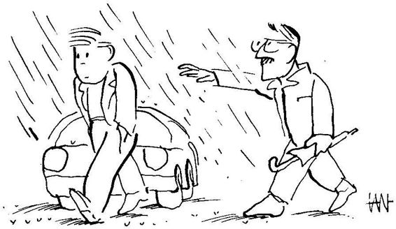
Ne diyeceğimi şaşırmış, şoförün söyledikleri zaten düşük olan güvenimi iyice sarsmıştı. Şoföre birşeyler söylemek istiyordum. Aklıma bir şey gelmiyordu. Durmuş onun yüzüne bakıyordum. Taksinin arkasındaki araçlar korna çalmaya başladı. Bu arada biri koluma girdi ve beni karşıya doğru yürütmeye başladı. Bir yandan yürüyor, bir yandan da konuşuyordu: "Haydi yürü delikanlı. Ne kadar tehlikeli ortamda olduğunu pek anlamış görünmüyordun! Şimdi dalgınlığın sırası değil!"
Karşıya geçmiştim; Beyazıt meydanına doğru yürümeye başladım. Benikarşıyageçiren adamyanımayaklaştı, "Etrafı pekgörecek durumda değildin, anlaşılan" dedi. Altmış-altmışbeş yaşlarında kır saçlı, güleryüzlü, gözleri son derece berrak ve sakin bir insan bana bakıyordu. içimden onun boynuna sarılarak ağlamak geldi. Güçlükle ağlama duygusunu bastırdım.
Anlayan ve sevgi dolu bir gülümseme vardı yüzünde. Göz göze geldik. Ayrılmak üzere adımını atarken durdu, bana döndü, karşımda bir an sessizce yüzüme baktıktan sonra, "Hüzün ve dalgınlık yaşamın parçası. Ama, siz hüzünlüsünüz ve dalgınsınız diye herkesin arabasını durdurarak size yol vermesini bekleyemezsiniz" dedi.
"Yardımınız için teşekkür ederim" dediğimde, gözlerimdedamlacıklar oluşmaya başlamıştı.
Yüzündeki sevgi ve anlayış dolu gülümseme ile konuşmaya devam etti: "Dünya bazen kapkaranlık gözükür; insan kendini yapayalnız ve değersiz görür. Bu duygular yaşamın parçası" diyerek yüzüme şefkatle baktı. "Sizin konuşmaya ihtiyacınız var. Eğer hüzün ve dalgınlığınızın temelinde yatan nedenleri bulmak istiyorsanız, sizi gerçek anlamda dinleyebilecek olgunlukta biriyle konuşmanız gerekir" dedi.
Yüzüne bakıyordum, artık göz yaşlarımı tutamıyordum, tane tane gözlerimden süzülüyordu. Devam etti:
"Adım Yakup. Sahaflar Çarşısı'ndaki Elif Kitabevi'nde beni bulabilirsiniz. Zamanınız olduğu zaman gelin, bir çayımı için" dedi.
Elini uzattı. Uzatılan eli sıktım, artıkhiç tutamadığım göz yaşlarımı göstermemek üzere Vezneciler yönüne döndüm, kaldığım yurda doğru gitmeye başladım.
Kaptanoğlu Özel Öğrenci Yurdu'nda ikinci kattaki odalardan birinde üç başka öğrenc.iyle birlikte kalıyordum. Odada kimse yoktu. Ayakkabılarımı çıkardın. ve yatağa yattım. Doya doya ağlayabilecek yalnızlığı bulabildiğim için mutluydum. Ağlamadan sonra gelen tatlı uykuya kendimi bıraktım ve o gece elbiselerimle uyudum.
Davranışlarından utanıp sıkılma. Yaşamın tümü bir denemedir.
RALPH WALDO EMERSON
YAKUP BEYTİMUR BEYi ki gün sonra Sahaflar Çarşısı'na gittim. Beyazıt Camii'nin olduğu taraftaki kapıdan girince solda Elif Kitabevi'ni gördüm. Kitabevi'nin önünde bir süre bekledim, ne diyeceğimi düşündüm. Kendini Yakup olarak tanıtan bu adamın karşısında gözyaşlarımı tutamadığım için biraz utanıyordum. Ayrıca karşılaştığımızda ne konuşacağımı, söze nasıl başlayacağımı bilemiyordum. Ama gözlerindeki şefkat ve anlayış beni etkilemişti, o yüzü yine görmek istiyordum.
Ben girip girmeme konusunda tereddüt ederken, dükkanın kapısından aynı adam çıktı, bana baktı, gülümsedi, "Gireyim mi, girmeyeyim mi, girince ne diyeceğim, diye mi düşünüyorsunuz?" dedi. Suçüstü yakalanmış birinin tavrıyla yüzüne bakakaldım. "Gel camii önündeki çayevinde biraz oturalım" diyerek önüme düştü.
Biz masaya otururduktan kısa süre sonra garson geldi; garsonun halinden onu tanıdığını ve saygı duyduğunu anlayabiliyordum. O kendine ıhlamur istedi, ben çay ısmarladım. "Daha önce söylemiştim, benim adım Yakup. Sizin adınız ne?" diye söze başladı. "Adım Timur, Edebiyat Fakültesi'nde Psikoloji öğrencisiyim" diye kendimi tanıttım. "Demek meslektaşız!" dedi. Kendisinin psikoloji dalında doktorası varmış.
"Yakup Bey, haber vermeden geldim, sizin zamanınızı alıyorum" diye söze başladım. Gözlerimin içine baktı; sakin ve sevecen bir hali vardı. "Timur Bey, geldiğinize memnun oldum. Lütfen zaman konusunda üzülmeyin. Eğer zamanım olmazsa size söylerim; kuşkunuz olmasın" dedi.
Altmış-altımışbeş yaşlarında birinin bana bey demesi tuhafıma gitmişti. "Efendim, siz bana Timur deyin, Timur Bey deyince sıkılıyorum" dedim.
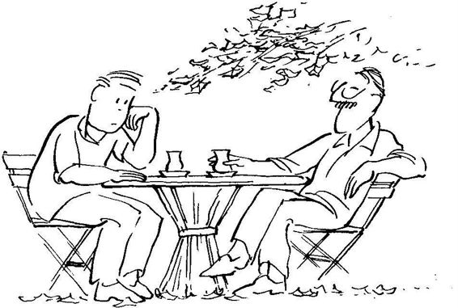
"Eğer size Timur dememi istiyorsanız, siz de bana Yakup deyin" diye karşılık verdi. Hiç beklemediğim bu cevap karşısında iyice afalladım ve farkında olmadan, "Hayır, rica ederim; saygısızlık olur" sözleri çıktı ağzımdan.
Gözlerimin içine iyice bakarak: "Belki beni ileride daha iyi tanıyacaksınız, belki bu son konuşmamız olacak. Ama şunu iyi bilmenizi istiyorum: Ne zaman benimle konuşursanız, saygınlık yönünden eşit iki insan olarak konuşacağız. Sizden daha yaşlıyım, uzun yıllar hocalık yaptım ve doğal olarak birçok konuda sizden daha bilgiliyim. Ne var ki, bu sizden daha saygıya değer olduğum anlamına gelmez. Siz, her insan gibi, en az benim kadar saygınlığı olan bir insansınız. Önce bunu kabul ederek işe başlamamız gerekiyor. Ben size «Timur Bey» demek istiyorum. Çünkü «Bey» sözü sizinle ilişkimizdeki saygınlığı ifade ediyor. Siz de bana «Yakup Bey,» derseniz, benim gözümde eşitlik ve saygınlık sağlanmış olur. Umarım buna itiraz etmezsiniz."
O an her şey yeni bir anlam kazandı. Çevremdekileri, çay getiren garsonu, kendimi önemli gördüm. İçimde, şimdiye dek pek aşina olmadığım bir coşkunun kıvılcımını sezinledim. Duygularımı saklamaya gerek görmeden, "Hayır Yakup Bey, itirazım yok" dedim.
"Anlayışınız için teşekkür ederim" dedi ve gözlerimin içine bakarak, "Haydi anlat bakalım" diye beni konuşmaya teşvik etti.
Nesrin ile olan ilişkimi kısaca özetledim. Kumkapı'daki çayevinde yaptığım evlenme teklifiyle ilgili etkileşimi anlattım.
Beni dikkatle dinledi. İlk defa bir kişiye böylesine rahatça kendimi açabiliyordum. Sözüm bittikten sonra, "Şimdi kendinizi nasıl hissediyorsunuz?" diye sordu. Hâlâ içimde hüzün olduğunu, kafamın bulanık olduğunu, neyi nasıl düşüneceğimi bilemediğimi, Nesrin'i gerçekten sevip sevmediğimi dahi bilemediğimi söyledim.
Yakup Bey, gözlerimin içine bakarak sakin sakin, "Sizi dinlerken gençliğimi anımsıyorum. Bu tür duygulara sadece benim kapıldığımı düşünür, diğer insanların anlamlı yaşamı var zannederdim. Bana anlattıklarınız yetişmekte olan her normal insanın geçirdiği, ya da yaşaması gerektiği olaylar dizisinden biri. Böyle duygu ve düşünceler kişinin benliğini bulmasına yol açar. Öncebunu saptayalım" dedive sıradan bir konuda konuşan insanların rahatlığıyla ıhlamurunu yudumladı.
"Yani benim hüzünlü olmam ve kafamın karmakarışık olması doğal, önce bu olayın doğal olduğunu kabul etmem mi gerekiyor?" diye emin olmak için sordum.
Sebebini bilmiyordum, ama durumumu doğal olarak kabul etmek içimi rahatlatıyordu.
"Evet, kafanızın bulanıkolması doğal" diye ilk söylediğini onayladı. Biraz sustuktan ve ıhlamurundan bir yudum daha aldıktan sonra, "Bana söyler misiniz, Nesrin'e evlenme teklif etmedenönce hayalinizden neler geçiriyordunuz? Öğrenmek istediğim, ileriye dönük düşüncelerinizde Nesrin sizin yaşamınızda nasıl bir yere oturuyordu?" diye sordu.
Bu sorunun cevabını bir süre düşünmem gerekti. Nesrin'in zengin bir aileden geldiğini biliyordum. Giyinişinden, hal ve tavrından, okuduğu yabancı dildeki kitaplardan farklı bir sosyal tabakadan geldiği anlaşılıyordu. Babasının İstanbul'un önde gelen işadamlarından biri olduğunu başka bir öğrenciden duymuştum. Psikoloji bölümünde yeni doçent olan biri, üç ay önce yine İstanbul'un zengin işadamlarından birinin kızıyla evlenmişti. Doçent beni sever ve özel ilgi gösterirdi. Yeni evine, bölümdeki asistanların yanı sıra beni de davet etmişti. Yeni evlilerin evine gittiğimde, Üsküdar'ın fakir ailelerinden birinden gelen doçentin şimdiki evinin ne kadar bakımlı ve zengin olduğunu gözlemiştim. Onun davranışını kendime örnek almıştım. Ben de zengin bir kızla evlenecektim. Nesrin'le tanışıklığımızın daha yakın bir arkadaşlığa dönmesinde bu isteğimin önemli etkisi vardı.
Yakup Bey hikayemi dinledikten sonra gülümsedi ve "Örnek aldığınız doçentgibi başarılı olamadığmızaüzüldüğünüzü sanmıyorum. Zengin kızla evlenerek sosyal yaşamını değiştirme isteğinizyerinegelmedi, ama sizin hüznünüzün vezihin bulanıklığızınaltında bunların yattığını da sanmıyorum. Fakir kızzengin erkekle evlenir, fakir erkekzengin kızla evlenir, bu bizim kültürde, daha doğrusu birçok toplumda romanlara, fil melere konu olmuş bir tema.Tanıdığınız doçent gibi siz debu kültürün ürünüsünüz; böyle bir beklentinin etkisinde kalmanız doğal. Ama, benim o gün sizin yüzünüzde gördüğüm hüzün, istediği zengin kızı elde edemeyen bir insanın hüznü değildi" dedi.
Sezgisel düzeyde dediklerine katılıyordum; ne var ki, zihinsel olarak ne dediğini anlayamıyordum.
"Yakup Bey, o gün benim yüzümde gördüğünüz ifade sizce neyi belirtiyordu" diye sorarak merakımı ifade ettim.
"Özünü bulamamış, duygu, düşünce ve davranışlarıyla yaşamı özgürce kucaklayamayan, karşılayamayan insanın iç burukluğunu ve acısını gördüm sizin yüzünüzde."
Yakup Bey'in sözü hedefini bulmuş bir ok gibi zihnime saplandı. Bu sözün önemini sezgisel olarak kavradığımı hissediyordum, bir düzeyde bana anlamlı geliyordu, ama başka bir düzeyde bu sözü duymak istemiyordum. İçimdebirhüzün, bir acı, biryalnızlıkduygusu kıpırdanmaya başladı.
Yine o şefkat dolu gözler üzerime çevrildi. "Başkalarının beklentilerini yaşamak çoğu kimseye kolay gelir" diye sözüne devam etti. "Ne var ki, çaresizlik nedeniyle başkalarının beklentilerini yaşayan insan yalnızdır, hem de derin bir yalnızlığa gömülüdür."
Bir yandan söylediklerini anlayıp anlamadığımı, önem verip vermediğimi keşfetmek istercesine yüzüme bakıyordu, bir yandan konuşmasını sürdürüyordu:
"Çünkükendiyle ilişkisikopuktur. Kendiyleilişkisiolmayaninsanın gerçek anlamda kimseyle ilişkisi olamaz."
Bu söz üzerine aramızda şöyle bir etkileşim geçti:
Timur: "Kişinin kendiyle ilişkisi olması ne demek?"
Yakup Bey: "Yaşamının bilincinde olarak kendi ilke ve değerleri çerçevesinde düşünce, duygu ve davranışlarını anlamlandırması demek."
Timur: "Herkes yaşamının bilincinde değil mi?"
Yakup Bey: "Benim söylediğim anlamda hayır! Biyolojik olarak yaşıyor olduğunu bilmek, yaşamının bilincinde olmak anlamına gelmez. Yaşamının bilincinde olan kişi kendini ailesiyle, mahallesiyle, kasabasıyla, ülkesiyle, dünyasıyla ve kademe kademe tüm evrenle ilişki içinde görür. Evrenle ilişkisini kendisi keşfeder; bu ilişkilerin anlamını kendi verir, başkası değil."
Timur: "Yani yaşamın anlamı kişiden kişiye değişiyor mu?"
Yakup Bey: "Her insan emsalsizdir. Her insanın kendine özgübir iç evreni vardır. Her insan kendi iç evreni içinde sonsuz zenginliğe sahiptir. Ne var ki, çoğu kez bu emsalsizliği görmez, insanları birbirine benzer kalıplar içinde algılarız. Kişi kendine bu kalıplar çerçevesinde bakmaya başladı mı, kendiyle ilişki kuramaz. Bu anlamda «kendiyle ilişkisi olmayan insanın gerçek anlamda kimseyle ilişkisi olamaz» dedim."
Biran sustu. Ihlamurundan bir yudum aldı ve konuşmasına devam etti:
"Örneğin, sizin Nesrin'in kendisiyle ilişkiniz yoktu, kafanızda yarattığınız Nesrin kalıbıyla ilişki içinde idiniz: Zengin ailenin kızı, sosyal ve ekonomik avantajlar getirecek bir varlık. Anlattıklarınızdan çıkardığım kadarıyla Nesrin dekendisini bulmuş, kendiyleilişkisinigeliştirmiş biri değil. Ne var ki, o sizin beklentilerinize uyduğu halde, siz onun kalıplarına uymuyorsunuz."
Ihlamurunu tazeleyen garsona teşekkür ettikten sonra sözlerine devam etti: "Kendini keşfetme süreciiçinde olan insanların başına sizin başınıza gelen türden olaylar gelir ve onlar da sizin gibi hüzünlenirler, acı çekerler. Hüznünüzü kaybetmeyin. Acınızı ucuza satmayın. Kendinizi bulmanız için yaşam size güzel olanaklar veriyor. Bu fırsatları kullanın. Sizin yaşamınıza yön verecek ilke ve değerleri bulma çabasına girin. Kendi öz ilke ve değerlerinizi keşfederek onları duy";tı, düşünce ve davranışlarınızda ifade ederek kişisel bütünlüğünüzü ve yürekliliğinizi geliştirin. İşte insanın gerçek özgürlüğü budur. Bu özgürlüğü yaşamlarının temeline oturtmayanlar, kendilerinin değil ancak başkalarının beklentilerini yaşarlar."
Ne cevap vereceğimi bilemiyordum. Söyledikleri şeyler benim için yeniydi. Bir yandan kendimi savunmak ve ona kalıpların ötesinde olduğumu göstermek istiyordum; diğer yandan içimdeki ses, yaşamımda çok önemli olacak bir insanla tanıştığımı ve savunucu olmamam gerektiğini söylüyordu. Söyledikleri sanki beni büyülemişti.
"Kendini arayan birçok insan bu arayıştan yorulur ve vazgeçer" dedi. Yüzüme uzun uzun baktıktan sonra, "Söylendiği gibi yaşamak, kendi yaşamını kurmaktan çok daha kolaydır" diye sözüne devam etti.
Bir süre ikimiz de sessiz kaldık. İçimde tanımlayamadığım bir tür heyecan, bir coşku kıpırdanmaya başlamıştı.
"Bunun temelinde ne yatar, biliyor musunuz?" diye bana bir soru yöneltti. İçimde kıpırdamaya başlayan duygulara kendimi kaptırmıştım. Sorusunun ne anlama geldiğini anlayamadım. Sorusunu anlamadığımı yüzümden anlamış olacak ki, açtı:
"Yani kendi yaşamını kurmak isteyen insanla, söylendiği gibi yaşamaya devam eden insanı ayırt eden temel özellik nedir, biliyor musunuz?" diye sorusunu yineledi.
Bilmediğimi söyledim.
"İnsan acı çekmenin, ıstırap çekmenin tam hakkını verir ve onları yaşamında bir öğretici olarak kullanabilirse, ilke ve değerlerini keşfederek zamanla kendine özgü iç dünyasını oluşturabilir. Ama, yaşamın acılarından kaçınmak için değişik savunmalar içine girerse, kendi öz ilke ve değerlerine ulaşamaz. Şimdi yaşam size özgü acıları önünüze koyuyor. Ya bu acıları göğüsler, onların hakkını vererek anlar ve üzerinde uğraşırsınız, ya da «Nesrin kim oluyormuş da beni beğenmiyormuş»dan başlayan ve hergün kafayı çekerek zil zurna sarhoş olmaya kadar giden birçok savunucu davranışdan birine kendinizi kaptırırsınız. Seçim sizin."
Ne diyeceğimi bilemiyordum. Yüzüne bakıyordum. İçimdeki coşku kıvılcımı daha da kuvvetleniyordu. Gerçekten bana önem veren ve bütün dürüstlüğüyle benimle konuşan değerli bir insanla karşı karşıya olduğumu sezinliyordum. Ama söyleyecek söz bulamıyor, yüzüne bakıyordum.
"Kendi temel ilke ve değerleri çerçevesinde yaşayan bir insan olmak istiyor musunuz?" diye sordu.
Tereddütsüz, "Evet!" cevabını verdim.
"Kendi temel ilke ve değerleri çerçevesinde yaşayan insan olmak için ne yapmak gerektiğini biliyor musunuz?" sorusuna da, yine tereddütsüz, "Hayır!" cevabını verdim. .
"Timur Bey, kapsamlı ve derinliği olan bir konu ile ilgileniyoruz. Konuyu irdelemek, araştırmak, tartışmak istiyorsanız, sizinle işbirliğine hazırım. Böylesine önemli bir konuyu birkaç karşılaşmada inceleyemeyeceğimiz aşikar. Zamanınız oldukça gelin, adım adım konunun temel boyutlarını tartışalım" dedi.
Şaşırıp kalmıştım. Böylesine olgun, gönlü ve kafası zengin bir insanın bana bu kadar zaman ayırabileceğini kabul edemiyordum.
"Sizin zamanınızı almış olmaktan çekiniyorum, Yakup Bey!" diyerek kafamdan geçeni dile getirdim. O çok tahat "Timur Bey, eğer zamanım olmazsa size söylerim. Lütfen siz benim namıma karar vermeyin. Kendi yaşamımla ilgili konularda karar verecek güç ve yeteneğim var" diyerek gülümsedi.
Bir süre sessiz kaldıktan sonra Yakup Bey konuşmaya başladı:
"İki koşulum var: 1) İlişkimizde eşit olacağız. Bu konuya «Bey» kelimesini tartışırken daha önce değinmiştim. 2) Birbirimize açık olacağız. İç dünyamızı olduğu gibi paylaşabilme cesaretini göstereceğiz. Ne dersiniz?"
Her iki koşulu da memnuniyetle kabul ettiğimi bildirdim.
Daha sonra yeniden görüşme vadiyle Yakup Bey'den ayrıldım. İçimde söze vuramadığım bir tür kıvançla odama geldim ve yine üstümü çıkarmadan yattım. Ama bu kez ağlamıyordum. Heyecanlıydım. O gece kolay uyuyamadım.
Başarı mı dedin? Başarı tamamıyla şansa bağlıdır! İnanmazsan başarısız insana sor.
EARL WILSON
TRAFİK KAZALARININ SÖYLEDİKLERİ
Yakup Bey'le konuştuklarımız beni etkilemişti. Nesrin'le ilişkimin türünü hemen kavramış fakat beni bu tür ilişki nedeniyle yargılamamıştı. Kendiyle ilişkisi olmayan insanların bu tür ilişkiler kurduğunu belirtmişti.
Benim yüzüme bakınca nasıl bir ifade gördüğünü sorduğumda, "Özünü bulamamış, duygu, düşünce ve davranış larıyla yaşamı özgürce kucaklayamayan, karşılayamayan insanın iç burukluğunu ve acısını gördüm sizin yüzünüzde" demişti. «Yaşamı özgürce kucaklamak» kavramı, anlamını pek bilmesem de beni heyecanlandırıyordu. Şu anda yaşamı doyasıya kucaklayamayan biri olduğumun farkına varmıştım. Başkalarının beklentilerini yaşayan insanların yalnızlığından söz etmiş ve "Kendisiyle ilişkisi olmayan insanın gerçek anlamda kimseyle ilişkisi olamaz" demişti.
Kişinin kendiyle ilişki kurmasının kolayca başarılmayacağım, ne var ki bu yolda çekilen hüzün ve acıların değerli olduğunu ve onlardan kaçmamak gerektiğini belirtmişti.
Yakup Bey'le konuştuklarımızı düşündükçe, içimdeki kendi yaşamımı kurma, kendi evrenimi anlama isteği artıyordu. Anlamlı yaşama ulaşmak için başlayan yeni bir yolculuğun başında görüyordum kendimi.
Yakup Bey'le görüşmemizden üç gün sonra yeniden Sahaflar Çarşısı'na gittim. Elif Kitabevi'ndeki kişi Yakup Bey'in şimdi orada olmadığını, yarım saat içinde gelmesini beklediklerini söyledi. Yakup Bey'i beklemeye karar verdim; beklerken Sahaflar Çarşısı'ndaki dükkanların vitrinlerini gözden geçirmeye koyüldum.
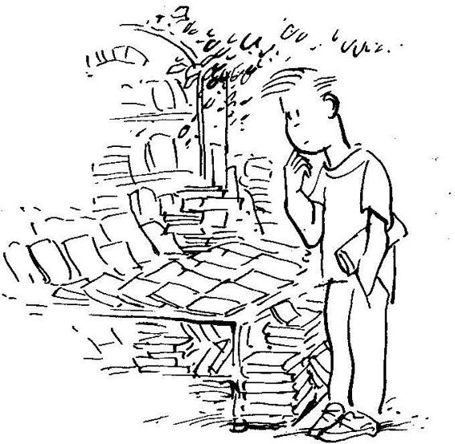
Daha önce Sahaflar Çarşısı'nda pek vakit geçirmemiştim; şimdi dükkanları seyrederken buranın ne kadar zengin bir yer olduğunu anlamaya başladım. Dükkanların tabelaları, camekanlar, kitapların sergilenişi buranın tarihi yer olduğunu hemen belli ediyordu. Dükkanların önündebirbirleriyle konuşandükkan sahiplerine ilkdefailgi ilebakıyordum; «Acaba bunlar da Yakup Bey gibi dış görünüşleri mütevazı, iç dünyaları zengin insanlar mı?» diye kendime soruyordum.
Vaktimin geri kalan kısmını daha iyi değerlendiririm diyebir gazete satın aldım ve bir köşede okumaya başladım. Yine trafik kazasından söz ediliyordu; kamyonla çarpışan otobüsteki 16 yolcu ölmüş, 12 kişi yaralı olarak hastaneye kaldırılmıştı. Sağ omuzuma bir el dokundu; beni görmekten memnun birinin yüz ifadesiyle Yakup Bey, "Haydi gel, çayevine gidelim" dedi.
Beyazıt Camii'nin önündeki çayevinde yine eski masamıza oturduk. Bu kez ben de ıhlamur ısmarladım. Elimdeki gazeteye baktı ve "Trafik canavarı can almaya devam ediyor" dedi. Yüzümebaktı, "Bugün sizinle ancak bir saat beraber olabileceğim. Daha sonraki buluşmamız için önceden gün ve saat tesbit edelim, böyle yaparsak sizinle daha uzun süre birlikte olabiliriz" dedi.
"Önceki konuşmamızda kiş inin kendi ilke ve değerleri çerçevesinde nasıl bir yaşam kurabileceğini konu edinmiştik.Elindeki gazetinin trafik kazalarıyla ilgili haberi, konuya iyi bir giriş teşkil edebilir. Ne dersiniz?" diye sordu. Kendisiyle sohbet etmeye geldiğimi, nasıl uygun görüyorsa ona uyacacağımı söyledim. Anlaştık anlamında bir kafa işaretinden sonra bana, "Türkiye'deki trafik kazaları sizce Türk toplumunun üzerinde düşünmesi gereken önemli bir olay mı?" diye sordu.
"Evet ama, Türkiye'de eğitim sorunu çözülmeden trafik kazaları önlenemez" diye görüşümü belirttim.
Söylediğim fikrin hemen kabul edileceğinden öylesine emindim ki, Yakup Bey'den benimle hemfikir olduğuna dair bir kafa işareti, yüz ifadesi bekliyorcasına yüzüne baktım.
"Eğitilmemiş kişiler mi trafik kazası yapıyor?" diye sorduğunda biraz afalladım. Bir süreöncegördüğüm bir trafik kazasının bana düşündürdüklerini anımsadım. Kendisine somut bir örnek vermek istediğimi söyledim. Gülümsedi ve "Güzel; somut örnekler üzerinde konuşmayı her zaman soyut düşünceler üzerine konuşmaya yeğlerim" diyerek anlatmamı istedi.
Ağlayan Anne
"Birkaç ay önce Karabük'e giderken gördüğüm trafik kazasını anımsıyorum" diye anlatmaya başladım. "Otobüsün yol üzerindeki küçük yerleşim yerine yaklaşınca yavaşlayarak öndeki araç konvoyuna katılmasından bir kaza olduğunu anlamıştım. Otobüs kaza olan yerden şerit değiştirerek geçerken, yol kenarına fırlatılmış paramparça bir bisiklet, üstü gazete parçalarıyla örtülmüş kanlı 8-9 yaşlarında bir çocuk cesedi ve biraz ileride komşularının teselli etmeye çalıştığı, dizlerini döverek ağlayan bir anne görülüyordu.
"İçim burkularak seyrettiğim bu manzara beni derin derin düşündürmüştü. O gün otobüste düşündüklerimi hatırlıyorum: Kış günü yağmurdan sonra her yerin çamur olduğu o küçük yerleş im merkezinde, çocukların bisiklete binebileceği tek yer karayolu idi. Yerleşim bölgesinin içinden geçen yolu inekler,eşekler, atlar vearabalar, kamyon, otobüs ve otoların yanı sıra kullanıyordu. Biliyordum ki bu zavallı anne, önce içi kan ağlayarak ağıtlar yakacak, sonra yakınlarından teselli bulacak, çocuğıjn gömülmesini izleyecek yedinci gün, kırkıncı gün duaları ve mevlût gibi dinî vecibeleri yerine getirecekti. Ama sonra, bu annenin ve köydeki diğer insanların hayatları kazadan evvelki gibi devam edecekti.
"Çocukların oynayabileceği çamursuz oyun alanı yapmayı kimse düşünmeyecek, trafiğin daha az tehlikeli olması için üst geçit yapma, yerleşim bölgesinden geçen yolun kenarına çit çekme gibi tedbirler almaya kimse girişmeyecekti. Trafik belki 14ay, belki 8 ay, belki 3 hafta sonra başka bir kurban daha alacak, yine yas ve ağıtlardan sonra yaşam olduğu gibi devam edecekti. Kendi kendime, «Bütün bunlar halkın cahil olmasından, eğitilmemiş olmasından kaynaklanıyor» diye düşündüğümü hatırlıyorum. Eğeryerleşimbölgesindeki halkın çoğunluğu eğitilmiş olsa idi, kendi yaşamlarının sorumluluğunu yüklenerek çocuklarına ve kendilerine daha sağlıklı ve emniyetli bir çevre yaratma yolunda işbirliği içinde çalışmaya başlarlardı."
Yakup Bey dikkatle anlattıklarımı dinlemişti. "Anladığım kadarıyla sizin esas üzerinde dıtrmak istediğiniz, kişilerin yaşamlarından kendilerini sorumlu tutabilmeleri vebu sorumluluk duygusuyla yaşamlarına yön verebilmeleri. Eğitimin sorumlulukduygusunun oluşması ve kişilerin kendi yaşamlarına sahip çıkması için gerekli olduğunu düşünüyorsunuz. Dediklerinizi doğru anlamış mıyım?" diye sordu.
Bir süre düşündüm. "Evet" diye cevap verdim. Çünkü söylemek istediğimi o gayet güzel özetlemişti. O söyledikten sonra ne düşündüğümü kendim de açık seçik görebilmiştim.
"İlk düş üncenizi kabul ediyorum, ama ikincisini kabul edemiyorum" dedi.
"İkinci düşüncem hangisi?" diye sormak zorunda kaldım.
"Yukarıda yaptığım özetlemede sizin temel iki düşüncenizi dile getirdim" dedi. "Ifade ettiğiniz ilk düşünce, sorunun çözülmesi !ç!n kişilerin sorumluluk duygusuyla yaşamlarını sürdürmeleri gerektiği, ikinci düşünce de, sorumluluk duygusunun ancak eğitim yoluyla elde edilebileceği idi. Doğru değil mi?" diye yüzüme baktı.
Evet, gerçekten söylediklerimin bu ikitemel fikirle özetlenebileceğini gördüm.
"Trafik sorununun çözülebilmesi için toplumumuzdaki insanların, örneğin sizin kazayı gözlemiş olduğunuz köydeki insanların, sorumluluk duygusuyla bilinçli bir çaba içine girmeleri gerektiğini kabul ediyorum" diye sözüne devam etti. Ihlamurundan bir yudum aldıktan sonra, "Ne varki,bu sorumlulukduygusununokullarımızdauygulanan türden eğitimle geliştirileceğini kabul edemiyorum" diye ekledi.
Şimdiye kadar okuduğum bütün kitap ve gazete makalelerinde her şeyin temelinde «eğitimsizlik» yattığını o kadar çok okumuştum ki, artık hiç kuşku duymadan, üzerinde pek düşünmeden bütün sorunların eğitimle düzeltileceğini söyleyebiliyordum.
Yakup Bey'in sorumluluk duygusunun okullarımızda verilen türden eğitimle geliştirileceğini kabul etmemesi benim için yeni bir düşünce idi, Kçndimi pek aşinası olmadığımyeni bir yörede hissettim. Bu yörede ezberleyerek bellediğim ve şimdiye kadar pek düş ünmeden tekrar ettiğim düş üncelerle pek yol alamayacağımı sezinlemeyebaşladım.
Yakup Bey kendisine soru sormamı beklercesineyüzümebakıyordu. Ne soracağımı bilemiyordum. Sustum, onun konuşmasını bekledim.
Bana, "Mevcut eğitimin sorumluluk duygusunu yaratmadığı kanısını nasıl oluşturduğumu sormayacak mısınız?" diye gülümsedi.
"Evet, gerçekten sormak istiyorum" diye canlandım. "Sorumluluk duygusunu eğitim vermiyorsa, ne veriyor?."
Yakup Bey, "İsterseniz önce trafik kazalarıyla ilgili olarak «aydın» dediğimiz eğitilmiş kişinin ne kadar sorumlulukgösterdiğini gözlemleyelim, daha sonra sorumluluk duygusunun kaynaklarını araştıralım," dedi.
Yakup Bey kanılarını dayandırdığı gözlemleri benimle paylaşmak istiyordu. Tartıştığımız konuya böyle yaklaşmakhoşuma gitti. Fikirleri incelerken bunların arkasında yatan mantığı ve dayandırıldıkları gerçekleri adım adım, yavaş yavaş izlemeye alışık olmamakla beraber görüyordum ki şimdi böyle bir yöntem uygulamaktaydık.
"O zaman şöyle sorayım: Okullarımızda verilen türden eğitimin sorumluluk duygusunu oluşturamadığı kanısına sizi götüren kanıtlarınız var mı?" diye sorumu yeniledim.
Yüzündebirgülümsemebelirdi. İrdelediğimiz konuyla ilgili düşüncenin adım adım gelişmesi gerektiği mesajını algıladığımı anlamış ve bu nedenle memnun olmuştu.
"Kazanın olduğu köydeki insanların, özellikle çocuğunu kazada kaybeden annenin acizlik içinde ağlamanın, yakınmanın ötesinde bir şey yapamadığını gözlediniz. Ben de diyorum ki, insanlarımızın acizliğinin temelinde, bizim anladığımız türden «eğitim»in ötesinde bir neden yatıyor. Üniversite bitirmiş, uzmanlaşmış insanımız da, okula gitmemiş vatandaşımız gibi birçok konuda acizlik göstermekte, kendi toplumunu ve çevresiniilgilendiren konularda sorumluluk duygusuyla bir araya gelip işbirliğiyle çözüm aramamaktadır. «Eğitilmişler»in de, «eğitilmemişler» gibi «acizinsanlar» olduğunu söylemekoldukça iddialı olduğu için, bu ifademi destekleyen bazı gözlemlerle konuyu geliştirmeye devam etmek istiyorum" dedi.
Yakup Bey, garsona birer ıhlamur daha ısmarladıktan sonra "Dükkandan bir yazı getireceğim, bana iki dakika izin ver" diyerek ayrıldı ve elinde bir gazete ile birkaç dakika sonra geri geldi.
Sıraya Dizili Bekliyoruz
Yakup Bey'in elinde Cumhuriyet Bilim Teknik'in 3 Ekim 1992 günkü sayısı vardı. "Haftanın Gündemi" köşesinde Orhan Bursalı'nın Sıraya dizili bekliyoruz... başlıklı yazısı yer alıyordu. Yazıdaki bazı yerlerin altı çiziliydi. Altı çizili olan yerleri okumamı istedi, okumaya başladım: 'Hangimiz bir trafik kazasına kıyısından da olsa bulaşmadı veya kazalara ramak kalan olaylar yaşamadı? Sevdiklerini, bir arkadaşını, dostunu trafik kazasında kaybetmeyen kaç kişi kaldıb u ülkede? Şöyle bir düşünün, son beş yılda trafiğe kurbanh angi ünlü kişilerimizi sayabilirsiniz? (Dip not: Örneğin: Vedat Dalokay, Sami Güner, Metin Oktay, llhami Soysal, Atanır Oğuz,
Yekta Okur, Safiye Filiz, Hülya Akyol ....) Yılda 10 binin üstünde insan canı alan trafik kazaları öyle görünüyor ki yazgımız oldu, öylesine kanıksandı.. 30 bin kişi bile ölse, ne bilim adamları, ne sürücüler, ne gazeteciler, ne yetkililer, ne karayolları, ne belediyeler, ne de bakanlıklar ağıt yakmanın ötesinde bir şey yapacak."
(«Ağıt yakmanın ötesinde» ifadesinin altı iki kez çizilmişti.)
“Trafik konusunda yeni ne yapıldığını söyleyebilirsiniz, kemerleri bağlama zorunluluğu dışında? O da yıllarca sonra geldi. Otomobil şirketlerimiz arka koltuklara henüz kemer bile takmıyor ve çarpmalarda boyun kırılmalarına karşı tek önlem olan ön koltuk arkalarına kafalık takmayı lüks aksesuar olarak görüyorlar.”
"Basında, trafik kazalarını ele alan tek bir ciddi araştırma yayınlanmadı. Bilim adamlarımız, psikoloğundan mühendisine, hangi ciddi araştırmayı yaptılar? Türkiye'nin yaşadığı böyle bir toplumsal terör, arşivler ve kağıtlar üzerinde değil, «suç yerinde» yapılacak gözlem, toplanacak verilerle ve her yönüyle incelenmez mi? «Suça iştirak edenler»in insan özellikleri soruşturulamaz mı? Çeşitli hipotezler kurulup doğruluğu, yanlışlığı araştırılamaz mı? "
Altı çizili yerleri okuduktan sonra Yakup Bey'e baktım. Konuşmaya devam etti:
"Orhan Bursalı'nın yukarıdaki yazısı, Türk bilim adamlarının yılda binlerce can alantrafik kazaları konusunda, daha öncebelirttiğimiz ufak yerleşim bölgesindeki «cahil» halktan hiç de farklı davranmadığını kanıtlıyor. Bir yakınımız öldüğünde, biz aydınlar da bisiklet sürerken otobüs altında kalarak ölen çocuğun annesi gibi «ağıt yakıyoruz,» nevar ki, bunun ötesinde bir şeyler yapabilmeye gelince «aciz» kalıyoruz."
Yakup Bey'in söylediklerini açık seçik takip edebiliyordum. Gözleminin altında yatan gerçekler apaçık ortadaydı. Böylesine açık seçik, adımadımdüş üncelerini anlatan, ifade eden biriyle olmanın zevki sanki içtiğim ıhlamurun sıcaklığı gibi beni sarıyordu.
Dışarıdan Hiçbir Şeye Gereksinmemiz Yok
Kendisini dikkatle izlediğimi bilen bir ifadeyle Yakup Bey devam etti: "Türkiye'deki trafik kazalarını çağdaş anlamdabilimsel araştırmaya konu edinip, bilimsel inceleme verilerine dayalı etkili bir program geliştirebilmek için Türkiye'nin dış ülkelerden hiçbir şeye gereksinmesi yok. Bu tür araştırmayı düzenleyerek uygulayacak, verileri toplayıp analizleri yapacak eleman, yöntem, araç ve gereçlerin hepsine sahibiz. Araştırmanın yapılmaması bilgi, eleman, araç, gereç ya da olanak yoksulluğundan kaynaklanmıyor'' diye sözlerine devam etti.
O anda aklıma «insanın değeri» kavramı geldi. Bu kavramla durumu açıklamayı düşündüm:
"Türkiye'de trafik kazaları önemsenmiyor, çünkü insanın değeri yok. İnsan değeri olmayınca, trafik kazalarında kaç insan kaybettiğimiz üzerinde düşünmek anlamını yitiriyor" dedim.
Yakup Bey, gülümsedi, "Evet, sık sık gazetelerde ileri sürülen açıklamalardan biri de bu” dedi.
İnsana Değer Verilmediği İçin mi?
"Türkiye'de kapsamlı ve sürekli trafik kazalarını inceleyen bilimsel araştırmaların yapılmayışı, insan yaşamına değer vermeyişimizden kaynaklanıyor olabilir mi?" diye sorusunu yeniledi. ’ 'Bazıları, «Efendim, bütün bunların olabilmesi için önce bu ülkede insana değer verilmesi gerekir. Bizde insan değeri yok; bu nedenle, trafik kazalarında yılda ha 10 bin ha 30 bin insan ölmüş, ne fark eder? Trafik kazalarım nüfus artışım denetler gibi kullanıyoruz. İnsana değer verme'tliğimiz sürece, bu konularda ilerleme kaydedemeyiz,» diyebilir" diyerek ıhlamurunu yudumladı ve bir süre sessiz kaldı.
"Bu konuda kesin karar vermeden önce, şöyle hayali bir senaryo yaratalım: Farzet ki, bir düşman ülke günde 7 ile 25 arasında değişen sayıda Türk vatandaşını pusuya düşürerek öldürüyor. Bu vatandaşlar toplumun değişik kesimlerinden geliyor; içinde yaşlısı, genci, kadım, erkeği, zengini, fakiri, tanınmışı, tanınmamışı var. Bu durum birkaç gün değil, günlerce, haftalarca, aylarca ve yıllarca devam ediyor. Düşman elini kolunu sallaya sallaya geliyor ve her gün 25 kadar vatandaşı öldürmeye devam ediyor.
"Düşmanın fütursuzca aramızdan hergün 25 kişi öldürmesine rıza gösterecek bir Türkiye düşünebiliyor musun? Düşman günde 25 yurttaşı öldürse, ilk günden itibaren hükümetin konuya dikkati hemen çekilir. Hükümetin elinden bir şey gelemiyorsa, katliamı durduracağı düşünülen başka bir idare o hükümetin yerine geçer. Yeni idarenin bu amaçla başa geçişini hepimiz alkışlayarak onaylarız."
Söyledikleriyle tamarniyle hemfikirdim. Kendisiyle hemfikir olduğumu anlatırcasına, o konuşurken başımla tasdik işaretleri yaptığımın farkına vardım.
Yakup Bey izlendiğinin bilincinde sözlerine devam etti: "Eğer, insan yaşamına verilen değer, yukarıda iddia edildiği gibi gerçekten düşük olsa idi, ister trafik, ister düşman öldürsün, kaderimize razı olmamız gerekirdi. Ne var ki, aynı miktarda insan öldürdüğü halde trafik konusunda, Orhan Bursalı'nın da gözlemlediği gibi, «Ne bilim adamları, ne sürücüler, ne gazeteciler, ne yetkililer, ne karayolları, ne belediyeler, ne de bakanlıklar olarak ağıt yakmanın ötesinde hiçbir ciddi girişimde bulunmuyoruz.» Niçin?" dedi ve benden cevap beklercesine yüzüme baktı.
"Düşmanınyurda gelip vatandaşlarımızı öldürmesiyle, trafik kazalarında insanlarımızın ölmesi aynı değil" diye düşüncemi ifade ettim.
”Evet, aynı şey değil, bunuben de kabul ediyorum. Nevar ki, eğer insan değeri sadece sayılarda kendini ifade etse idi, ister düşman öldürsün, ister trafik her iki halde de ölü sayısı aynı olduğu için benzer ilgiyi göstermemiz gerekmez miydi"
"Ama Yakup Bey, verdiğiniz örneğin birinde ölü sayısının ötesinde, bir ulusun bağımsızlığı, onuru ve yaşama hakkı söz konusu oluyor. Onun için iki olay birbirinden farklı" diye itiraz ettim.
Düşüncelerimi ne kadar rahatlıkla ifade edebildiğimi gözledim. İçimde herhangi bir tedirginlik olmadığını hissettim, ne söylersem söyleyeyim, Yakup Bey'in beni yargılamadan dinleyeceğinden emindim. Bu güven duygusunun tadına vararak yeniden ıhlamurdan bir yudum aldım ve yüzüne bakarak söylediklerime cevap bekledim.
”Bir ulusun bağımsızlığının önemi, ulusun kendi için yapabileceği işten kaynaklanır. Örneğin, eğer Türkiyebağımsız ulus olmasaydı, kendi halkının gerçekihtiyaçlarını,istese dahibirinci plana alamazdı. Bağlıolduğu, kendini yöneten güçlerin istediği yönde hareket etmek zorunda kalacaktı."
”Aynı şekilde ulusun onuru, o ulusu oluşturan insanların onurlu davranışlarıyla oluşur ve devam eder. İnsan onuruna önem vermeyen bireylerden oluşanbir ulusun, her şeyin üstünde, soyut, temelsiz ulusal onurundan söz edilebilir mi?"
"Yaşama hakkı düşman saldırdığı zaman söz konusu oluyor da, trafikkazaları öldürdüğü zamansözkonusu olmuyormu? Konuyu iyice irdelediğin zaman trafik kazalarının can alışı, düşman güçlerin can alışı kadar ülkenin ulusal bağımsızlığı, onuru ve yaşama hakkı ile ilgili. Ama, bugün bir ulusal tarama yapılsa ve vatandaşın ne düşündüğü sorulsa, hemen hemen herkes sizin gibi, trafiğin can almaya devam edişini düşman güçlerin öldürmesinden çok farklı görecektir."
"Şimdi sorulması gereken, «Aynı miktarda adam ölmesineyol açtığı halde bu iki olay birbirinden niçin böylesine farklı algılanıyor?» sorusudur." Sandalyesini biraz geriye atarak bacak bacak üstüne attı ve konuşmasına devam etti:
Bilinen ve Bilinmeyen Olaylar
"«Düşmanla savaşma» tarihimizde aşina olduğumuz, nasıl yapıldığını bildiğimiz, topluma yaygın algılama, düşünme, değerlendirme ve karar verme mekanizmalarını içeren «bilinen türden bir olay»dır. Bu «bilinen türden olay»la ilgili türkülerimiz, hikayelerimiz, destanlarımız vardır. Yaşamımıza anlam veren özbenlik tanımımızla, bu «bilinen olayın» ilişkisi açık ve seçiktir.
"Öte yandan, «trafik kazalarını önlemek için bilimsel program geliştirme,» tarihimizde aşina olmadığımız, nasıl yapıldığını bilmediğimiz, toplumumuzda henüz yaygın olmayan algılama, düşünme, değerlendirme ve karar verme mekanizmalarını içeren «bilinmeyen bir olay»dır. Trafik kazalarını önlemesini bilenyetkiliyi hangi ünvanlarla taltif edeceğimizi dahi bilemeyiz. «Gazi» olamaz, «kahraman» olamaz, «paşa» olamaz, şu veya bu isim altında verilecek bir madalya dahi yoktur.
"Önceden kalıpları geliştirilmiş «bilinen olaylarla» başa çıkabilmek için girişimlerde bulunabilirken, henüz kalıpları oluşturulmamış, kendine özgü çözüm yolları içeren yeni olaylar karşısında hiçbir girişimde bulunamayan, acizleşen insanımızın psikolojik süreçleri nereden kaynaklanmaktadır? İşte sizin daha önce dile getirdiğiniz soruya şimdi geldik. Sorumlu ve etkili yaşamı olan kişi ile, sorumsuz ve aciz insan arasındaki fark nereden kaynaklanmaktadır?"
Yakup Beyyan cebindenbir kitap çıkardı. ' 'Bu kitabın 45. sayfasında hepimizin sık sık gözlediği bir olay anlatılıyor. Lütfen oku" dedi.
Küçük İbrahim'in Öyküsü
İçimizdeki Çocıık(] başlığını taşıyan kitaptaki gösterilen sayfaları okudum. İbrahim adlı bir küçük çocuğa babasının isteğini nasıl yaptırdığı anlatılıyordu. Yakup Bey, "Şimdi kendini İbrahim yerine koy ve aşağıdaki ifadelere «Evet» ya da «Hayır» cevaplarından hangisini vereceğini düşün" diyerek şu soruları yöneltti:
(1) Remzi Kitabevi, 1992.
• "İlgi ve eğilimlerim önemsenir, onların geliştirilmesi için bana yardım edilir."
/ / Evet / / Hayır
• "Ben, ben olduğum için bana değer verilir."
/ / Evet / / Hayır
• "Ben, ben olduğum için koşulsuz sevilirim."
/ / Evet / / Hayır
• "Yaşamımı istediğim yönde geliştirme gücüme saygı duyulur ve gücümü artırmak için desteklenip yüreklendirilirim."
/ / Evet / / Hayır
• "Dünyayı kendi gözümle görme, kendi kulağımla duyma, kendimce algılama özgürlüğüme saygı duyulur.”
/ / Evet / / Hayır
Her ifadede «Hayır» seçeneği cevap olarak belirdi. Yakup Bey'e soruları nasıl cevapladığımı söylediğimde, "İbrahim de düşünsel düzeyde değil ama, sezgi düzeyinde ifadelerin herbirine «Hayır» cevabını verecektir. İbrahim'in yetiştiği ortam bu özelliği ile «kalıplayıcı» ortam tanımına uygundur" dedi. Yakup Bey durdu, bir süre sessiz kaldı. Yeni bir konuya geçmeye hazırlandığını hissediyordum. Ihlamurundan birkaç yudum aldıktan sonra konuşmasına başladı.
«Kalıplayıcı» ve «Geliştirici» Ortamlar
"Çocuğun içindeyetiştiği ortamı «kalıplayıcı» ve «geliştirici» olarak tanımlayabiliriz" diye sözüne başladı. «Kalıplayıcı ortam»ın en belirgin özelliği, çocuğun doğuştan getirdiğiyetenekleri, eğilimleri ve özellikleri ne olursa olsun, onu daha önceden belirlenmiş kalıplar içine sokmayı amaçlaması, bütün çabanın bu yönde olmasıdır. Öyküsünü kısaca okuduğun İbrahim'in dünyayı keşfetmesi, çevresiyle etkileşim kurarak gücünü o çevrede denemesi, özbenliğine güven duygusunu geliştirmesi önemsenmez; baba, bu yönlerin farkında bile değildir. Onun için önemli olan, «çocuğun babaya koşulsuz itaat etmeyi öğrenmesi,» «erkek çocuğu olmanın gereklerini yerine getirmesi» gibi kalıplardır."
"İbrahim'in yetiştiği ortam «geliştirici ortam» niteliğinde olsaydı, İbrahim'in karıncalara gösterdiği ilgiye saygı duyulurdu. Çocuğun kendini ve çevresini daha ayrıntılı olarakgözleyebilmeyeteneğini kamçılayan oyuncaklar alınır, kitaplar verilirve doğa gezilerineçıkarılırdı" dedi veson ifadeyi komik bulup bulmadığımı görmek istercesine yüzüme baktı.
Çocuğunun yeteneklerini geliştirmekiçinbirbabanınbilinçli olarak kitap ve oyuncak aldığını hiç görmediğim gibi, çocuğun bu amaçla doğa gezilerine çıkarıldığını şimdiye dek hiç gözlememiştim. Gerçekten böylesine çocuklarının yetişmesine önem veren babalar var mı diye düşündüm. Yakup Bey o anda bana biraz hayalperest biri gibi göründü.
Düş üncelerimi sezinlemiş olmalı ki, Yakup Bey hafifçe gülümseyerek konuşmasına devam etti: "İbrahim'in yetişme ortamının «kalıplayıcı» olması, onun zihinsel, duygusal ve bedensel yeteneklerinin gelişmesini sürekli engeller. Ailenin yanı sıra, çocuğun ilişkide bulunduğu amca, hala, teyze, dayı gibi diğer aile üyelerinin de kalıplayıcı olması, İbrahim'in gelişmesini daha da köstekleyecektir. Okuldaki öğretmenlerin kalıplayıcılık derecesi oranında, «bizim dediğimizi yaptığın sürece değerlisin, aksi halde senin duygu, düşünce ve davranışlarının hiçbir değeri yoktur,» mesajı daha da pekiştirilir."
"Bu mesaj ortaokul, lise ve hatta üniversitelerde verilen kalıplayıcı eğitimle iyice yerli yerine yerleştirilir. Bütün kurumlarıyla kalıplaşmış bir toplum vekültür İbrahim'in, «Otoritelerin dediğine uyduğum sürece değerliyim. İnsan olarak düşünce, duygu ve eğilimlerimin hiçbir değeri yok. Kendime özgü duygu, düşünce ve eğilimler esasında zararlı, acaip, bastırılması gereken, utanılacak yönlerim» inancını perçinler. Böyle bir inanç aile, sosyal çevre ve eğitim kurumu tarafından yaşamın her yönünde pekiştirilince, kişi kendi yaşamının sorumluluğunu otoritelere bırakmasını öğrenir. Otoriteler söylemedikçe sorumluluk almaz. Yaşamını yönetmekten acizdir."
Yakup Bey bu noktada bana bir soru yöneltti. "Psikoloji okuyorsunuz, değil mi?" Başımla "Evet" dedim. "Şimdi bana söyleyiniz Timur Bey, eğer hükümet sizin bölümle ilişkiye geçse ve «Türkiye'deki trafik kazaları üzerine bir araştırma yapmanızı istiyoruz» dese, bu araştırmaya katılmak isteyen öğretim üyesi bulunur mu?"
Hükümetten böylebir öneri gelsearaştırmayakatılacakvegerçekten olumlu katkıları olacak öğretim üyelerini düşünebildiğimi söyledim.
"İştebütünmesele bu noktada düğümleniyor" dedi. "Otorite istediği zaman sorunlarımıza sahip çıkarız. Orhan Bursalı'nın makalesinde yaptığı gözlem yerinde ve geçerli: 30 bin kişi bile ölse, ne bilim adamları, ne sürücüler, ne gazeteciler, ne yetkililer, ne karayolları, ne belediyeler, ne de bakanlıklar ağıt yakmanın ötesinde bir şey yapacak.
"Eğer ülkemizde aydın olmanın sorumluluğunun bilincinde olan etkili insanlar Bursalı'mn sözünü ettiği kurumlarda olsaydı, birbirleriyle öylesinebir etkileşimkurarlardı ki, bu ortamda hükümet, aydının başlattığı yoldan gitmek zorunda kalırdı."
"Aydın kavramını kimler için kullanıyorsunuz?" diye Yakup Bey'e sordum.
Yakup Bey bir süre düşündü; daha sonra konuşmaya başladı. "Aydın kelimesini sıksıkkullandığımın farkındayım. Aslında teknikbir terim olarak değil yüksek eğitim görmüş, toplumda eğitime dayalı bir meslek sahibi kişileri belirtmek için kullanıyorum."
"Bu tanımınız yüksek eğitim görmeyen ya da eğitime dayalı mesleği olmayan, ne var ki, kendi çabalarıyla kendilerini yetiştirmiş kimseleri dışarıda bırakmıyor mu?" diye, Yakup Bey'in yapmış olduğu tanımın kısıtlılığını dile getirdim.
Yakup Bey, "Evet, böyle bir sorun var. Aslında oldukça karmaşık birkonuya dokunmuş durumdasınız. Nevarki,bunutartışmayabaş!arsak bizi şu andaki konumuzun dışına çıkarız. Bu nedenle, «aydın» dediğimiz zaman eğitilmiş, toplumda sorumlu mevkilerde bulunan, yüksek eğitime dayalı meslek icra eden, bu nedenle eğitilmemiş insanlara göre toplumu yönlendirmede daha etkili kimseleri kastettiğimizi anlayalım; bunun ötesinde bir anlam yüklemeyelim."
Yakup Bey'in kullandığı «aydın» kavramının kısıtlılığının farkında oluşu beni tatmin etmişti. Bu konuyu daha çok irdelemek istemedim.
Yakup Bey saatine baktı. Ihlamurundan bir yudum aldıktan sonra konuşmasına devam etti: "Sizinle başladığımız buluşmalarımızda kalıplayıcı ve geliştirici ortamlarda yetişmiş kişilerin algılama, düşünme, karar verme, seçme ve yaşamlarını yönetnıe açılarından birbirlerinden nasıl farklı davrandıklarını inceleyeceğiz."
"Böyle bir incelemenin sonunda, Nesrin'le konuştuğunuz zaman hissettiğiniz çaresizliğin altında yatan nedenleri olduğu kadar, yılda binlerce kişi kaybettiği halde trafik kazaları konusunda ciddi araştırma ve önleyici program yapmaya başlamamış bir toplumun davranışının altında yatan temel faktörleri de umarım anlamaya başlarız" dedi. Kendinin şimdi gitmek zorunda olduğunu ifade etti. Önümüzdeki perşembe günü öğleden sonra buluşmak üzere ayrıldık.
Hemen yurda gittim ve daha öncebaşka amaçla aldığımfakat henüz ancak birkaç sayfası kullanılmış bir deftere o gün konuştuklarımızı not etmeye başladım. Sanki yakında başlayacak uzun bir yolculuğun heyecanı içindeyim.
«Kaza, geliyorum der.» Bu sözün halk arasında kullanılan şekli, «Kaza, geliyorum demez»dir.
EGE CANSEN
GAZETELERİN SÖYLEDİKLERİ
Yakup Bey'in söyledikleri benim için yeniydi. «Etkili» ve «aciz» insan kavramları beni düşündürmeye başlamıştı.
Son buluşmamızda "Yaşama hakkı düşman saldırdığı zaman söz konusu oluyor da, trafik kazaları öldürdüğü zaman söz konusu olmuyor mu? Konuyu iyice irdelediğin zaman trafik kazalarının can alışı, düşman güçlerin can alışı kadar ülkenin ulusal bağımsızlığı, onuru ve yaşama hakkı ile ilgili. Ama, bugün bir ulusal tarama yapılsa ve vatandaşın ne düşündüğü sorulsa, hemen hemen herkes sizin gibi, trafiğin can almaya devam edişini düşman güçlerin öldürmesinden çok farklı görecektir" demesi beni çok düşündürmüştü. Onun olaylara bakışı ve anlamlandırışı benimkinden farklıydı ve bu farklılık beni ürküteceği yerde, aksine çekici geliyordu.
Yakup Bey'le buluştuğumuzun ertesi günü gazeteler büyük başlıklar halinde Adnan Kahveci'nin ve bazı aile üyelerinin trafik kazasında öldüğünü yazıyorlardı. Gazetelere haber, politik yaşamdaki arkadaşları için üzüntü kaynağı olan bu olay da diğerleri gibi bir süre sonra unutulacak ve «trafik canavarı» normal yaşamını sürdürmeye devam edecekti.
Elime, Sabah gazetesinde yayınlanan ufak bir köşe haberi geçti. «Trafiğe 6 bin Kurban Verdik» başlıklı haber kısaca şöyle diyordu:
«ANKARAEmniyet Genel Müdürü Yılmaz Ergun, 1992 yılında yaklaş ık 141 bin trafik kazasında 6 bin vatandaşın hayatını kaybettiğini söyledi; "Bu konuda başarılı olamadık. Ne yazık ki, trafik terörünü önleyemedik" dedi. Otomotiv sektöründeki gelişmeye paralel bir altyapı sağlanamadığını, ayrıca sürücü eğitimsizliğinin de kazalarda önemli payı olduğunu vurgulayan Ergun, şöyle konuştu: "Yeni Karayolları Trafik Yasasının değişmesiyle caydırıcılık sağlanacaktır. Hatta bazı suçlarda hapis cezası bile getiriliyor."
Yakup Bey Emniyet Genel Müdürü ile Konuşuyor
Bu küçük gazete haberi bende Emniyet Genel Müdürü ile Yakup Bey'i karşı karşıya konuşturma isteği uyandırdı. Hayalimde onları tanıştırdım ve karşılıklı konuşturdum.
Yakup Bey: "Sayın Genel Müdür, herikimiz de trafiğin çokcanaldığı konusunda anlaşıyoruz. Anladığım kadarıyla siz trafik kazalarının altında yatan nedenleri üç temel faktöre indirgeyebiliyorsunuz: 1) altyapı yetersizliği, 2) sürücü eğitiminin eksikliği, 3) Trafik Yasası'ndaki caydırıcılık noksanlığı. Doğru algılıyor muyum?"
Genel Müdür: "Evet, doğru algılıyorsunuz."
Yakup Bey: "Bu üç faktörün önemli olduğunu nasıl anladınız? Neye dayanarak üç faktörün önemli olduğu sonucuna vardınız?"
Genel Müdür: "Kazaların bilirkişi değerlendirmesi bizi bu sonuca götürüyor."
Yakup Bey: "Yani, kaza yerine gelen trafik polislerinin tuttukları tutanaklara yazmış oldukları ifadeler gözden geçirildiği zaman bu üç faktörün önemli oldukları ortaya çıkıyor, öyle mi?"
Genel Müdür: "Evet."
Yakup Bey: "Böylesine önemli ekonomik, sosyal ve sağlık yönleri olan konuda bu tür kaza raporları size gerekli bilgiyi veriyor mu?"
Genel Müdür: "Ne demek istediğinizi anlayamadım; lütfen açar mısınız?"
Yakup Bey: "Trafik, araç kullanan insanların ilişkilerini tanımlayan kuralların tümüdür. Trafik kazasında insan faktörü algılama, algıladığını değerlendirme, karar verme, davranma biçiminde kendini gösterir. Türk insanının yetişmiş olduğu yöreye, yaşına, eğitim düzeyine ve cinsiyetine göre algılama, değerlendirme, karar verme, davranma yönünden ne gibi özellikler gösterdiğini sözünü ettiğiniz trafik polisleri araştırmış mı?"
Genel Müdür: "Trafik polisinden bu konudaaraştırma yapması beklenemez, herhalde. Onların görevi trafik polisliği yapmaktır."
Yakup Bey: "Yolun yapısı, genişliği, meyili, görmesahasınınkısalığı ya da uzunluğunun değişik mevsimlerde, günün değişik saatlerinde sürücüyü nasıl etkilediğini trafik polisleri araştırmışlar mı?"
Genel Müdür: "Yukarıda da söylediğim gibi, onların görevi trafik polisliği yapmaktır. Araştırma yapma onların görevi değildir."
Yakup Bey: "Haklısınız, trafik polisleri psikologların ve yol mühendisliği uzmanlarının yapacağı işleri üstlenmemekle akıllılık ediyorlar; çünkü bunlar ayrı bir uzmanlık dalı. Ama, benim anlamadığım, nasıl oluyor da, böylesine önemli bir konuda siz trafik polislerinin tutanaklarıyla yetinerek yukarıdaki üç sonuca ulaşabiliyor ve sorunun bu üç faktöre indirgenebileceğine inanıyorsunuz?"
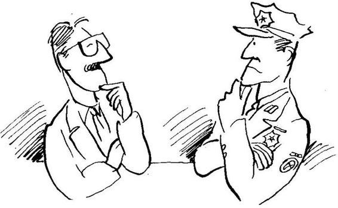
Genel Müdür: "Peki sizce ne yapmam gerekirdi?"
Yakup Bey: "Siz Genel Müdürsünüz. Bu konuda kapsamlı siyasal kararlar almanız beklenemez, Sizin yetki sınırlarınızın kısıtlılığının bilincindeyim. Bu nedenle lütfen söylediklerimi şahsınıza yöneltilmiş eleştiri olarak değil, bir öneri olarak kabul edin. Böylesine cana ve servete mal olan bir olayı önleyecek ulusal bir politika olmalıdır. Bu politikanın temellerinin bilimsel olabilmesi için bir dizi bilimsel araştırmaların yapılması gerekir. Örneğin, Türkiye Ulusal Trafik Araştırma Enstitüsü kurulabilir ve bu enstitüde psikolog, mühendis, sosyolog, kültürel antropolog, hukukçu ve trafik polisi gibi değişik dallardan bilim adamlarının katıldığı değişikekipler oluşturulur. Bu ekipler insanla, toplumla, karayollarıyla, iklimle, teknolojiyle ve daha nice alanlarla ilgili akla gelebilecek her türlü faktörün trafik kazalarıyla ilgisini yöre yöre araştırmaya başlar ve bulgularını yayınlar. Bu tür bilimselbilgininbirikimiyle, sizin gibi idareci durumunda olanlar, daha gerçekçi kararlar alabilirler. Şu anda Türkiye'nin kültürel ve sosyo-psikolojik yapısından ileri gelen faktörlerin trafik kazalarındaki rolleriyle ilgili hiçbir fikrimiz yok. Bizim kültüre özgü bu tür bilgileri Amerika ya da Almanya'da yapılan araştırmalardan elde edemeyiz. Hatta Türk kadını ve Türk erkeğinin sebep olduğu kazalar bile birbirinden farklı olabilir. Çağımız bilim çağı, niçin bilimsel girişimlerle çözüme gitmiyoruz?"
Genel Müdür: "Söylediğiniz konularda kararvermebenim yetkilerimi aşar. Önerileriniz, hükümet düzeyinde verilecek kararları kapsıyor."
Yakup Bey: "Evet, benim de söylemek istediğim buydu. Ve maalesef, siz de, ben de biliyoruz ki, hükümet üzerine bu konuda herhangi bir baskı ne aydından ne da halktan gelmekte. Ve yine siz de, ben de biliyoruz ki, bu konuda bilimsel girişim olmadıkça, herkes kafasına geleni söylerken «trafik canavarı» da «vadesi yeten vatandaşlarımızı mezarlığa göndermeye devam edecektir."
"Peki Yeni Ne Öğrendin?"
Bu konuşmayı deftere müsvedde olarak yazdıktan sonra ayrı iki sayfaya temize çektim ve perşembe günkü buluşmamızda Yakup Bey'e gösterdim. Yakup Bey yüzünde bir gülümseme ile kendisinin Emniyet Genel Müdürü ile yaptığı konuşmanın metnini,okudu. Bitirdikten sonra, "Evet, gerçekten böyle söylerdim; benim söyleyeceklerimi iyi tahmin etmişsiniz'' dedi.
Elindeki büyük zarftan bazı gazete kupürleri çıkardı. ilk gazete kupürü 14 Şubat 1993 tarihli Hürriyet gazetesindendi. Ege Cansen, «Oyunun Kuralı» köşesinde «Sür ki ölem» başlıklı yazısında şöyle diyordu:
SÜR Kİ ÖLEM
Çok değerli, çok sevimli bir siyaset ve devlet adımamız Dr. Adnan Kahveci, kendisi ve eşiyle birlikte üç kişinin ölümüne, kendi evladının ağır yaralanmasına yol açan bir trafik kazasına sebep oldu. Allah, taksiratını (eksik yaptığı kulluk görevlerini) affetsin.
Adnan Kahveci'nin cenazesine giden Bursa Milletvekili Mümin Gençoğlu da bir trafik kazasında hayatını kaybetti. On gün önce de Uğur Mumcu'nun cenazesine giden bir SHP heyeti, bir başka trafik kazasında ölü vermişti.
Kara mizah yapmak i stersek, yaralıları taşıyan cankurtaranın, yolda takla attığını, olayı tahkike giden trafik otosunun da virajı alamayarak uçuruma yuvarlandığını ilave etmemiz gerekecek. ‘
Bu trafik yazımın son sözü, «Kaza, geliyorum der»di. Bu sözün halk arasında kullanılan şekli, «Kaza, geliyorum demez»dir. Her iki deyişin de doğru tarafı var. Kaza geliyorum diyor, ama anlayacağımız dilde söylemediği için, bize demiyormuş gibi geliyor.
Genelde her tür kazayı, özellikle trafik kazalarını sıfıra indirmek mümkün değildir. Ancak bunların sayısını azaltmak kesinlikle imkan dahilindedir. Esasen tedbir almanın gerekçesi de budur. Dünyanın en tedbirli şoförünün de kaza yapma ihtimali vardır. En tedbirsiz şoförün de hiç kazayapmaması muhtemeldir. Ama bu her iki ihtimal de son derece küçüktür. Büyük bir ihtimalle, tedbirli insanlar daha az, tedbirsizler daha çok kaza yapacaktır.
Belki de ihtimallerin birbirine eşit olduğunu sandığımızdan, «tedbir işe yaramaz» şeklinde bilinçaltımızda bir kanaat vardır. Belki de tedbir almayı «kadere karşı gelmeye çalışmak» gibi batıl bir inanca göre, ilahi iradeye isyan zannediyoruz.
Eğer trafik kazalarını azaltmak istiyorsak (ki bundan pek emin değilim) «tedbirli ve terbiyeli» araç kullanmamız şarttır. Tedbirli ve terbiyeli araç kullanmak, şoförü tatmin etmeyen bir sürüş biçimidir. Halbuki araç sürenler için, bir yerden bir yere salimen gitmek ikinci derecede bir gayedir. Birinci gaye «tatmin» olmaktır. Araç sürerken tatmin olmak, hatta orgazma ulaşmak için, mümkün mertebe «tedbirsiz ve terbiyesiz» davranmak gerekir.
Tedbirsizliğin ve terbiyesizliğin dayanılmız bir cazibesi vardır.
Bol selektör, bol korna, bir sağ şeride, bir sol şeride slalom yaparak dalmak varken, inek gibi şerit içinde kalıp önündeki araçla emniyet mesafesi bırakmanın âlemi yoktur. Zaten çapkın şoförlerin nefsinin uyanmasına, en çok, bu ikiaraç arasındaki emniyet mesafesi sebep olur. Bir arabalık boşluğu gördün mü hemen araya dalacaksın ki, işin tadı çıksın. Kör sollama, viraja sert girip arabaya kıç attırtma, eğer büyük araç sürüyorsan, küçüklerin üstüne üstüne sürüp, onları şarampole itmek gibi «insani» zevkler varken, tedbirli ve terbiyeli olmanın ne anlamı var?
Ben önemli adamım. Benim işim aceledir. Ben, bekleyemem.
Ben, kurallar içinde kalamam. Bana, herkes yol vermelidir, herkes benim önümden buhar olup uçmalıdır. Ben, dünyanın en iyi şoförüyüm. Kimse, benim gibi gaza basamaz. Kimse beni sollayamaz deyip duruyoruz, Yoksa biz, gerçekte önemsiz kişiler miyiz? Hep sollanmaktan, hep horlanmaktan duyduğumuz hıncı, trafikte mi kusuyoruz?
Son Söz: Tevekkül, tedbire engel değildir.
Yazıyı bitirince Yakup Bey, "Nasıl buldun?" diye sordu. Yazıhoşuma gitmişti. Beğendiğimi belirttim. Gülümseyerek, "Yeni ne öğrendin?" diye sordu. Gazete kupürünü yeniden önüme aldım ve yazıyı gözden geçirdim. "Yenibirkaç şey öğrendim. Esasında kaza «geliyorum» dermiş, ama biz belirtileri anlayamadığımızdan tedbir almazmışız. İnsanlar tedbirli ve terbiyeli araba sürseler, trafikkazaları azalırmış. Kişilerin tedbirsiz ve terbiyesiz araba sürmesinin altında da bazı psikolojik nedenlerin yatma ihtimali kuvvetliymiş" dedim.
Yakup Bey, "Bu noktada iki soruyla başbaşa kalıyoruz" dedi. "Bunlardan ilki, tedbirli ve terbiyeli araba kullanmama faktörünün trafik kazalarının gerçekten yüzde kaçının altında yattığını öğrenmek, ikincisi de, tedbirsiz ve terbiyesiz araba kullanma davranışının altında yatan temel nedenleri keşfetmek."
Bir süre sustuktan sonra konuşmasına devam etti: "Bu yazıda Ege Bey her iki sorunun da cevabını biliyormuş. gibi davranmış. Bir köşe yazarı olarak bu normalkarşılanmalıdır. Hiç olmazsa bizleri düş ünmeyed avet ediyor ve belirli yönlere işaret ediyor. Şu an, Ege Canseven'in söylediklerinin bilimsel geçerliği olup olmadığını bilmiyoruz. Bunu bilebilmemiz için, hayali konuşmada sizin bana söylettiğiniz Türkiye Ulusal Trafik Araştırma Enstitüsü'nün kurulması ve araştırmalarına başlaması gerekiyor. Eğer Türkiye'de karar verme durumunda olan yetkili kişiler, bilimsel araştırmadan elde edilen bulgular yerine değişik kişilerin kanılarını kararlarının temeli olarak kullanırlarsa, büyük hata yapmış olurlar.Durum çözümeulaşmaz,yenibiçim altında devam eder. Zannederim, hayali konuşmada sizin Emniyet Genel Müdürü'ne benim aracılığımla söylemek istediğiniz de buydu, değil mi?" dedi.
Yakup Bey, getirmiş olduğu zarftan bir gazete kupürü daha çıkardı. 6 Şubat 1993 tarihli Hürriyet gazetesinde, «Günün Yazısı» köşesinde Oktay Ekşi, «Şimdi de Adnan Kahveci» başlığı altında şunları yazıyordu.
ŞİMDİ DE ADNAN KAHVECİ
Ingiliz Kraliçesi İkinci Elizabeth, geride kalan yılı «annus horribilis» yani «berbat yıl» diyerek tanımlamıştı. Ama onun gerekçeleri, kendi aile bireyleri ile ilgili yayınlar ve olaylardı. Oysa böyle giderse 1993'ü de biz «annus horribilis» diye anmaya mecbur kalacağız. Çünkü her ay bir büyük değerimizi kaybederek başladık 1993'e... Önce Uğur Mumcuyu menfur bir suikasta kurban verdik, dün de Adnan Kahveci'yi kaybettik.
Bu böyle gider mi? Gidebilir mi?
Daha açık konuşalım ... Türkiye'nin, Uğur gibi, Kahveci gibi değerleri böyle bozuk para harcar gibi harcayacak gücü var mı?
Yazık... Çok yazık oldu.
«Trafik» denen, insan etinden başka hiçbir şey yemeyen canavar, onu ve eşiili elimizden aldı.
Uğur için terör örgütlerini sorumlu tutabiliriz. Peki ya Kahvecii çin?
Gerçeği korkmadan söylemek gerekirse Kahveci'nin ölümünün sorumluluğu, ülkemizdeki «trafik» sorununu yıllardan beri «çözme kararlılığı» ile almayan politikacıların ve yetkilerini kullanmayan üst düzey bürokratlarındır.
Söze devam etmeden bir inancımızı belirtelim: Bir sorunu çözmeye karar veren devletin onu çözmemesi mümkün değildir. Bir başka deyişle, ortada çözülmemiş bir sorun varsa biliniz ki, öyle bir sorunun olması, iktidar sahiplerinin işine gelmektedir. Örneğin, Türkiye'de eğer toplumu sarmış bir «uyuşturucu» sorunu yoksa veya «uyuşturucu kaçakçılığı» bir ulusal sorun niteliğik azanacak kadar büyümüyorsa, asılsebep siyasi iktidarın o konuya ciddiyetle eğilmiş olmasıdır. Ama «vergi kaçakçılığı» başedilemez bir sorun olarak ortada duruyorsaki Türkiye’de özellikle 1950’den bu yana öyledirbiliniz ki, «vergi kaçırılmasına» siyasi iktidar göz yumuyordur. Çünkü desteğini, vergi kaçıran kesimlerden aldığı inancındadır.
Aynı şeyleri «gerici hareketlerin gelişmesi», «para değerlerinin düşmesi», «enflasyonla ve yolsuzlukla başedi/memesi» dahil hemen her konu için söyleyebilirsiniz.
İşte bu düşüncelerle diyoruz ki, Kahveci gibi değerler dahil, 1990’dan önceki on yıl ortalamasına göre yılda 6 bin 212 kişinin trafik kazalarında ölmesinin sorumluluğu, doğrudan doğruya «yönetici» sıfatını taşıyanlardadır.
Gerçekten bu konuyu hiçbir iktidarın ciddiye aldığının örneği yoktur. Hiçbiri «Çözüm nedir?» sorusuna yanıt aramış değildir.
Yapılan, ya iki gün sonra unutulacak raporlar hazırlatıp bir şeyler yapıyormuş gibi görünmek, yahut da her konuda her zaman en iyiyi ve en doğruyu bildiğinden emin olan Sayın Cumhurbaşkanı gibi o sırada aklına gelen parlak fikir ne ise onu söyleyip, «çare budur» la olayı geçiştirmektedir. Nitekim Sayın Özal’ın bu konudaki görüşü, 15Kasım 1988 tarihli gazetelerde vardır. Buna göre «trafik kazalarının önlenmesi için trafiği yoğun olan yollardaki yükün azaltılması ve kesin çözüm olarak da otoyolları ve ekspres yolların artırılması» şarttır.
Öteki öneriler? Örneğin, «yolgüvenlik ve haberleşme sistemlerinin kurulması, trafikle ilgili tüm yetki ve sorumlulukların tek elde toplanması, iki ayaklı hayvanlara sürücü belgesi verilmesinin önlenmesi, halkın ve çocukların eğitilmesi, işaretlerin tamamlanması, kuralların herkese eşit ve ödünsüz şekilde uygulanması» bu kafa için hiç de önemli değildir.
Ne yazık ki, Adnan Kahveci’yi tam da Özal’ın dediği türden bir yolda kaybettik.
"Peki bu yazıdan ne öğrendin?" diye gülümseyerek sordu Yakup Bey. İlk aklıma geleni söyleyerek, "Kahveci'nin ölümüne çok üzülmüş ve trafik konusunda bir şeyler yapılmayışına da bozuluyor" dedim.
Yakup Bey hafif bir kahkaha attı. "Evet, bozuluyor" dedi. Sonra beni yine sorgulamaya başladı: "Sizce siyasi kadroya, devlete kızmasında haklı mı?"
Gayet tabiihakveriyordum.Eğerdevletisteseydişimdiyebusorunu çözerdi. Düşündüğümü söyleyince Yakup Bey, "Peki devlet trafik sorununun çözümünü niçin istemiyor acaba? OktayEkşi'ninmantığına göre, devlet vergi sorununu çözemiyor, çünkü vergi kaçıranların kendilerini iktidara getirdiği kanısında. Sizce devletin trafik sorununu çözmemesii çinne gibi bir neden var? Siyasi iktidar trafik sorununu çözerse seçilemeyeceğinden mi korkuyor?"
Güzel bir soruydu, bunu hiç düşünmemiştim. Yakup Bey'e cevap veremedim. O sormaya devam etti:
"Farzedelim ki yöneticiler anlayamadığımız bir nedenden dolayı konuya ilgi duymuyor olsunlar, ya da maksatlı olarakçözümgetirmek istemesinler. Peki, iktidarı seçen halk trafik sorunlarının çözülmesini onlardan niçin istemesin? «Eğer trafiksorununa çözüm getirecekbir projeyle karşıma çıkmazsan, sana seçimde oy vermem» diye bir tavrı niçin takınmasın?"
O sırada gazetelerde okuduğum Aziz Nesin'in söyledikleri aklıma geldi ve Yakup Bey'e "Çünkü bizim millet enayi de ondan" dedim.
Yakup Bey kahkahalarla gülmeye başladı. Bir süre güldükten sonra, "Oktay Ekşi tüm sorundan devletin kötü niyetini sorumlu tuttu; şimdi sizde de halkın enayiliğini sorumlu tutuyorsunuz" diyerek gülmeye devam etti.
Kendisine Aziz Nesin'in gazetelere geçen sözlerini aktardım. "Evet, evet biliyorum; ben de okudum" diyerek gülmesine devam etti. "O konuyla da ilgili bazı gazete kupürlerim var, getireceğim; o konuyu da tartışacağız" dedi.
Bayağı merak etmeye başlamıştım. "Peki, Yakup Bey sizce trafik sorununun çözülmeyişinin temelinde yatan neden ne?" diye sordum.
"Türkiye'de sigara içiminin artışını durduramayan aynı neden" diye cevap verdi. Anlayamamıştım. Afallamış kalmıştım. Trafik kazaları ile sigara içme arasında ne ilişki vardı?
Sigara Afeti
"Sigara içmekle trafik kazaları arasında ne gibi bir ilişki olabilir?" diye anlamaya çalışan bir merakla sordum.
Gülümseyerek, "Demek istediğim, trafik afetinin altında yatan neden, sigara afetinin de altında yatıyor. Biri diğerinin nedeni değil; ikisinin kaynağı da aynı" dedi.
Sigara afetinden neyi kastettiğini sordum. Bana «Sigara Alarmı» adındaki dergiyi verdi. Başlığın altında dergi «Türkiye Halk Sağlığı Derneği Sigarayla Mücadele Kolu Yayını» olarak tanıtılıyordu. Aralık 1992tarihli dergide «Başyazı» başlığıaltında «AÇIK DİLEKÇE: Türkiye Büyük Millet Meclisi Başkanlığına» diye başlayan bir makale vardı. Makalenin yazarı Fırat Üniversitesi Tıp Fakültesi Halk Sağlığı Anabilim Dalı Başkanı Prof. Dr. Erol Sezer'di.
Yakup Bey makalenin bazı satırlarının altını çizmişti; altı çizili satırları okumaya başladım:
İYİ DÜŞÜN DOĞRU KARAR VER AÇIK DİLEKÇE Türkiye Büyük Millet Meclisi Başkanlığına
Sigara kullanımı, Türkiye’de erişkin nüfusun en çok ölüme yol açan hastalıklarının önlenebilir en önemli nedenidir. Bilimsel yöntemle yapılan hesaplamalar, Türkiye'deki 35 yaş üstü erişkin ölümlerinin yaklaş ık onda birinin sigaradan kaynaklandığını göstermektedir. Yine 35 yaş üstü nüfusta sigara kullanımının neden olduğu yıllık ölüm sayısı, trafik kazaları nedeniyle aynı yaş grubunda ortaya çıkan ölümlerin yaklaş ık on katıdır. Eğer Türkiye’de sigara tüketiminde belirgin bir azalma sağlanamazsa ve nüfus yapımızın da giderek yaşlanacağı düşünülürse zaten yüksek olan sigaraya bağlı ölüm sayısında hızlı artış beklenmelidir.
Son yıllarda yapılan epidemiyolojik araştırmalar, ülkemizde erkek erişkinler arasında yerleşmiş bulunan sigara salgınının çocuklar ve kadınlar arasında da yayılımını sürdürdüğünü göstermektedir. Giderek daha çok yurttaşımızın zamansız ölümüne yol açan sigara salgınının sürmesinde aşağıdaki etmenler önemli rol oynamaktadır:aÜlkemizde yasal iklimin sigarayı hala doğal bir nesne olarak kabul etmesi: Bilindiği gibi ülkemizde uzun otobüs yolculuklarında annesinin kucağında yolculuk eden bir bebeğin, yol boyunca otobüsteki dumanı soluması hem kültürel olarak ve hem de maalesefyasal yönden doğaldır. Oysa bir bebek 20 saatlik böyle bir yolculukta bir paket sigara içmiş gibi sayılabilir ve sadece bu nedenle hastalanabilir ve daha da kötüsü ani ölümle karşılaşabilir. Ülkemizde bazı banka şubelerinde olduğu gibi kesif duman bulutu içinde çalışan ve hiç sigara içmeyen anne adayları, hiç haketmedikleri bir şekilde istemsiz (pasif) içiciliğin sonucu olarak bebeklerini düşürebilirler veya hastalık ve ölüm riski yüksek, düşük doğum ağırlıklı bebekler doğurabilirler. Yine bu kişiler 45-50 yaşlarına geldiklerinde hiç sigara içmedikleri halde iş ortamında soludukları sigara dumanı nedeniyle akciğer kanserinden ölebilirler. Tüm bunlar ülkemizin hem çalışma gelenekleri ve kültürü hem de mevzuatı açısından hâlâ doğaldır ve olağandır.bSigara üretiminin ve ticaretinin serbestleştirilmesi ve özendirilmesi:.... Bilimsel çalışma verilerine göre reklamlar sigarasağlık konusundaki bilginin inandırıcılığını zedelemekte, cazip ve ilginç eşleştirmelerle sağlanan özendirme ve şartlandırma yoluyla çocukların, gençlerin ve kadınların sigarayı denemelerinde ve sigaraya başlamalarında etkili olmaktadır. ...cSigaranın bağımlılık yapıcı özelliği: Sigara, alkol ve eroin gibi tekrarlayan denemeleri takiben insan davranışlarını kontrol altına alabilen ve bağımlılık yapıcı bir madde olarak tanımlanmışd urumdadır. Çocuklarımız ve gençlerimiz, bağımlılık yapıcı ve çok zararlı böyle bir nesne konusunda, özendirici etkilere nasıl direneceklerini öğrenmeden büyümekte ve bunun sonucu yaygın bir şekilde bağımlılar arasına katılmaya devam etmektediler....
Sigara özellikle kalp hastalıklarına, kansere, inmeye vefelçlere yol açarak ülkemizde çok can alırken, sigarayı doğal bir nesne olarak algılatan ve hatta sigara tüketimini dolaylı olarak teşvik eden günümüz mevzuatı
Yakup Beybenimbitirmemi beklerken ıhlamurunu yudumluyordu. Altı çizili satırlarıokumayı bitirince bana "Yeni bir şeyler öğrendin mi?" diye sordu. Gerçekten öğrenmiştim. Sigaranın böylesine tehlikeli olduğunu ve böylesine çeşitli sağlık sorunlarının altında yattığını bilmiyordum. Kendisine, "insanlar sigaranın ne kadar tehlikeli olduğunu bilseler, herhalde içmeyi bırakırlar" dedim.
Gülümseyerek, "Gerçektendezararınıbilebileinsanınsigaraiçmeye devam edeceğini düşünmek zor. Ne var ki, gözlemlerim beni bu konuda farklı düşünmeyezorluyor. Sana iki gözlemimden söz edeyim" diyerek bana doğru döndü ve önemli bir şey söyleyen birinin ifadesiyle konuşmaya devam etti: •
"Gayet zeki, yetenekli kalp hastalıkları uzmanı tanıdığım bir hekim var; günde bir paket sigara içer. Bir keresinde bana, «Elimde sigara tüterken hastaya, 'Artık sana sigara içmek yasak; şimdiden sonra sigara içmeyeceksin' dediğimi hatırlıyorum» diye içinde bulunduğu çelişkili durumu gülerek anlatmıştı."
"Tanıdığım başka bir hekimin kocası akciğer kanseri oldu; daha sonra kanser beyine sıçradı ve adam beyin kanserinden öldü. Kocasının orken yaşta sigaraya başlamasından kaynaklanan akciğer kanserinin ölüm nedeni olduğunu bildiği halde hekim hanım hâlâ günde bir paket sigara içmeye devam ediyor. İşin en acı tarafı evde iki tane çocuk var ve bu iki yavru geceleri hekim annelerinin sigara dumanıyla dolu evde uyuyorlar. Ve bu kötülüğü çocuklarına cahil biri değil, hekim yapıyor."
Bu olayı anlatırken Yakup Bey'in yüzünü bir hüzün kaplamıştı. O çocukları düşünürken üzüldüğü belli oluyordu.
"Yakup Bey, sigara içmenin zararlı olduğunu anlamış durumdayım. Trafik afeti gibi sigara afeti olduğunu da şimdi öğrenmiş durumdayım. Ama hâlâ bu afetleri toplum olarak, devlet olarak önleyememenin altında yatan nedenleri söylemediniz" dedim.
Yakup Bey şakacı bir tavırla önüme bir gazete kupürü daha koydu. 15 Şubat 1992 tarihli Hürriyet gazetesinden ufak bir haber:
Bir Milyonun Dişi Sağlam
İstanbul, (Hürriyet) Marmara Üniversitesi Diş Hekimliği Fakültesi Dekanı Prof. Dr. ilhan Çuhadaroğlu, "Türkiye'de sadece bir milyon kişi sağlam dişe sahip;" dedi.
Türkiye’nin 30 bin diş doktoruna ihtiyacı olduğunu, 13 bin diş doktorunun yarıdan fazlasının İstanbul, Ankara ve İzmir'de görev yaptığını, Doğu Anadolu’da bir diş doktoruna 20 bin hasta düştüğünü söyleyen Prof. Dr. Ilhan Çuhadaroğlu, Sağlık Bakanlığı’nın ”Diş Kampanyası” başlatmasını istedi. Çuhadaroğlu, "Sahte diş hekimleri, bu alandaki sorunlardan biridir. Diş hastalıkları, daha büyük sağlık sorunlarına yol açabilir. Bakanlık, bu konuda önlem almalıdır” dedi.
Yakup Bey yüzüme sakin sakin bakıyordu.
"Size trafik kazalarının çözülmeyişinin altında yatan nedeni sordum, beni sigara afeti ile tanıştırdınız. Trafikve sigara afetlerinin temellerinin aynı olduğunu söylediniz. Ama bana bu temelin ne olduğunu hâlâ söylemediniz.Tekrarsorunca, şimdideelime «Diş Afeti» diyeceğim bir olayı bildiren gazete haberini veriyorsunuz. Yakup Bey, şu anda şaşırmış durumdayım" dedim.
Yakup Bey gülümsemesine devam ederek önüme bir gazete kupürü daha sürdü. 10-16 Ocak 1993 tarihli NOKTA dergisinin 44. sayfasında «Türkiye'de nüfus planlaması doğum sırasında uygulanıyor! DOĞUMHANELER MEZBAHA GİBİ» başlıklı bir yazı. Başlığın altında iri puntolu harflerle şunlar yazılı:
DOĞUMHANELER MEZBAHA GİBİ
Doktor hataları, mikroplu doğumhaneler, acı dolu anılar... Türkiye’de hergün 5000 bebek doğuyor bunlardan 400'ü ölüyor, doğan her yüz bebekten ikisi sakat kalıyor. İstanbul Tabipler Odası’nda doğumdaki doktor hataları nedeniyle açılmış 1000 dava dosyası yatıyor... Her 10 ölü doğumdan 4'ünün doktor hatasından kaynaklandığı belirtiliyor. Kadınların doğumhanelerde çektikleri çile ise tek kelimeyle korkunç. Anlatılanlara göre, küfür ve hakaretlerle bebeklerini dünyaya getiren anne adayları pislik ve bakımsızlık içinde kendi kaderine terkediliyor.
Bu kısmı okuduktan sonra Yakup Bey gülümseyerek, "Daha başka gazete kupürü ister misin?" diye sordu. "Eğitimin, genel anlamda sağlık hizmetlerinin, beslenmenin ve bunun gibi daha nice konulardaki hizmetlerin yetersizliği ile ilgili gazete kupürüm var; ister misin?" diye sözüne devam etti. •
Şaşırıp kalmıştım. Benim öğrenmek istediğim trafik kazalarının altında yatan temel nedenleri öğrenmekti. Bu soruyu ne zaman sorsam Yakup Bey beni başka alanlara götürüyordu. Kafamın iyice karışmaya başladığını söyledim.
"Millet olarakkafamızkarışık; siz debumilletinbirüyesisiniz, sizin de kafanızın karışık olması doğal" diyerek esprili bir cevap verdi. Daha sonra sustu ve önemli bir şey söyleyecek insanın ciddiyetiyle "paradigma(2)" dedi.
Anlayamamıştım. "Efendim? Paradigma mı? Ne demek paradigma?" diye sordum.
"Şimdiye kadar konuştuğumuz konuların temelinde yatan ana neden, paradigmadır" diye sorumu cevapladı.
Hiçbir şey anlamadığımı söyledim.
"Şu anda ben de sizin anlamanızı beklemiyorum" dedi ve "Timur Bey, paradigmanın ne olduğunu birkaç kez buluştuktan sonra tartışmaya hazır hale geleceğiz, o zaman ayrıntılarıyla anlatırım" diyerek beklemem gerektiğini belirtti.
"Şimdi anlatamaz mısınız, gerçekten merak ediyorum" diye ısrar ettim.
Memnuniyetini ifade eden bir gülümseme ile, "Hayır" dedi. "Paradigma kavramıçok önemli;bu kavramın incelenmesiniaceleyegetirmek istemiyorum."
Kararlı bir tavrı vardı. Israr edemedim.
Ayrılma zamanı gelmişti. Cumartesi günü buluşmak üzere kendisine veda ettim. Yurda gelmeden önce bir şeyler yedim ve geldikten sonra aldığım notlar üzerinde çalışmaya başladım.
(2) "Paradigma" kavramını kullanırken pek rahat değilim. Bu rahatsızlığımın birkaç nedeni var: Herş eyden önce kavram Türk diline yerleşmiş, okuyucunun rahatlıkla ıanıyacağı bir kavram değil. Rahatsızlığımın ikinci nedeni, bilim felsefesi ile uğraş anların pek iyi bildiği gibi, "paradigma" filozofların üzerinde görüş birliğine vardıkları bir kavram yerine değişik yorumlarında anlaşamadıkları bir kavramı simgeliyor (daha ayrıntılı bir tartışma için bkz. A.M.C. Şengör Cumhuriyet Bilim Teknik, 6 Mart, 1993). Bu nedenlerden dolayı, "paradigma" karşılığı "algı düzeneği" ifadesini kullanmak istedim. "Algı düzeneği" aslında "paradigma" kavramını oldukça iyi karşılamakla beraber, cümle içinde kullanırken üslup yönünden zorluklar çıkarmakta ve okuyucunun kolaylıkla izleyeceği cümle kuruluş unu hemen hemen imkansız kılmaktadır. Bu nedenle metinde "paradigma" kelimesini kullanmayı yeğledim.
Birgün babama, işleri diğer insanlar gibi yapamadığım için üzüldüğümü söyledim.
Babamın nasihatı: "Margo, koyun olma. insanlar koyunları sevmezler. insanlar koyunları yerler."
MARGO KAUFMAN
KALIPLANMIŞ VE GELİŞTİRİLMİŞ İNSANLAR
Cumartesi gününü ipleçektim. Yaşamımda yenibirheyecankaynağı oluşmuştu. Saat 13'te dükkana gittim, Yakup Bey oradaydı. Merhabalaştıktan sonra yine çayevine geldik. Bu gelişimde not defterimi getirmiştim. "Bu ne" diye sordu. Konuştuklarımızı not aldığımı, bazı nokta-' lan unutmamak için özet halinde notlar alıp, daha sonra odamda daha geniş yazmak istediğimi belirttim. "Güzel fikir" dedi.
İkimiz debirerıhlamurısmarladık. "Geçenbuluşmalarımızdabirçok konuya değindik: kalıplayın ve geliştirici ortamlardan kısaca bahsettik; trafik afetinden, sigara afetinden sözettik. Bu sorunların çözümlenemeyiş inin altında yatan ana nedenin «paradigma» olduğunu söyledik" diye Yakup Bey konuşmasına girdi.
Bugün önce «kalıplanmış» ve «geliştirilmiş» kişileri tanımlayarak sohbetimize başlamak istiyorum. Kalıplayın ortamda yetişen kişiye «kalıplanmış,» geliştirici ortamdan yetişen kişiye «geliştirilmiş» diyelim."
"«Kalıplanmış» ve «geliştirilmiş» kişiler tesadüfen bu özellikleri almamışlardır. Biraz önce söylediğim gibi, «kalıplanmış» insan kalıplayın, «geliştirilmiş» ise geliştirici yetişme ortamının ürünüdür. Yetişme ortamı sözü ile öncelikle aileyi anlarız. Fakat çocuğun yetişme ortamı içine ailenin yanı sıra komşular, akrabalar, okul ve eğitim sistemi ve daha da genel anlamda toplum ve kültür de girer."
Ihlamurlar gelmişti, ıhlamurundan bir yudum aldıktan sonra bugün yanına almış olduğu çantasından kağıt ve kaİem çıkardı.
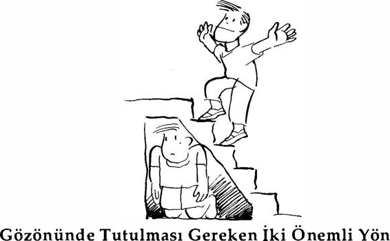
"Kalıplayıcılık ve geliştiricilik değişik derecelerdedir; siyah beyaz gibi iki kategori olarak değil,bir ölçeküzerinde düşünülmelidir" diyerek kağıt boyunca düz bir çizgi çizdi. "Bu ölçeğin bir ucunda «kalıplayıcı,» diğer ucunda «geliştirici» kelimeleri yer alır ve iki zıt kutbun arasında değişik sayıda basamaklar düşünülebilir. Anlatımda kolay olsun diye 7 basamaklı bir ölçek kullanarak örneklendirelim" diyerek çizginin bir ucuna «kalıplayıcı,» diğer ucuna «geliştirici» kelimelerini yazdı ve iki kelime arasında kalan mesafeyi aşağıdaki gibi 7 eşit adıma böldü.
Kalıplayıcı: : : : : : : : Geliştiriciç ok oldukça az ilgisiz az oldukça çok
"Çocuğun içinde yetiştiği ortam «çok» ya da «oldukça» kalıplayıcı olabildiği gibi «az» kalıplayıcı da olabilir. Aynı dereceler geliştirici ortam için de söz konusudur" diye çizdiği ölçeği açıkladı.
"Bu tür ayrıntılara girmeden, anlatımda kolaylığı sağlaması ve belirtmek istediğimiztemel fikri daha iyi ortaya koyması için «kalıplayıcı» ve «geliştirici» ortamlardan ve «kalıplanmış» ve «geliştirilmiş» kişilerden söz edeceğim” dedi.
Yakup Bey'in kullanmış olduğu «kalıplanmış» ve «geliştirilmiş» kavramlarından rahatsız olmuştum. Aramızda şöyle bir konuşma geçti:
Timur: "«Kalıplanmış» ve «geliştirilmiş» kelimelerini değer yargısı yüklü buluyorum. Bazı kimselerin kullandığı «gerici» «ilerici» kelimeleri gibi kişileri baştan yargılıyor."
Yakup Bey: "İlk başta gerçekten böyle bir izlenim veriyor. Ama amacım yargılamak değil, kişileri betimlemek. «Kalıplanmış» kişi, kalıplayıcı aile ortamı içinde mevcut kalıplara uyduruluyor; ailenin terbiye anl ayışı bu. Geliştirici aile ortamı içinde ise çocuğun yetenekleri keşfedilerek onun tüm potansiyeli geliştirilmeye çalışılıyor; bu ailenin çocuk yetiştirme anlayışı da böyle; o nedenle ona «geliştirilmiş» insan niteliğini uygun görüyorum. Peki, «kalıplanmış» ve «geliştirilmiş» yerine sizin kullanabileceğiniz daha betimsel bir kavram var mı?"
Timur: "Şimdi aklıma gelmiyor; eğer daha betimsel bir kelime bulursam size söylerim. Ama açıklamanızdan sonra amacınızın yargılama olmadığını anladım. Ne var ki, «geliştirilmiş» sözünden ben hâlâ rahatsızım «Kalıplanmış» insan deyimi beni şimdi rahatsız etmiyor, çünkü çevresinin etkisi altında pasif, edilgen insan anlatımına uyuyor. Ama, «geliştirilmiş» insan yerine «gelişmiş» insan demeyi yeğlerdim, çünkü «geliştirilmiş» kelimesi depasif, edilgen bir insan tipi caniadırıyor; oysa anlatılmak istenen tip hiç de pasif biri olarak görülmüyor. Bu kişiye «gelişmiş» insan dersek daha aktif, içten güdümlü biri canlanacak kafamda" dedim.
Yakup Bey beni dikkatle dinledi. Ihlamurundan yudumlamaya devam etti. Bir ara gözlerini yumdu; düşünüyordu.
Bana baktığında gözlerinin içi gülüyordu. "Evet, haklısınız. İşaret ettiğiniz esasında son derece önemli bir nokta. Eleştiriniz yerinde ve kabul ediyorum. Şimdiden sonra, «kalıplanmış» ve «gelişmiş®» olarak bu tiplerden söz edeceğim" dedi.
Çok sevinmiştim; konuşmaya bir katkım olabilmişti ve düşüncemin sağlam bir zemine oturmakta olduğunu kendime ve ona kanıtlamıştım. Heyecandan ellerim titriyordu, masanın üzerindeki kalemi iki elimin içine aldım ve dizlerimin üzerindeevirip çevirmeye başladım. Bu kadar heyecanlandığımı göstermekten utanıyordum.
Yakup Bey konuşmasına devam ederek, "Geliştiriciliğin ve kalıplayıcılığın derecelerinden söz açılmışken, bunların içinde geliştiği kültürlerden dekısaca söz etmekistiyorum"dedi. "Konuşmamızda Tür3
(3) «Gelişmiş kelimesi yerine «gelişen» ya da «gelişmekte olan» ifadeleri önerildi. "«Gelişmiş» insan kavramı bir tür olmuş, bitmiş, t anlamlanmış bir durumu ifade ediyor; halbuki sizin tanımladığınız insan sürekli gelişmekte" denildi. Bu gözleme katılıyorum. Ne var ki, «gelişen» ya da «gelişmekte olan» ifadelerini kullanınca, kiş inin geliş ıniş olan yönünden daha fazla, geliş meye ihtiyacı olan yönüne dikkati çekiyoruz. Bazı ülkelerden «gelişmekte olan ülkeler» olarak bahsediliş inin altında bu anlayış yatar. «Gelişmiş ülkeler» gelişmelerini tamamlamış ve artık gelişmeyen toplumları akla getirmez; aksine sürekli bir dinamizm içinde olan toplumları düş ündürür. Bu nedenle, «gelişmiş» kavramını kullanmayı yeğledim. Hülya Yetişken ve Ahmet Dervişoğlu'na bu konudaki tartışmaları için teşekkür ederim.k iye'deki. olaylara, kültürümüz içinde yaptığımız gözlemlere değineceğiz. Bu demek değildir ki, kalıplaşmışlık ve gelişmişlik konusu sadece bizim topluma özgüdür ve diğer toplumların böyle bir sorunu yoktur. Türk toplumu ve kültüründen söz etmemiz, Türkiye'deyaşıyor olmamızdan ve Türk insanının davranışlarını anlamak istememizden kaynaklanmaktadır. Diğer ülkelerde yazarlar, düşünürler geliştirici ortam yönünde değişikliğe yol açmak için çabalıyorlar; insanların kalıplaşması ve gelişmesi üzerine ana-babaları, eğiticileri ve topluma yön veren idarecileri bilinçlendirmeye uğraşıyorlar. Onların kendi toplumlarını bilinçlendirme için yapmakta oldukları çabayı, bizim de toplumumuz için yapmamız gerek. Bu nedenle, sanki Türk kültürünü sorunlarla dolu, diğer toplumların hiç sorunu yokmuş gibi düşünmek yanlış olur.”
Yakup Bey'in Türk toplumunu ve kültürünü yargılamadan kendine özgü sorunları olabileceğini kabul etmesi hoşuma gitmişti. Bu tür bir düşünüş beni sanki daha az savunucu yaptı. Onunla hemfikir olduğumu baş hareketimle belirttim.
Kalıplayıcı ve Geliştirici Yetişme Ortamlarının Özellikleri )
Yakup Bey masanın üstüne bir başka boş sayfa koydu; elinde kalemi kağıt üzerinde bir şeyler çizmeye ya da yazmaya hazırlanıyor duygusuna kapıldım. Ama bir şeyler yazmadan konuşmasına devam etti:
"Kalıplayıcı ve geliştirici ortamlar birçok yönden farklıdır. Bu farklılıkları belirgin olarak temel aile gereksinmelerinin karş ılanmasında, beş temel özgürlüğün gerçekleştirilmesinde ve aile içindeki kuralların özelliklerinde görürüz" diyerek kağıt üzerine üç sütun çizdi; her bir sütunun başlığını yazdı. Daha sonra ilk sütuna sırasıyla aile gereksinmelerinin ilk kelimelerini yazarak diğer iki sütunu kesecek biçimde altlarını çizdi. Ortaya Tablo l'in görünümü çıktı.
Yedi temel aile gereksinmesi. Yakup Bey çizdiklerine işaret ederek konuşmasına devam etti: "Her şeyden önce kalıplayıcı ve geliştirici aile ortamları 7 temel aile gereksinmesini karşılamada birbirlerinden farklıdırlar. Bu farklılıkları çizdiğim şu tabloda görebiliriz" dedi. 4
(4) İçimizdeki Çocuk adlı kitapta çocuğun içinde yetiştiği ortamın özellikleri uzun uzadıya tartış ıldığından burada ayrıntılara girmeden karşılaş tıımalı bir gözden geçirme yapılmaktadır.
İYİ DÜŞÜN DOĞRU KARAR VER Tablo 1
Kalıplayıcı ve geliştirici aile ortamlarının temel aile gereksinmeleri yönünden karşılaştırılması
" Temel aile gereksinmeleri |
Kahplayıcı Aile Ortamı |
Geliştirici Aile Ortamı |
1. Değerli olma duygusu |
Önceden saptanmış, belirlenmiş koşullara, eklentilere uyduğu sürece çocuğa değerverilir. Çocuk, «Benim kendim olarak icbir değerim yok; ancak koşul Iara uyar, onların beklentilerine göre davranırsam bana değer verilir» inananı geliştirir. |
Çocuk var olduğu için kendisi olarak değerlidir. Çocuk, «Ben kendim olduğum için, başka hiçbir koşul aranmadan en olarak değerliyim» inancını geliştirir. |
2. Güven ortamı |
Koşullu güven ortamı vardır. Çocuk, «Ben otoritenin (anababanın) beklentilerini yerine getirdiğim sürece beni beslerler, orurlar ve desteklerler; onların benden beklentilerini hiç aksatmadan yerine getirmem gerekir,» inananı geliştirır. |
Koşulsuz güven ortamı vardır. Çocuk, «Ana-babam beni sevdiğinden her zamanbenibesler, korur ve destekler,» inananı geliştirir. |
3. Yakınlık ve dayanışma duygusu |
. Yakınlık ve dayanışma duygusu koşullara bağlı dır. Çocuk,«Benden istenilenin dışına çıkarsam kimse bana yakınlık göstermez ve desteklemez,» inancını geliştirir. |
Yakınlık ve dayanışma duygusu koşulsuzdur. Çocuk, «Ailem her zaman bana yakındır; ailemdeki temel tutum anlamaya ve dayanışmaya yöneliktir,» 'inancını geliştirir. |
4. Sorumluluk duygusu |
Çocuğun davranışını dış koşullar, beklentiler biçimlediği için olan bitenden dış koşullar ve başkaları sorumlu tutulur; kendi yaşamına vön verecek irade gücü ve sorumluluk duygusu çocukta geliştirilmez. Çocuk, « Beni etkileyen, yaşamını yönlendiren olaylar benim denetimim dışındadır,» inancını geliştirir. |
Erken yaştan çocuğun kendi davranışlarına karar vermesine olanak sağlanır; çocuğun kendi yaş amana yön verecek irade gücü ve sorumluluk duygusu gelitirilmesine önem verilir.o cuk, «Beni etkileyen, yaşamını yönlendiren olaylar benim denetimim altında dır,» inancını geliştirir. |
5. Zorluklarla mücadele ederek onların üstesinden gelmeyi oğrenme |
Çocuğa zorluklarla mücadele ederek onların üstesinden gelmeyi öğrenme olanağı verilmez. Çocuk, «Karşıma çıkan zorluklarla kendi racümle başa çıkamam, mutlaka aşkasının yardımına gereksinmem vardır,» inancını geliş tirir |
Çocuğun zorluklarla mücadele edere! onların üstesinden gelmeyi öğrenmesine özen gösterilir, onem verilir. (ocuk, «Karşıma çıkan zorluklarlaönce kendi gücümü kullanarak uğraş malıyım, Eğer üstesinden gelemezsem o zaman başkasın_ an yardım isterim,» inancını geliştirir. |
6. Mutluluk ve kendini gerçekleştirme ortamı |
Mutluluk ortamı içinde çocuğun potansiyellerini, yeteneklerini geliştirebilmesi önemli değildir; onemli olan çocuğun beklentiler yönünde hareket etmeyi öğrenmesidir. * |
Ailenin çocuğun en mutlu olabileceği, bütun potansiyellerini gösterip, yeteneklerini geliştirebileceği' bir ortam olmasına özen gösterilir, önem verilir. |
7. Manevi yaşamın temellerini oluşturma |
Yaşamın, evrenin ve tüm varlığın ne anlama geldiği ya liç önemsenmez, ya da tümüyle katı kurallar içinde'anlatılır ve aynen o biçimde, hiçbir değişiklik yapılmadan kuralların kabul edilmesi ve uygulanması beklenir. |
.Yaşamın, evrenin ve tüm varlığın ne anlama geldiğini çocuğun kendi dünyası içinde eşfetmesine, anlamasına ve yaşamında gözlemleyerek uygulamasına yardımcı olmaya ozen gösterilir. |
Bu tablo beni etkiledi. İster istemez yetiştiğim ortamı düşündüm. Nesrin'leolan ilişkimdeki ezikliğin nedenlerini şimdiöğreniyorum duygusuna kapıldım. Yakup Bey'leberaber olmaktan mutlulukduyduğumu hissettim; gerçekten önemli konular konuşuyordukve etkin bir öğrenme süreci içindeydim.
Yakup Bey, bir süre susarak benim tabloyu gözden geçirmeme izin verdi. Defterimi çıkardım ve tabloyu çizmeye başladım. "Bu kağıdın üzerine notlar alabilirsiniz" dedi. Tabloyu önüme çektim ve daha sonra konunun ayrıntılarını hatırlamama olanak verecek bazı notlar aldım.
Tablo 2
Kahplayıcı ve geliştirici yetişme ortamlarının beş temel özgürlüğün gerçekleştirilmeleri yönünden karşılaştırılması
B.eş Temel Özgürlük |
Kalıplayıcı Aile Ortamı |
Geliştirici Aile Ortamı 1 |
1. Simdi ve urada olanı duyma ve görme algılama) özgürlüğü |
Şimdi ve burada olanı duyma ve görme (algılama) özgürlüğü voktur; çocuğun olanı değil, kalıpîarın,bekıentilerin gerektirdiği, vani olması gerekeni duyması 've algılaması beklenir. |
Şimdi ve burada olanı duvma ve görme (algılama) özgürlüğü vardır. |
2.. Düşündüğünü olduğu gibi ifa e edebilme özgürlüğü |
Çocuğun kendi düşündüğünü olduğu gibi ifade edebilme özgürmğü yoktur; cocufiun, düsünduğünü değil, kalıpların, eklentılerin gerektird iğini ifade etmesi beklenir. |
Çocuğun kendi düşündüğünü 1 olduğu gibi ifade edebilme öz| gürluğü vardır. |
3. Hissettiği duygulan olduğu gibi ifade edebilme özgürlüğü |
Çocuğun hissettiği duvguları olduğu gibi ifade edebifme özrurluğü yoktur; çocuğun kendi uvgularını değil, kalıpların, beklentilerin gerektirdiğini ifade etmesi beklenir. |
Çocuğun kendi duygularım oldu gu gibi ifade edebilme | özgünüğu vardır. |
4. Kendi arzularına göre bir şeyi isteme yada reddetme özgürlüğü |
Çocuğun kendi arzularına göre bir şevi isteme ya da reddetme özgürlüğü voktur; çocu ftn kendi arzu farına göre değıl, kalıpların, beklentilerin gerektirdiğine göre kabul va da reddetmesi bel; lenir. ' |
Çocuğun kendi arzularına göre bir şevi isteme va da reddetme özgürlüğü vardır. |
5. Olmak istediği yönde gelişerek endi özünü gerçekleş tirme özgürlüğü |
Çocuğun istediği vönde gelişerek kendi özunu gerçekleştirme özgürlüğü voktur. Kim olduğunu araştırma, kendi yaşamının, evrenin ve tüm varlığın ne anlama geldiğini düşünme olana ı verilmez; mevcut katı kurallarda hiçbir değiş iklik vapılmadan kuralların avncn kabul edilmesi ve uygulanması beklenir. ' |
Çocuğun istediği yönde geliı s erek kendi özünü gerçekl eştirme özgürlüğü vardır. im olduğunu araş tırma, kendi vaşamının, evrenin ve tüm varlığın ne anlama geldiğini düşünme olanağı verifir ve çocuğun mevcu t kurallarla ilgili sorduğu sorular elden geldiği kadar açık seçik cevaplandırılır; hiçbir değiş iklik varılmadan kuralların aynen kabu edilmesi ve uygulanası beklenmez. |
Tablo 3
Kalıplayıcı ve geliştirici aile ortamlarının aile kuralları yönünden karşılaştırılması
Temel ailek urallarının özellikleri |
Kalıpayıcı Aile Ortamı |
Geliştirici Aile Ortamı |
1. Gizlilik |
Aile kuralları gizlidir ve otoritenin (ana-babanın) iste ne göre her an keyfi olarak değişebilir. |
Aile kuralları açık seçik herkes tarafından bilinir; otoritenin (ana-babanın) isteğine göre her an keyfi olarai değişemez, aile kurallarından birinin değişebilmesi için bütün aile üyelerinin katılımı aranır. ' |
2. Denetleme |
Aile üyeleri duygu, düşünce ve davranışlarını hem endi içlerinde hem de aralarında sürekli denetler. Denetlenmeden söz söylemeye, duygu veheyecanları ıfade etmeye izin verilmez. Kendiliğinden ifade edilen düş ünce, duygu ve heyecanlar mutlaka cezalandınlmalıdır. |
Kendiliğinden ifade edilen düşünce, duygu ve heyecan-. lar teş vik edılır. Aile üyeleri duygu, düşünce ve avranışJarım hem kendi içlerinde hem de aralarında denetleme gereği duymazlar. |
3. Mükemmelliyetçilik |
Her şey göstermeliktir, başkalarının beğenisi için yapılır. Yapılan her şeyin, söylenen er sözün, kişınin dışında var olan ölçütlere göre, mükemmel olması bekenır. |
Kişi yapabileceğinin en iyisini yapmaya teşvik edilir; «en iyi» yi kişinin yetenek ve deneyimleri elirler, dış ölçütler kullamlmaz. ' ' |
4. Suçlama |
Denetlenmeden yapılan ve mükemmel olmayan davranışlar ortaya akınca kişinin çevredeki olayları ya da bar,a kişileri sonuçtan sorumlu tutup, suçlaması beklenir. |
Kişi kendi davranışından sorumludur; çevredeki olavlan ya da başka kişileri sonuçtan sorumlu tutarak suçlaması olağan görülmez. |
5. Beş temel özgürlük |
Bes temel özgürlük inkar edilir. |
Beş temel özgürlüğün ailede yaşamasına Özen gösterilir. |
6. Aile kurallarından söz etmek |
Aile kurallarından söz etmek yasaktır. |
il e kuralları rahatlıkla tartışılıp, söz konusu edilebilir. \ |
7. Küskünlük ve kırgınlıkların sürdürülmesi |
Küskünlük ve kırklıkların sürdürülmesi doğaldır. |
Küskünlük ve kırgınlıkların sürdürülmesi dogal değildir; ortava çıkan çatışma arın etkili iletışim ile çözülmesi doğaldır. |
8. Kişilere güvenme |
Herkes yüzeyde birbirine güveniyormuş gibi davranır akat gerçek te kimse kimseye guvenmez. |
Kişiler birbirine değer verip desteklediğinden oğal bır güven ve destek duygusu vardır. |
Beş temel özgürlüğün gerçekleşmesi. Yakup Bey başka bir boş sayfa üzerine yeni bir tablo oluşturmaya başladı. "Şimdi çizeceğim tablo, beş temel özgürlüğün kalıplayıcı ve geliştirici ortamlarda nasıl gerçekleştiğini gösterecek" dedi.
Yakup Bey'in çizdiği tabloyu da aldım ve üzerine notlar almaya başladım. Benim notlarım bitinceye kadar Yakup Bey konuşmadı, yenilenmiş olan ıhlamuru yudumlayarak benim yazmamı bitirmemi bekledi.
Daha sonra, "Çocuğun beş temel özgürlüğünün gerçekleşmesini kolaylaştıran ya da zorlaştıran aile ortamının temelinde, aile içi insan etkileşimini yöneten kurallar yatar'’ diyerek aile kuralları üzerinde konuşmaya başladı.
Aile kurallarının özellikleri: Başka kağıt üzerine üçüncü bir tablo çizmeye başladı: "«Kalıplanmış» ve «gelişmiş» insanı daha iyi tanıyabilmek için, insan ilişkilerini düzenleyen aile kurllarını karşılaştırmakta da yarar var" dedi. "Şimdi çizeceğim tablo kalıplayıcı ve geliştirici ile ortamlarında yer alan aile kurallarının özelliklerini karşılaştırmaktadır" diyerek çizdiği tablo üzerine yazmaya başladı.
Tablo üzerinde açıklamasını bitirdikten sonra kısa süre ara verdi. Gülümseyerek bana baktı, "Kalıplayıcı ve geliştirici ortamların çocuk üzerinde farklı fakat o denli güçlü etkilerini şimdi daha iyi kavrayabiliyor musun?" diye sordu.
"Yakup Bey, kalıplayıcı ve geliştirici ortamları aile gereksinmeleri, beş temel özgürlük ve aile kuralları yönünden karşılaştırdıktan sonra, kendi özelliklerimin kaynaklarını şimdi daha iyi anlayabileceğimi hissediyorum" dedim.
"Timur Bey, esasında buluşmalarımızın altında yatan temel amaç bu" diyerek gülümsedi.
Okulda ders bitimini bildiren zili duymuş öğretmenin tavrı içindeydi. "Bugün konumuzu burada noktalayalım; önümüzdeki buluşmamızda kalıplayıcı ve geliştirici ortamlardan gelmiş kişilerin algılama ve düşünme süreçlerindeki özelliklerini tartışacağız" dedi. Gülümseyerek, "Paradigma kavramının açıklamasına ancak ondan sonra hazır hale geleceğiz" dedi ve ekledi: "Ne demişler, «Sabreden derviş muradına ermiş». Görüyorsun, sana sabretmesini de öğretiyorum." İkimiz de güldük.
Daha sonra biraz havadan sudan konuştukve sah günü buluşmak üzere birbirimizden ayrıldık.
Odama gelir gelmez defterime notlar almaya başladım. Konuşulan hiçbir şeyi unutmak istemiyordum; elimden geldiğince ayrıntılı notlar yazdım. İki saat hiç durmadan yazdığım halde hiç yorulmadığımı gözledim. Acıktığımın farkına vardım. Laleli'deki köfteciye gitmek üzere yurttan ayrıldım.
Akıl kendi başına cenneti cehennem, cehennemi cennet yapabilir.
JOHN MILTON
DÜNYAYI VE KENDİMİZİ ANLAMAMIZIN ALTINDA YATAN SÜREÇ: ALGILAMA )
Salı günü dersim yoktu ve sabah saat 9:30'da Elif Kitabevi'ndeydim. Yakup Bey, "Haydi çıkalım, Eminönü'nden Boğaz vapuruna bineceğiz" dedi. Ben dolmuşa ya da otobüse bineceğimizi zannediyordum, o yürümek istedi. Gerçekten de 20-25 dakikalık yürüyüşten sonra Eminönü'ne gelmiştik. Vapurda dışarıya oturduk; pırıl pırıl, ne sıcakne soğuk, güzel bir gündü. ,
Yakup Bey, "Bugün kalıplayıcı ve geliştirici ortamların insanın algılamasını nasıl etkilediğini inceleyeceğiz. Önce algılamanın ne olduğunu gözden geçirmemiz gerekiyor; çünkü algılama süreçlerini bilmeden yetişme ortamının etkilerini incelememiz mümkün olamaz" diye konuya giriş yaptı ve devam etti:
"Biliyorsunuz psikoloji bilimi insanın düşünüş, duyuş ve davranışını inceler. insan düşünce, duygu ve davranışının temelinde algılama süreçleri yatar." Bu arada yanımızdan geçen çaycıya ıhlamur olup olmadığını sordu. Ihlamur olmadığı için iki çay ısmarladık. Vapur pek kalabalık olmadığından, kimseyi rahatsız etmeden rahatlıkla konuşabiliyorduk.
Yakup Bey, konuşmasına devam etti: "Algı süreciyle ilgilenen psikologlar, göz, kulak gibi değişik duyu organlarından gelen duyusal verilerin, nasıl anlamlı bir bütün oluşturduğunu araştırırlar.
15) Duyusal ve algısal süreçler insan ve Davranışı'nda (s.101-117) ayrıntılı olarak incelenmiştir.
"Önce duyusal süreçler yer alır, onun hemen ardından algı gelir. İkisi arasındaki zaman farkı o kadar kısadır ki, normal koşullar altında bu süre farkedilemez.
"Duyu organlarından en önemlileri sizce hangileri" diye sordu. "Göz ve kulak" diye cevap verdim. "Gerçekten dış dünya ile ilgili bilgilerimizintemelininçoğundagözvekulaktan gelen veriler yatar"diyeverdiğim cevabı onayladı ve konuşmasına devam etti:
"Duyu organlarımız temas halinde oldukları nesne ve olayların özelliklerine göre tatlı tuzlu, büyük küçük, kırmızı yeşil, hızlı yavaş, sert yumuşak gibi farklı duyusal veriler üretirler. Bu özellikler, duyusal düzeyde nörofizyolojik sinyallere dönüşürler ve ancak bu aşamadan sonra algı süreci başlar."
Yakup Bey'e aklıma gelen bir soru yönelttim: "Duyusal düzeydeki nörofizyolojik sinyallerin hepsini algılar mıyız?"
"Hayır,mümkündeğil! Bukonuyabiraz sonra değineceğim" diyerek konuşmasına devam etti:
"Algılamada bireyin daha önceki yaşantı ve deneyimlerinin etkisi büyüktür. Algılama anında beyin, bireyin içinde bulunduğu durumdan ne beklediğini, geçmiş yaşantılarını, diğer duyu organlarından gelen başka duyuları, toplumsal ve kültürel etkenleri hesaba katarak bir sentez yapar. Gelen duyuları seçme, bazılarını ihmal etme, bazılarını kuvvetlendirme, arada olan boşlukları doldurma vebeklentilere göre anlam vermebu aşamada yapılır. Duyu organlarının beyine ilettikleri duyular yalındır; algılama ise geçmiş öğrenme ve deneyimlerin işin içine girdiği son derece karmaşık bir süreçtir. Bu nedenle, «kalıplanmış» ve «gelişmiş» bireylerin, beyinlerine gelen aynı duyusal verilere farklı ağırlıklar yükleyerek bunları değişik biçimlerde algılayıp yorumlamaları doğaldır."
«Farklı ağırlıklar yükleme»den ne kastettiğini anlamadığımı söyledim. "Biraz teknik konuşuyorum herhalde" dedi ve bir örnek verdi. "Bir çarşı düşün; burada lokanta, kitapçı, ayakkabıcı gibi değişik dükkanlar olsun. Çarşıya gelen kişiler açsa lokantayla, ayakkabıya gereksinmeleri varsa ayakabıcıyla ilgileneceklerdir. Belirli bir kitabı arayan kişi ise kitabevine yönelecektir. Yani her insan lokanta, kitabevi ve ayakkabıcıya, içinde bulundukları gereksinme durumuna göre farklı ağırlıklar yükleyecektir. Aç olan kişi kitabevini görecek, ama o anda önemsemeyecek, yani düşükağırlık verecektir. İştedış dünyalardan gelen önemseme derecesine, matematiksel ifade ile katsayıya, «farklı ağırlıklar yükleme» adını veriyorum.
"Gelen duyu verilerine farklı ağırlıklar yüklemede sadece gereksinmeler rol oynamaz, kişinin beklentileri ve daha: önceki deneyimleri de önemli etkenlerdir. Farklı ağırlıklar yükleme, ya da katsayı verme bir kişiden diğerine değiştiği gibi, aynı kişide bir andan diğerine de değişiklik gösterir. Bu nedenle algılama son derece dinamik, sürekli değişim içinde olan bir süreçtir."
O sırada çayımız gelmişti ve bu güzel günde çayımı yudumlarken gözlerimi boğaz kıyılarına çevirdim. Vapur Beşiktaş'a yaklaşıyordu. Yolculara baktım; şu anda onlarla aynı mekanda idim ama ilk defa onların gördükleriyle benim gördüklerimin, dikkat ettiklerimin birbirinden çok farklı olabileceğini anlayabiliyordum. Herkes şu anda kendi algı dünyasını yaratmakla meşguldü ve yarattıkları dünya benimkinden oldukça farklı olabilirdi.
Yakup Bey konuşmasına devam etti: "Her algılama olayı, gelen duyusal verilere dayanılarak dış dünya hakkında kurulan bir kuramdır. Bu kuram soruşturmaya ve denemeye açık, geçici bir kuramdır; daha sonradangelen duyusal verilerle ya daha kuvvetlenir ya da zayıflayarak yerini başka bir kurama terkeder.
"Her birey algısal kuramını, kendi yaşantıları ve deneyimleri çerçevesinde kurar. Bu özelliğinden dolayı algı, son derece öznel bir süreçtir. insanın yarattığı her şey, her düşünce ve davranış kendi algısal sürecinden geçerek oluşur.
"Ateşe dokununca el çekme, üflenince göz kırpma gibi algılama sürecinden geçmeden, duyusal süreçten sonra hemen davranışa yansıyan hareketlere refleks adı verilir. İnsanlar ve hayvanlar arasında refleksler yönünden pek fark yoktur; ne var ki, kendini ve çevresini algılama ve anlamlandırma yönünden büyük farklılıklar vardır. İnsanoğlunun yaratmış olduğu uygarlık ve kültürün temelinde algısal süreçler yatar."
Yakup Bey'in söylediklerini dinlerken çevremdeki yolculara göz gezdirdim; her birini şu anda çevreleriyle ilgili kuramlar geliş tiren birer bilim adamı gibi gördüm. Acaba şu asık suratlı, kara sakallı adamın Beşiktaş kıyılarında gördüğü binalarla ilgili algısal kuramı ile, arasıra elindeki kitaba bakarak gördüğü binaların ne olduğunu anlamaya çalışan şu turistin algısal kuramı arasında herhangi bir benzerlik var mı diye düşündüm.
Böylesine farklı insan, bu kadar farklı algısal kuram varsa insanlar birbirlerini nasıl anlayabiliyor diye düşündüm. İnsanların birbirlerini anlayabilmesi için algı kuramları arasında ortaklık, benzerlik olması gerekir. Bu nedenle insanlar kültür ve gelenekler yarattı düşüncesi aklımdan geçti. Konunun önemini gittikçe kavramaya başlıyordum. Defterimi çıkardım ve önemli bulduğum noktaları özet halinde not etmeye başladım.
Yakup Bey, "Algılamada iki önemli alt-süreç yer alır" diyerek kaldığı yerden devam etti: "Bu iki süreci iyi anlarsak, algılamanın yapısı ve oluşumu ile ilgili önemli bir adım atmış oluruz. Alt-süreçlerden ilki seçici dikkat, diğeri de organizasyondur."
Vapur Beşiktaş'a yanaştı ve çok kalmadan yeniden yola çıktı. Yolculardan hiç inen olmamıştı; sadece üç dört yeni yolcu bizim oturduğumuz güverteye geldi.
Seçici Dikkat
Yakup Bey açıklamasına devam etti: "Biraz önce, «Duyusal düzeydeki nörofizyolojik sinyallerin hepsini algılar mıyız?» diye sormuştun. Şimdi o konuyla ilgili konuşacağım. Dış dünyada olupbitenlerin büyük kısmını duyu organlarımız yakalar, ne var ki biz bu enerjilerin tümünün farkına varamayız. İnsanoğlu, çevresini seçici biçimde algılar. Duyu organlarımızın yakaladığı uyarıcıların ancak bir kısmını seçerek algılarız. Örneğin, şu anda beni dinlemeyi bırak ve gözlerini kapatarak, çevrendeki sesleri dinle" dedi. Gözlerimi kapadım ve Yakup Bey'in dediği gibi dikkatle çevremdeki sesleri dinlemeye başladım.
Birçok sesin farkına varmaya başladım. Yakında oturan insanların konuşmaları, su hışırtısı, kuş sesi, çaycının uzaktan sürekli tekrar ettiği "Çay, taze çay, çay içen var mı?" sözü dikkatimi çekmeye başladı. Bu arada ensemde güneşin sıcaklığını hissetmeye başladım. Oturduğum yerin sertliğini, ayağımdaki çorabın hafifçe gevşeyip aşağıya doğru kaymış olduğunu, kalbimin atışını, öne doğru hafif eğilmiş olduğumu da bu süre içinde gözlemledim.
Yakup Bey, "Şimdi farkına vardığın uyarıcıların hepsine dikkat etmeye devam etseydin, duyduğundan bir şey anlayamazdın" diye sözüne devam etti: "Beynimiz aynı anda gelen milyarlarca duyu verilerinin tümünü işleyecek kapasiteye sahip değildir" dedi ve üstüneb asa basa "bıı nedenle beyin, gelen duyusal uyarımları seçerek algılar. Seçme olayı, algılama olayının en belirgin özelliklerinden biridir" diye cümlesini bitirdi.
"Algılamada seçiciliği etkileyen tüm faktörleri iki grupta toplayabiliriz" dedi ve bana sordu, "Sizce bu iki grup ne olabilir?" "Bilmiyorum" dedim. "Düşün" dedi.
Düşünmeye başladım. Algılamada seçiciliği etkileyen tüm faktörleri iki kategoriye ayırabiliyoruz, bu kategoriler ne, diye kendi kendime sorguladım; önce aklıma !>ir cevap gelmedi. "Aklıma bir şey gelmiyor" demek üzereyken, «algılayan» ve «algılanan» ayırımını düşündüm. Yani algılama sürecinde bir algılayan kişi bir de algılanan olay ya da nesne olduğu aklıma geldi.
Yakup Bey gülümseyerek, "Evet, her algılamada bir algılayan bir de algılanan vardır. Doğal olarak algılamada seçiciliği etkileyen faktörler, «algılayana ait» ve «algılanana ait» olmak üzere iki kategori içinde toplanabilir" dedi.
Düşünme yoluyla doğru cevabı bulduğum için mutlu oldum.
"Dış dünyadaki uyarıcılar, belirlibazı özelliklerine göre dikkatimizi çeker ve seçilirler" diyeYakup Bey sözlerine devam etti. "Algılanana ait özelliklerden en başta gelenleri uyarıcının değişkenliği, büyüklüğü ve şiddetidir" diye açıklamasına devam etti. Dış dünyadaki uyarıcıların değişikliğini temsil edercesine parmaklarını açıp kapıyor ve ellerini sağa sola döndürüyordu. Kollarını açarak büyüklüğü ve iki elini hızla birbirine vurarak uyarıcının şiddetini belirtiyordu.
"Algılayanla ilgili değişkenlerin başında kişinin o algısal durumla ilgili beklentileri gelir. «Gelişmiş» insanın beklentileri «kalıplanmış» insanın beklentilerinden farklı olduğundan, aynı durumu farklı algılarlar."
Daha söyleyeceklerim henüz bitmedi türünden bir bakışla, biraz durdu ve sözüne devam etti:
"İlgiler, gereksinmeler, inançlar ve kişinin bireysel değerleri de algısal seçimi etkiler. Çocukluğunu yaşayamamış yetişkin çocuk<6) durumunda olan «kalıplanmış» birey ile normal gelişimini tamamlamış
(6) Yetişkin çocuk kavramının ayrıntılı bir tartışmasını İçimizdeki Çocuk'ta (s.l 17-8) hulabilirsiniz.
«gelişmiş» bireyin ilgileri, gereksinmeleri, inançları ve değerleri de birbirinden farklıdır. İlgi,gereksinme, inanç ve değerlerdeki farklılıklar nedeniyle, bu iki kişi aynı sosyal ve fiziksel ortamları farklı algılar ve anlamlandırır."
Vapur Ortaköy'ün önünden geçiyordu. Yakup Bey, "Birer çay da)1a içelim mi?” diye bana sordu. "İçelim" dedim. Gözleriyle çaycıyı aradı. Bir süre sonra güvertede beliren çaycıya parmaklarıyla «iki» işaretini yaptı ve bana dönerek, "Umarım,. «Duyusal düzeydeki nörofizyolojik sinyallerin hepsini algılar mıyız?» sorunuza şu anda sizi doyurucu cevap almış bulunuyorsunuz" dedi ve yüzüme baktı. Yüzümden olumlu bir cevap almış olacak ki, konuşmasına devam ederek, "Şimdi algılamada organizasyondan söz edeceğim" dedi.
Organizasyon
"Birbirinden farklı duyusal veriler beyinde bir araya gelerek örgütlenirler, bir organizasyon oluştururlar. Algılama ile ilgilenen psikologların dikkatlerini çeken ilk şey, algının bir organizasyon, bir örgütlenme olduğudur. Dünyayı rastgele bir araya gelmiş gelişigüzel nesnelerin dizildiği bir çevre olarak görmeyiz. Bize gelen duyuları derler, toparlar, organize ederek bir anlam veririz.
"Algı, kendisini oluşturan duyusal girdilerin toplamından daha fazla bir anlam ifade eder. Bu gerçeği, algısal psikoloji üzerinde çalışan Alman psikologları geştalt kelimesi ile ifade ettiler. Bazı organizasyon kurallarıgestalt ilkelerialgılamamızı etkiler; bu kurallardan önemli birkaçını kısaca belirteceğim."
Bu arada çaylar geldi; ilk çayların parasını Yakup Bey vermişti, bu kez ben vermek istedim. "Eğer sizi rahatsız etmeyecekse ben vermek istiyorum" dedi. Ben, "İzin verin bu defa ben vereyim" dedim. "Peki siz verin. Bu konuyu da biraz sonra konuşalım" dedi. Çayların parasını verinceye kadar bir şey söylemedi; çaycı ayrıldıktan sonra konuşmaya başladı.
Şekil-zemin ilişkisi: "Organizasyonda dikkati çeken ilk şey şekilzemin ilişkisidir. Bütün algılamalarda bir şekil ve bir zemin vardır. İlk algılanan, belirgin olan, etkili olan öğe şekildir; bu öğenin arkasında duran ve hemen dikkati çekmeyen uyarıcılar ise zemini oluştururlar. Şekil, arka yüzeyi oluşturan zemin içinde anlamını kazanır"
Yakup Bey birkağıt çıkardı veçantasının üstünekoyarak vazo resmi çizdi.
"Şimdi burada ne görüyorsun" diye bana sordu.
"Bir vazo" diye cevap verdim.
Gülerek, "Birbirineyüzlerini dönmüş iki insan görmediğinden emin misin?" diye sordu.
Hayret, o insan yüzünden bahsedince çizdiği resim, gerçekten birbirine dönük iki insanın yüzü oluverdi.
"Evet, şimdi iki insan yüzü görüyorum" dedim.
Bu sefergülümseyereko,"Amasizdehaklısınız;siz söyleyince şimdi vazo görüyorum" diyerek, çizdiği şeklin iki biçimde de görülebileceğini ifade etti.
"Gördüğün gibi bu çizimde neyi zemin ya da şekil olarak kabul ettiğine göre, ya vazoyu ya da iki insan profilini algılayabiliyorsun."
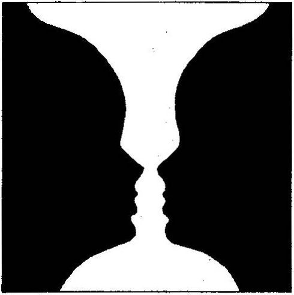
Çayından bir yudum alarak devam etti, "Şekil-zemin ilişkisi bütün duyu organlarını kapsar. Kuş sesini dinlerken, trafik sesi arkada zemin oluşturur. Birisi sırtımıza dokunduğunda, giysimizden sürekli gelen duyum zemin, kişinin dokunmasıyla oluşan duyum şekil olur. Yine aynı biçimdeoturma odasında alışageldiğimiz koku zemine, mutfaktangelen soğan kokusu ise şekile örnek olarak gösterilebilir.
"Görsel alanda şekil bize daha yakındır ve bir nesne izlenimi verir, bir biçimi vardır; zemin ise tanımlanması zor madde izlenimi taşır. Şekil, aynı aydınlık şiddetinde olsa dahi, zeminden daha aydınlık görünür. Şekil daha etkileyici bir izlenim yapar ve daha iyi hatırlanır.
Yakup Bey, daha önemli bir şey söylemeye hazırlanan bir insanın tavrı ile bana baktı, biraz bana doğru eğildi ve sözlerine devam etti: "Şekil-zemin ilişkisi «kalıplanmış» ve «gelişmiş» insanları anlamamızda akılda tutulacak önemli bir kavramdır. Bu iki kişi aynı konuyu tartışırken kullandıkları kavramlar aynı olabilir; ne var ki, «kalıplanmış» kişinin şekil olarak kullandığı kavramı «gelişmiş» kişi zemin olarak algılıyor olabilir."
Yüzümde beliren soru işaretini görmüş olacak ki, konuşmasına bir örnekle devam etti: "Örneğin, korku-sevgi, geçmiş-gelecek kavramlarının şekil ya da zemin olarak algılanması kişinin tüm düşünsel ve duygusal yaşamını etkileyecek sonuçlar doğurur. Korkuyu şekil sevgiyi zemin alan bireyin çalışma yaşamı, çocuk yetiştirmesi, evlilik ilişkileri, din konusundaki duygu ve düşünceleri, sevgiyi şekil ve korkuyu zemin alan birinden çok farklı olacaktır."
Söyledikleri bir anlam ifade ediyordu ama, yine de açık seçik değildi. Yakup Bey kafamın karışmış olduğunu yüzümden anlamış olacak ki, bir örnekle açıklamasını sürdürdü.
"Örneğin korktuğu için çalışan insan, sevdiği için o işi yapandan çok farklı bir algılama dünyası oluşturur. Başka örnek din alanından verilebilir;örneğin, cehennem korkusuyla iyilik yapan, yardım edenbiri ile, Mevlana gibi Yüce Sevgili'ye ulaşmak için gönlünü açarak hizmet veren biri aynı olabilir mi?"
Yakup Bey'in gözleri parlamıştı. Mevlana'dan ve sevgiden söz ederken oldukça duygusallaştığını gördüm. Gözleri pırıl pırıl bana döndü, kendindeki değişikliği görüp görmediğimi merak edercesine bir süre baktı. Mevlana'ya ve sevgiye önem verdiğini anlamamak olanaksızdı. İçimde bir ılıklık hissettim. Sadece kafası değil, gönlü de zengin biriyle beraber olduğumu anlıyordum. Kendisine duyduğum saygının kuvvetlendiğini hissettim.
Yakup Bey içimden geçenleri anlarcasına hafifçe gülümsedi ve sözlerine devam etti: "Aynı karşılaştırmayı geçmişi şekil geleceği zemin alan biriyle, geleceği şekil geçmişi zemin alan bir diğeri arasında da yapabiliriz" dedi ve bu karşılaştırmayı benim yapmamı istedi. Önce birden bire paniğe kapılır gibi oldum. Sonra sanki yüksek sesle düşünürcesine konuştum.
"Geçmişi şekil alan kişi sürekli anılarını düşünür, onları dile getirir; gelecek pek önemli değildir. Geleceği şekil alan ise sürekli planlar yapar, ileriye dönük düşünür ve geçmişe o kadar önem vermez" dedim.
"Evet, hemfikirim" diyerek söylediklerime katıldığım belirtti.
"Şimdi organizasyona yol açan önemli ikinci faktör olan tamamlama konusuna geçiyorum" diyerek çayından bir yudum aldı.
Tamamlama: "Bir nesnenin tümü görülmese de algılama, sanki o nesnenin tümü görülüyormuş gibi tam olur. Gerçekte, ancak ender hallerde nesneleri bütünüyle görürüz. Bize gelen bölük pörçük duyuları biz tamamlarız. Şekil-zemin ilişkisinde olduğu gibi tamamlama kuralı da yalnız görsel alana özgü değildir, bütün duyu alanları için geçerli bir kuraldır. Konuşmakta olan birisinin sözleri bölük pörçük, yarım yamalak duyulduğu halde, o kişinin ne dediği tamamlama kuralına dayanarak algılanabilir.
"Algısal organizasyonda tamamlama ilkesinin önemi, üzerinde durduğumuz iki tip insanı, yani «kalıplanmış» ve «gelişmiş» bireyleri düşününce ortaya çıkar. Şekil-zemin ilişkisinde olduğu gibi, «kalıplanmış» ve «gelişmiş» bireyler dış dünyadan eksik olarak gelen belirsiz, tamamlanmamış uyarıcıları kendi psikolojik bünyelerine göre tamamlarlar. Bir başka deyişle «kalıplanmışlık» ve «gelişmişlik» psikolojisinin belirsiz olan durumları tamamlamaları birbirinden farklı özellikler taşıyacaktır.
"Algılamanın bu özelliğine dayanarak projektif kişilik testleri yapılmıştır. Kişiye iyice yapılaştırılmamış uyarıcılar gösterilir ve kişinin bu belirsiz durumu nasıl yapılaştırdığına bakılarak onun kişiliğinin türü hakkında bir kanıya varılır. Ama ben testlerle ilgili pek konuşmayacağım. Benim sizinle yapmak istediğim, sistematik olarak «kalıplanmış» ve «gelişmiş» insanların dünyalarını karşılaştırmaktır. Bebek'teki çayevinde bu iki insan tipinin dünyayı algılarken kullandıkları temel paradigmaları inceleyeceğim. Gelmemize az kaldı, şimdi başlamak istemiyorum” dedi.
Vapur Arnavutköy'ün önünden geçerek Bebek iskelesine yaklaştı. Bebek iskelesine çıktıktan sonra önce bir süre rıhtımdaki parkta yürüdük. Daha sonra, parktaki yeşil boyalı kanepeler üzerine oturarak Boğaz'daki kuşları, gemilerin geçişini seyrettik.
Her şey aynı nefesten alır: Hayvanlar, ağaçlar, insanlar.. .. Hayvanlar olmazsa insanlar ne yapar? Bütün hayvanlar gitse insanların ruhu büyük bir yalnızlığa boğulur;i nsanlar yalnızlıktan ölür.
KIZILDERİLİ REİS SEATTLE
PARADİGMA: ALGI VE DÜŞÜNCEYE YÖN VEREN HARİTA
Bebek parkında bir süre oturup konuştuktan sonra Bebek Camii'nin yanındaki çayevine doğru yürümeye başladık. Yakup Bey sık sık buraya geldiğini, çayevini işleten Abdullah Bey'i tanıdığım söyledi. Bebek'in kendine özgü bir tarihçesi varmış; kiminin Nuri Baba, kiminin Nuri Kaptan dediği yaşlı bir balıkçı Bebek'in tarihini başından sonuna iyi bilirmiş. Yakup Bey arasıra Nuri Baba ile çay içer sohbet edermiş.
Bebek Camii'nin önünden geçerek çayevine geldik. Cami duvarına konmuş tabelada şunlar yazılıydı:
BEBEK-HUMAYUN.UABAD-CAMİİ. BU ESER V. SULTAN MEHMET REŞAT PAŞA ZAMANINDA TÜRK MİMARLARINDAN KEMALETTİN BEY TARAFINDAN 1912 YILINDA İNŞAA EDİLMİŞTİR.
Bu tabelanın sol alt kısmına kalınca bir karton üzerine «1,5 metre ileride WC» yazılmış ve yazının altına soldan sağa giden bir ok çizilmiş. Camii'nin önünden geçerken Yakup Bey, "Maalesef bu tuvalet denize akıtılır" dedi. Daha sonra Bebek Çayevi hakkında bilgi verdi:" Bebek Çayevi 1923'ten beri var. Daha önce balıkçıların buluştukları bir ortamdı; şimdi daha ziyade Boğaziçi Üniversitesi öğrencileri ve öğretim üyelerinin uğradıkları bir mekân oldu."
Çayevininbir camlı kısmı var, bir de denize bakanön kısmında açık asma altı kısmı. Esasında asma yok; asma dallarının yerine kavuniçi plastik yağmur koruyucularla örtülmüş, ince yapraklı bir ağaç ve ağaca sarılmış sarmaşık kendine özgü hoş bir hava veriyor.
Çayevinin hemen yanında «Özsüt Pub» adında bir dükkân var. Camekanında büyük harflerle alt alta SANDVİÇ, CAPPUCİNO, ESPRESSO yazılmış. Özsüt Pub'ın önünde beyaz yuvarlak masalar var; masaların ayakları yeşil. Masalarla deniz arasında ufak bir çimenlik alan var. Birçok kişi motor ve yelkenlisini kıyıya bağlamış, bu nedenle Çayevinde oturanlar Boğaz'ın manzarasını göremiyorlar.
Çayevine geldik, Yakup Bey'i görünce çayevini işleten Abdullah Bey'in yüzü güldü ve "Buyrun hocam, şöylebu masaya buyrun" diyerek Küzel sakin bir yerde bize ufak bir masa gösterdi. "Size ıhlamur getireceğim, acaba bu genç ne istiyor?" diye beni gösterdi. Ben de ıhlamur İstedim; çayın, özellikle demli çayın beni gerginleştirdiğini hissetmeye başlamıştım. Önceki buluşmalarımızın birinde çay yerine niçin ıhlamur içtiğini Yakup Bey'e sorduğumda, "Çayda kafein ve teofilin olmak üzere iki tür uyarıcı var. Bunlar beni gerginleştiriyor, ıhlamur ise rahatlatıyor" demiş ti.
Teofilin kelimesini söyledikten sonra İngilizcesini «theophylline» olarak yazmıştı.
Masaya oturduktan sonra Yakup Bey, "Buradaki konuşmamız, daha sonraki konuşmalarımızda sık sık kullanacağımız bir kavram üzerine olacak" dedi. Gelen ıhlamurlarımızdan birer yudum aldık. Defterimi masanın üzerine koydum, not almaya hazırdım. Böyle dikkatli dinlemeye hazırlanışımdan Yakup Bey memnun görünüyordu.
"İnceleyeceğimiz kavramın adı paradigma” diyerek sözüne başladı.
"Geçen gün trafik afeti, sigara afeti gibi konuların altında yatan temel kavramı mı tartışacağız?" diye sordum. Gülümseyerek, "Evet, nihayet beklenen zaman geldi; algılama ile ilgili süreçleri açıkladıktan sonra şimdi paradigma kavramını inceyebiliriz" dedi ve açıklamasına başladı.
"Paradigma, bireyin iç ve dış dünyasını algılayıp yorumlamasında etkili olan tüm faktörleri kapsar. Algılama, yorumlama ve bilme süreçleriyle ilgili tiim etkenlerin yarattığı örgütlü ve dinamik düşünsel sisteme algı diizeneği ya da paradigma adı verilir. Paradigma, farkına varmadan taktığımız bir psikolojik gözlüktür; iç dünyamızı olduğu kadar dış dünyamızı da bu gözlük aracılığıyla görürüz.
"Vapurda gelirken algılamanın ne olduğunu incelemiş ve duyu organlarımızdan gelen duyumları aktif biçimde seçen, organize eden ve yorumlayan süreçlerealgılama adınıvermiştik. Algılama süreçleri, hangi duyumlara dikkat edileceğini belirler, seçilen duyumları bir şema ya da örüntü<7 8> halindeorganize eder ve bu örüntünün ne anlama geldiğini yorumlar.
"Algılamayı etkileyen kişiye ait tüm iç etkenler bir araya gelerek bir algı düzeneği oluşturduğu zaman bu sisteme paradigma adı verilir. Paradigma dinamiktir ve çoğukez kişi kullandığı paradigmanın farkında değildir" dedi.
Yakup Bey'in yüzünden, son derece önem verdiği bir konuyu açıklayan bir hocanın ciddiyetini okuyordum.
Ihlamurundan bir yudum daha aldıktan sonra, konuşmasına devame tti:
Bir Örnek
"Paradigmaların ne olduğunu ve nasıl işlediğini basit bir örnekle açıklayalım. Farzet ki, evin önündeki bahçede küçük bir kedi yavrusu yoldan geçenlere yaklaşarak miyavlamakta olsun. Kedi yavrusunun bu davranışına normal koşullarda çocukla/81 ilgi gösterirler, durup bakarlar, küçük kedinin yanlarına yaklaşmasına izin verirler, çoğu kere onu okşamaya yeltenirler.
(7) Orüntü kelimesi İngilizce «pattem» kelimesi karşılığı kullanıldı.
(8) Çocuklar yapılan telkinlere daha çabuk inandıkları için onlardan örnek verildi. «Normal koşullar»dan kastımız özellikle kedi korkusu olmayan, ya da ana-babası kediyi iğrenç bulmayan çocukların oluş turduğu bir durumdur.
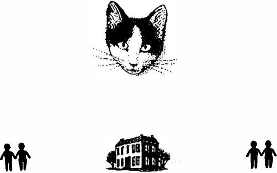
"Şimdişöyle bir deney yaptığımızı düşünelim: Evin sağına ve soluna ellişer metre ilerisine «sözcü» bırakalım. Eve sağ taraftan yaklaşan çocuklara (bu gruba «A» grubu diyelim) sözcü, «50 metre ilerideki bahçeli evin önünde küçük bir kedi yavrusu var. Zavallı sahipsiz. Kendini se.vecek, okşayacak birini arıyor. Ne olur yanınızda varsa ona yiyecek verin; geçerken durun, biraz okşayın,» mesajını versin.
"Eve sol taraftan yaklaşanlara ise (bu gruba «B» grubu diyelim) «50 metre ileride bahçeli evin önünde küçük bir kedi yavrusu var. Kedi yavrusu kuduz hastalığına yakalanmış;her an insanları tırmalamaya ve Isırmaya hazır. Sakın onun yanına yaklaş mayın; sizi ısırırsa kuduz olursunuz!» mesajı verilsin.
"Bu iki farklı mesaj, iki farklı davranışa yol açacaktır; eve farklı yönlerden yaklaşan iki grup çocuk, «kedinin miyavlayarak kendilerine yaklaşması»na birbirinden farklı iki tepkide bulunacaktır. «A» grubundaki çocuklar, "Ah zavallı, gidecek yeri yok, bakımsız" diyerek ona «şefkatle» yaklaşırken, diğer grup, "Pis hayvan şimdi bizi ısıracak" diyerek «korkuyla» ondan kaçacaktır.
"«A» grubundaki çocuklara «şefkat paradigması»nın gözlüğü takılırken, diğer yönden gelen «B» grubundaki çocuklara «korku paradigmasının gözlüğü takılmıştır."
Yakup Bey'in anlattığını hemen anlamıştım. Olay gayet açık ve seçikti. Anladığımı belirtmek üzere düşündüklerimi söylemeye başladım: "Büyürken ana-babamız, okulda öğretmenlerimiz, gazeteler, siyasi pnrtiler, hükümet ve şu anda siz bana belirli paradigmalar öğretmeye çnlışmıyor musunuz?" diye sordum.
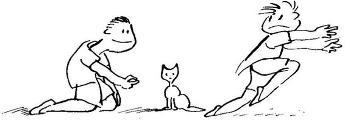
Yakup Bey'in gözleri parladı ve "Evet, benim ileride söyleyeceğimi şu anda siz söylediniz" dedi. "Aile, eğitim, bütün kurumlarıyla toplum ve kültür insanlara sürekli paradigmalar empoze etme durumundadır. Ama, konunun bu yönüne gelmeden önce paradigma kavramını biraz daha açmak istiyorum" diyerek konuşmasına devam etti:
Paradigma
"Paradigma kelimesiYunanca kaynaklıdır. Bugün aşağıdaki anlamlarda da kullanılmaktadır: model, kuram, varsayım, algı dayanağı gibi.
"Yukarıda da belirttiğim gibi paradigma kavramını daha geniş anlamında dünyayı görüş, algılama, anlama ve yorumlama sistemi olarak kullanıyorum."
Yaktip Bey çantasından bir harita çıkardı masanın üzerine koydu.
"Paradigmayı bir harita olarak düşün. Harita temsil ettiği şeyi ne kadar gerçekçi olarak yansıtırsa o derecede değer kazanır. Örneğin bir şehrin haritası, o şehrin kendi değildir, o şehrin kağıt üzerine çizilmiş bir modelidir. Şehri ne kadar gerçeğe uygun olarak temsil ediyorsa, harita o derece kullanışlı ve işe yarar olacaktır.
Paradigma da, bir harita gibi, başka bir gerçeğin modelidir.
"Bursa şehrinin haritası üzerine yanlışlıkla, İzmir yazılmış olsa ve siz bu haritayı kullanarak İzmir'in bir noktasından diğer noktasına gitmeye çalışsanız, ne kadar dikkat ederseniz edin, ne kadar hızlı giderseniz gidin, başarılı olamazsınız. Çünkü kullanmış olduğunuz paradigma, izlediğiniz harita yanlıştır; temsil etmesi gerektiği gerçeği, yani İzmir şehrini temsil etmemektedir. İzmir'de adres bulmakta kullandığınız tutum, öğrendiğiniz teknikler, araba kullanma hızınız, ya da başka hiçbir şey yanlış paradigmanın (haritanın) getirdiği zararı önleyemeyecektir."
Yakup Bey, durup dururken kıkır kıkır gülmeye başladı. Niçin güldüğünü anlayamıyordum; yüzüne hayretle bakakaldım. Bu sevinçli bir gülüş müydü? Yok hayır, değişik, biraz gün görmüşlük, biraz acı karışık, uyanık, canlı bir gülüştü.
Bir süre sonra gülmesinin nedenini şöyle açıkladı: "Tanıdığım bazı insanlar, paradigmalarına öylesine bağlanmışlar, öylesine bir «paradigma tutkunluğu» geliştirmişlerdir ki, ellerindeki Bursa haritasının İzmir'de adres bulmaya yaramadığını yüzlerce defa gördükleri halde, kabahati haritada değil, İzmir'de bulurlar."
Bu son cümleyi söylerken Yakup Bey yine gülmeye başladı. Denetlemeye çalıştığı gülmesi azalınca açıklamaya devam etti:
"Bir anlamda, «Bu sokaklar ve evleryanlış yere konmuş,yanlış isim verilmiş; esasında bu haritada gösterildiği gibi düzenlenmeliydi,» demektedirler."
Ben bu söylediğini o kadar gülünç bulmamıştım ama, Yakup Bey gözlerinden yaş gelinceye kadar yine güldü. Gülmesi geçtikten sonra konuşmasını şöyle sürdürdü:
"İki türlü paradigma sürekli bizimledir: (1) Gerçeğin ne olduğu ile ilgili paradigma, (2) nelerin nasıl olması gerektiğini gösteren değerler paradigması. Bursa haritası ile İzmir'de adres bulmaya kalkrşan biriyle ilgili verdiğim örnek, gerçeğin ne olduğu ile ilgili paradigmaya ait bir örnektir. Değerler paradigması ise neyin iyi neyin kötü, nelerin önemli ya da önemsiz olduğunu bize söyler; başka bir deyişle değerler paradigmasına göre önceliklerimizi saptarız. Örneğin, çocuğunu iyi okula gönderme ya da kendine daha lüks araba alına arasında tercih yapma durumunda olan bir baba, kendi değer paradigması çerçevesinde tercihini yapacaktır.
"Gerçeğin ne olduğunu ve neyin değerli, önemli olduğunu söyleyen bu iki tür paradigma, günlük yaşantılarımızı algılama ve yorumlamamızda bizi etkiler. Daha önce söylediğimiz gibi paradigmalar gözümüzde sürekli takılı gözlükler gibidir; iç ve dış dünyamızı onların aracılığıyla görürüz."
Bir süre sustuktan sonra konuyu gelişmiş ve kalıplaşmış insanlara getirerek, "«Gelişmiş» insanın yaşamıboyunca oluşturduğu paradigma, «kalıplanmış» insanın paradigmasından farklıdır" diye sözüne devam etti: "Bu nedenle, bu iki insanın «gerçekleri» ve «değerleri» birbirine benzemez; birbirleriyle iletişim kurmakta zorluk çekerler."
Kafamı kurcalayan bazı konular vardı. Bu konuların ne olduğu konusunda pek kesin bir görüşüm olmadığı halde, Yakup Bey'in eşitci ve yumuşak tavrından cesaret alarak konuşmaya başladım ve aramızda aşağıdaki etkileşim yer aldı:
Timur: "Konuşmanızın başında paradigmaların «doğru» ya da «yanlış» olabileceğinden söz ettiniz ve örnek olarak üzerine yanlışlıkla İzmir yazılmış Bursa şehrinin haritasıyla lzmir'de adres aramayı verdiniz. Vermiş olduğunuz örnekte kullanılan harita İzmir'i temsil etmediği için «yanlış» idi.
"Beni düşündüren konu şu Yakup Bey; bizim o haritaya «yanlış» diyebilmemiz için, İzmir şehrini bilmemiz gerekir. Ancak İzmir şehrini bildikten sonra, o haritanın İzmir'e uymadığını söyleyebiliriz. Eğer hem İzmir, hem de Bursa şehirlerini bilirsek, o zaman yapılan hatayı kavrar ve «yanlış» harita yerine «doğru» haritayı kullanabiliriz.
"Ama yaşamda birçok olay var ki, bu olaylar içinde insanlar kendilerini İzmir'i hiç bilmeyen bir kişi durumunda bulurlar. Örneğin, kalıplayıcı bir aile ortamından yetişmiş bir baba, kalıplayıcılığın ötesinde bir şey bilmediğinden, doğal olarak kendi çocuğunu da kalıplayacaktır. Biz bu babaya nasıl «Senin çocuk yetiştirme tarzın yanlış!» deriz."
Yakup Bey: "Çok önemli bir noktaya parmakbasıyorsunuz. Aslında verdiğiniz örneği genişleterek şöyle söyleyebiliriz: «Kalıplanmış» ve «gelişmiş» insan paradigmalarının ikisini de bilen bir baba, «kalıplanmış» çocuk yetiştirmeyi yeğlerse, onun bu davranışının «yanlış» olduğunu kendine nasıl kanıtlayabiliriz?"
Timur: "Evet, beni düşündüren nokta da bu. Elimizde bir başka kritere, bir başka paradigmaya gerek var. Ancak üst düzeydeki bir başka ölçüte göre kalıplamanın «yanlış» geliştirmenin «doğru» olduğunu saptayabiliriz.”
Yakup Bey: "Evet, düşüncenize katılıyorum. Aslında böyle bir üst düzey paradigması işin içinde; ne var ki, o kadar belirgin değil."
Timur: "Söylediğinizi anlayamadım. Çocukları kalıplar içinde yetiştirmenin «yanlış» olduğunu belirten bir paradigma mı var?" Yakup Bey: "Evet var! Ama onu görebilmek için dikkatle bakmak gerekir."
Timur: "Ben dikkatle bakıyorum, ama göremiyorum!"
Yakup Bey: "Daha somut bir örnek olduğu içinyine İzmir'de adres bulmaya dönelim. İzmir'de adres ararken elinde iki harita olsa, hangisinin «yanlış» hangisinin «doğru» olduğunu anlamak için ne yapardın?"
Timur: "Hangi harita bana en kısa zamanda en az hata ile.adresi buldurursa ona "doğru" harita derdim.''.
Yakup Bey: "Demek ki elinde «en az hata» ve «en kısa zaman» gi iki ölçüt var; onları kullanarak «yanlış» ve «doğru» haritayı birbirinden ayırt ederdin!"
Timur: "Evet. Bu ölçütler bana gerekli bilgiyi verirdi."
Yakup Bey: "Şimdi İzmir ve Bursa haritaları yerine, elimizde «kalıplayan» ve «geliştiren» iki tür çocuk yetiştirme yöntemi olsun. Bu yöntemlerden birinin «doğru,» öbürünün «yanlış» olduğunu anlamak için ne yapardın?"
Timur: "Ne demek istediğinizi anlıyorum, galiba. Çocuk yetiştirme konusunda psikoloji ve pedagoji bilimlerinin ortaya koymuş olduğu bazı gerçekleri ölçüt olarak kullanan paradigmaların bulunduğunu söylemek istiyorsunuz."
Yakup Bey: "Ne var ki, psikoloji ve pedagojibilimlerininbulgularını içeren bu paradigmalar hemen göze çarpmaz; onların varlıklarını anlayabilmek için okumak, öğrenmek, dinlemek ve düşünmek gerek. Okuyan, öğrenen, dinleyen ve düşünen ana-baba «kalıplayan» ve «geliştiren» çocuk yetiştirme yöntemlerinin hangisinin «doğru», hangisinin «yanlış» olduğunu kavramakta çok zorluk çekmez."
Timur: "Peki psikoloji ve pedagoji biliminin geliştirdiği çocuk yetiştirmeyle ilgili paradigmanın özelliklerini bana söyler misiniz?" Yakup, Bey: "Söylesem de şu anda size bir anlam ifade etmez. Zamanla böyle bir paradigmanın temelinde yatan süreçleri daha iyi anlamamıza yarayacak kavramlardan söz edeceğiz; o zaman konuyu daha açık seçik görebilirsiniz."
Bu konuşmadan sonra Yakup Bey bir süre sustu; ne konuşacağını planlar bir hali vardı. Daha sonra konuşmasına devam etti:
"Tutum ve davranışların kökenleri bireyin paradigmalarında yatar. Paradigmalar insanın o kadar bir-parçasıdır ki, günlükyaşamda onların farkına varmak zordur. Bu nedenle kişi kendi algılamasının ötesinde başka türden algılamalar olabileceğini çoğu kez hiç düşünmez. Bursa şehrinin haritasıyla İzmir'de adres bulmaya çalışan biri gibi, insanların büyük çoğunluğu kendi algılama ve yorumlamalarından her zaman emindirler."
Burada Yakup Bey yine gülmeye başladı. Fakat gülüşü uzun sürmedi; konuşmasına devam etti:
"Yukarıda kedi yavrusunun davranışını algılamayla ilgili deney bize iki şey göstermektedir:
"1Geçmiş yaşantılarımızdan getirdiğimiz koşullanmalar algılamamızı etkilemektedir. «A» grubundaki çocukların «şefkat gösterin,» «B» grubundaki çocukların ise «korkun kaçın» yönündeki koşullanması, yoldan geçen çocukların kedi yavrusuna karşı duygu, düşünce ve davranışlarında etkisini göstermiştir. Böylesine kısa süreli koşullamaların ötesinde, demin sizin de söylediğiniz gibi bütün yaşam boyu çocuğu ve yetiş kini etkileyen aile, okul çevresi, arkadaş çevresi, kitle iletişimi, iş, meslek ve din koşullamalarının etkisi daha büyüktür. «Kalıplanmış» ve «gelişmiş» insanların kullandıkları paradigmalar bu tür koşullanmaların içinde oluşmuş algı ve düşünce sistemleridir.
"2Dünyayı görüş, algılama, anlama ve yorumlama sistemi anlamında kullandığımız paradigmalar bizim tutum ve davranışlarımızın kaynağıdır. Başka bir deyişle paradigmalar arasıra etkisini gösteren, diğer zamanlar pasif şekilde duran depolanmış sistemler değildir; etkilerini duygu, düşünce ve davranışlarımızda doğrudan ya da dolaylı her an gösterirler."
Yakup Bey yine gülerek sözüne devam etti: "Bu gözlemlerden bazı sonuçlar çıkarabiliriz. Örneğin, kişinin belirli konudaki davranış ya da tutumu bozuksa, önce o bozuk davranış ve tutumun altında yatan algılama düzenini, paradigmayı, düşünsel haritayı anlamamız gerekir. Bozuk davranış ve tutumu, altında yatan paradigmaya hiç dokunmadan değiştirmeye kalkarsak, başarılı olamayız(9).
"Şimdi isterseniz birkaç gün önce söz konusu ettiğimiz trafik ve sigara afetlerine kısaca değinelim. Trafik afeti dediğimiz olayın temelinde yatan «Türk Trafik Paradigması»nı anlamadan sürücülerin, yayaların, trafik polislerinin davranışlarını değiştirmeye kalkmak, Bursa
(9) «Davranışı biçimlendirme» adı verilen bir tür psikolojik tekniği bu tartışmanın dışında tutuyoruz. Bizim bu kitapta ilgilendiğimiz konular, kişinin tüm yaşamını kapsayan zihinsel süreçlerin iş in içine girdiği davranışları içeriyor. Davranışı biçimlendinne türünden bir teknik bu tür kapsamlı zihinsel süreçlerin değiş mesiııe yol açmaz. Davranışı biçimlendirme tekniği ile ilgili bilgiyi yazarın insan ve Davranışı kitabında (s. 151-4; 489-95) bulabilirsiniz.h aritası ile İzmir'de adres bulmaya kalkmaya benzer" dedi ve Yakup Bey yine gülmeye başladı.
Ama konuşmasına devam edebiliyordu: "Sigara içme ile ilgili «Sigara İçme Paradigması»ndan söz edebildiğimiz gibi, «Diş Bakımı Paradigmasından da söz edebiliriz. Trafik, sigara içme, diş bakımı paradigmalarının neler olduğunu ancak iyi düşünülmüş, iyi planlanmış, titizlikle uygulanmış ve dikkatlice yorumlanmış bilimsel araştırmaların bulgularına dayanarak keşfedebiliriz.
"Bu konularda herkesin kendine göre bir anlayışı ve yorumlayışı vardır. Bir gazetecinin anlayış ve yorumlayışı bir diğerinkinden farklı olabilir. Hatırlarsınız trafik konusunda Emniyet Genel Müdürü Yılmaz Ergun'un yorumu, köşe yazarı Ege Cansen'inkinden farklı idi. Öte yandan Ege Cansen'in «tedbirsizlik» ve «terbiyesizlik» gibi bireylerin davranışlarına ağırlık veren yorumunun karşısında Oktay Ekşi'nin devletin sorumsuzluğuna ve ilgisizliğine ağırlık veren bir bakışı vardı.
"Bu tür görüş ayrılıkları doğaldır ve esasında bilimsel araştırmalar başlamadan önce görüşlerin her birinin açık seçik ortaya konabilmesi önemli bir aşamayı oluşturur. Ama bu tür yaklaşımların bireysel görüşler olduğu bilinmeli ve değişik denenceler (hipotezler) olarak kullanılmalıdır. Ancak sağlıklı bilimsel araştırma dizileri olayların altında yatan temel değişkenleri ortaya çıkarabilir.
"Türkiye ile ilgili paradigma konularını başka bir buluşmamızda daha ayrıntılı olarak inceleyeceğiz" derken Yakup Bey çantasından büyükçe bir sarı zarf çıkardı ve masanın üstüne koydu. Büyük zarfın içinde gazete kupürlerini görebiliyordum." Ama önce kısaca bazı genel yönleri belirtelim" dedi ve sözlerine şöyle devam etti:
Paradigma değişikliği yapılmadan davranış ve tutumda yapılan değişiklikler
"Paradigma değişikliği yapılmadan davranış ve tutumda yapılan değişiklikler yüzeysel ve kısa süreli olur. Bu demek oluyor ki, «kalıplanmış» birine zorla «gelişmiş» biri gibi davranmayı bir derece öğretebiliriz; ne var ki, bu davranış yüzeysel ve kısa süreli olmaya mahkumdur.
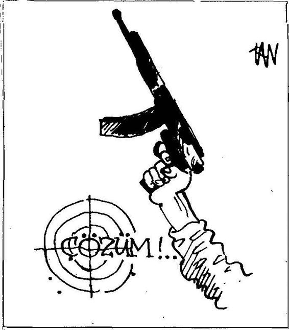
(Cumhuriyet Hafta, 21-27 Ağustos 1992)
"Butür yüzeysel davranış değişikliğine zorlamayı toplumumuzda sık sık gözledik. «Açık toplum» olacağız dedik; demokratik devletin «şeffaf» olması gerektiğini söyleyen siyasal liderlerimiz «güleryüzlü polis» göreceğimizi söylediler. Öğretmenleri, üniversite profesörleri, hatta gazetecileri güleryüzlü olmayan bir toplumda, güleryüzlü polis görmek gerçekten «doğaüstü bir olay» olacaktı."*'10 Yakup Bey aklına komik bir şey gelmiş gibi yine gülmeye başladı.
Dayanamayarak, "Yakup Bey, affedersiniz, ben pek gülünç bir şey göremiyorum, acaba anlamadığım bir yön mü var?" diye sordum.
"Özür dilerim Timur Bey, Bursa haritasına tutkunluğundan dolayı İzmir'de adres bulamayan o kadar insan var ki, onların bütün yaşamlarını büyük bir hırsla İzmir'e küfrederek geçirişlerini gördükçe içim sızlıyor. Gençliğimde bu insanlarla tartışır ve İzmir'e küfretmelerinin ne kendilerinene de İzmir'ebir yarar getirmeyeceğini söylerdim. Nevar ki, Bursa haritasının doğruluğundan şüphe ettiğimden hepsi bana düşman kesildi. Önce bozuldum ve öfkeyle onların saldırısına cevap verdim. Şimdi ise rahatlıkla gülebiliyorum."
Bir süre durdu, gözlerini hafifçe kısarak uzaklara baktı; bir şey hatırlamaya çalışan bir insanın yüz ifadesi vardı. "Doktora. öğrencisi iken üniversitenin araştırma laboratuvarında kafesekapatılmış bir maymunun
(1 O) Bukonudabazı gözlemleri okuyucu Yeniden insan insana kitabımdaki sayfa 235'de baş layan "Değiş en Türk Toplumu içinde İletiş im” başlığını taşıyan kısımda bulabilir.e line geçirdiği bir diş fırçasını anahtar gibi kullanarak kapıyı açmaya çalıştığını görmüştüm. Araştırma gereği maymunugözlememgerekiyordu. Bir gün kapıyı açacak gerçek anahtarın yedeğini kendine verdim. Anahtarıkafesinbir köşesine attı; yine dış fırçası ilekapıyı açmaya girişti. Besbelli ki, maymun diş fırçasına belirli bir tutkunluk geliştirmişti, onun ötesinde bir başka nesneyi kullanmayı düşünmüyordu."
"O günden beri ne zaman Bursa haritası ile İzmir'de adres bulmakta ısrar eden biri görsem, hepbumaymunu düşünürüm. O kişiye ulaşamamanın bilinci içimi sızlatır; ne var ki, yaşamda çektikleri bütün ızdırapları kendi elleriyle hazırladıklarını bildiğimden, acı da olsa gülümsemekten kendimi alamam" dedi.
Çaycı ıhlamurlarımızı tazeledi. Yeni ıhlamurdanbirer yudumaldık. Yakup Bey konuşmasına devam etti:
"Bütün bu gözlemlerden çıkaracağımız önemli bir sonuç var; o da dünyayı olduğu gibi değil, olduğumuz gibi gördüğümüzdür. Gördüğümüzü anlatırken, esasında kendimizi, kendi paradigmamızı anlatırız."
KİM KİME DUM DUMA BEHiç ak
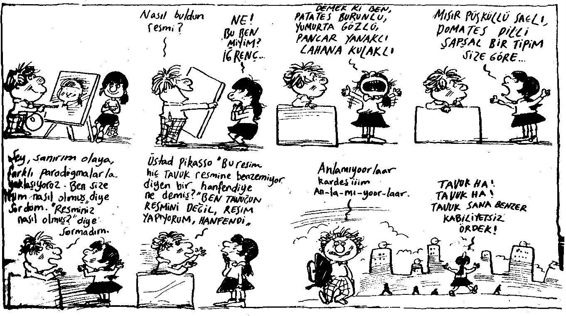
( 11) Bu çizimi gazeteden keserek bana yollayan Serdar Büyüközer'e teşekkür ederim.
"«Kalıplanmış» kişi dünyada kendi kalıplarını görür. Bu kalıpların dışında başka gerçek, başka değer yoktur. Bizimle hemfikir olmayan insanlarda bir bozukluk veya eksiklik olduğunu düşünmemizin altında bu gerçek yatar."
Bilimde Paradigma
Yakup Bey çantasından bir kitap çıkardı. Kitabı önüme koydu. Kitabın kabı siyahtı. En üstte altın sarısı renkte, The Structure of Scientific Revohıtions yazılıydı. Bunun altında «Second Edition, Enlarged» yazılıydı. Onun da altında yazarın adı «Thomas S. Kuhn» olarak verilmişti. Daha altta siyah zemin üzerine çizili beyaz ve altın sarısı renkte bir desen bulunuyordu. Desenin altında, sağ alt köşede, «A landmark in intellectual history» yazılıydı. Bu sözün çıktığı derginin ismi, satırın altına «Science» olarak yazılmıştı.
Kitabın kapağını açtım. İçinde ne şekil vardı, ne de «İçindekiler» başlığı altında bölümlerin adları. Kitabın sayfalarını açarak bölüm başlıklarını aradım. Romen rakamlarıyla kaçıncı bölüm olduğu belirtilen başlıklarda konular yazılıydı. «I. Introduction: A Role of History; II. The Route to Normal Science; III. The Nature of Normal Science; IV. Normal Science as Puzzle» diye devam ediyordu.
Kitabı bir süre karıştırdıktan sonra Yakup Bey'in yüzüne sorarcasına baktım.
Yakup Bey, "Thomas Kuhn'un bu kitabı bilim tarihinde klasik hale gelmiştir ve bilim dünyasında egemen olan paradigmaların tarihini gözden geçirir. Kuhn bu çalışmasında, bilimde ortaya çıkan her yeni adımın ancak eski düşünüş biçiminin iyice bilincine vardıktan, o konuya hakim olan paradigmadan bağımsızlık sağlandıktan sonra oluştuğunu göstermektedir" diye beni kitap hakkında aydınlatmak istedi.
Daha sonra sözlerine şöyle devam etti: "Eski Mısırlı gökbilimci Ptolemy'ya göre Dünya, evrenin merkeziydi. Copernicus, bu paradigmayı değiştirdi ve Güneş'i merkezekoydu ve bu yeni paradigma içinde her şey ayrı bir anlam kazanmaya başladı.
"Newton'un fizik paradigmasını Einstein değiştirdi.
"Önceleri savaşlarda cephedeki askerden çok, geri hizmette yaralanan ve hastalananlar ölüyordu. Mikrop paradigması her şeyi başka bir algılama çerçevesi içine koydu.
"Padişah ya da sultan Allah adına memleketi idare ederken, Fransız ihtilaliyle başlayan bir süreç içinde demokrasi fikri doğdu. Demokrasi paradigmasıyla devlet ve vatandaş kavramları yeni bir yoruma kavuştu."
Yakup Bey'in insanlık tarihinde bu olayların ne kadar önemli olduğunu anlayan bir bakışı ve duruşu vardı. Konunun önemini vurgulamak istercesine sözlerine devam etti:
"Massachusetts Institute of Technology (M.I.T.) profesörlerinden dilbilimci Noam Chomsky yaratıcılığı, mevcut kuralları uygulayan ve yeni kurallar getiren olmak üzere iki kategoriye ayırır. Birinci türden yaratıcılığa dil kullanımını örnek verir; kişi konuşurken ya da yazarken mevcut dil kurallarını kullanarak yeni söz dizileri, cümleler yaratmaktadır; ne var ki, dili kullanan kişi herhangi yeni bir dil kuralı ortaya atmamaktadır. Chomsky'nin yeni kurallar getiren ikinci tür yaratıcılıktan kastettiği ile Thomas Kuhn'un yeni bilimsel paradigmalardan kastettiği anlamlar aynıdır."
YakupBey'in yaratıcılıkla söylediği sonaçıklamayıpekiyi izleyememiştim. Biraz daha açmasını rica ettim.
"Belirli kuralları kullanarak yapılan yaratıcılığa dil davranışını örnek verdik. Bu türyaratıcılığa istersen, «kurala uyumlu yaratıcılık» adını verebiliriz. Bir de yepyeni kurallarla, daha öncebilinmeyen bir düşünce düzeni içinde ortaya atılan yaratıcılık vardır. Einstein'ın göresillik kuramı buna örnek olarak verilebilir. Bu tür yaratıcılığa da «kural değiştiren yaratıcılık» adını verebiliriz."
"Bu ikisi arasındaki fark neden bu kadar önemli görüyorsunuz?" diye sordum.
"«Kurala uyumlu yaratıcılık,» ister «kalıplanmış» ister «gelişmiş» olsun hergün herkesin yaptığı türden bir yaratıcılıktır" diye cevabına devam etti: "Kişiler böyle bir yaratıcılık sürecinin içinde olduklarını bilmeden yaratıcı faaliyetlerini sürdürürler. Diğer yandan «kural değiştiren yaratıcılık» felsefe, bilim ve sanat alanında çok az kişinin başarabildiği bir yaratıcılık türüdür. Bu tür yaratıcılık faaliyetini ancak «gelişmiş» insanlarda görebilirsin."
Önemli gördüğüm yönleri hatırlamama yardım edecek anahtar kelimelerle kısaca not alıyordum. Yazmamı bitirmemi beklercesine sustu; ıhlamurdan bir yudum daha aldıktan sonra yine konuşmaya başladı.'
Yaşamın Her Yönüne Uygulanabilen Bir Kavram
"Paradigma kavramını sadece bilimsel çalışmalarda değil, yaşamın her yönüyle ilgili olarak kullanabiliriz. Söz gelişi, «evlilik paradigmasından söz edebiliriz. Çiftlerin evlilikparadigmalarıbirbiri ile ne kadar uyuşum içinde ise, evlilik ilişkileri o kadar pürüzsüz olacaktır."
Önündeki büyük zarftan bir gazete kupürü çıkardı. «DİSKOYA GİTME Yüzünden Boşanma» başlıklı haberde bir kadın ve erkeğin resimleri vardı. Kadının resminin altında «KOCAM GERİ KAFALI»i fadesi yer alıyordu ve altında şu açıklama vardı: «Adana 3. Asliye
Hukuk Mahkemesi'nde görülen ilginç boşanma davasında, diskoteğe gitmesini kabul edemeyen müteahhit eşini geri kafalı olmakla suçlayan Handan Yaman, "Bana hayatı zehir ettin, artık istediğim gibi yaşayacağım" diye bağırdı. Ümit Yaman da boşanmak istediğini ileri sürdü...»
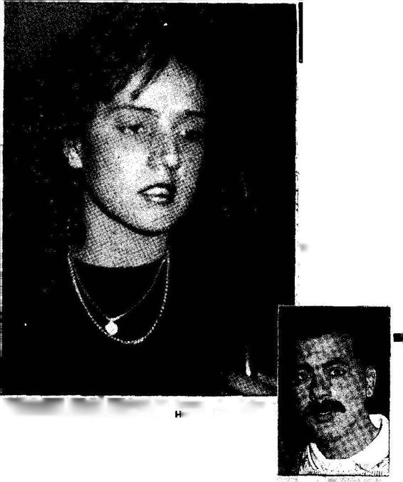
“KOCAM SERİ KAFAir *££ SLmSSTa l'nde görülen İlginç boşanma devasında, diskoteğe gitmesini kabul edemeyen mütaaiıbit esini geri kaftriı olmakla suçlayan Mandan Yaman. Bana hayatı zehir eltin, artık istediğim gibi yasayacağım" diye bağırdı, ümit Yaman da boşanmak islediğini ileri sürdü... .
Handan, eşinden 1 milyon nafaka istedi
"DİSKOYA GhlE"y üzinden bosanıra
' Adana'da müteahhrtlik yapan Üı,,v. laman. yıllık eşi Halandan Yaman'ın, "Şiddetli çimsizlik* f —nıyte açtığı boşanma davaşında, karısının her gece diskoteQe gittiğini söyleyerek, "Handan, her sabaha karşı geliyor. yıl buna dayandım . , ben de anmak istiyorum*
■ Kg ayda 1 milyon nafeka lifti yen
22 yendeki Handan V —, dlArftıfrt gernanln oon maınal bir• da seşo tamanı belirtendü *Öı yüzden çivi tar eşmede, bani har gece dövüyor. Hamany onfif diye koboşaı.
Duruşmada dinlenilen tanıklar da HandanÜmit Yaman çifti arasında sürekli imsizlik olduğunu belirtirken, hâkim karar vermek üzere, duruşmayı erteledi. Duruşmadan ■ sonra iki tarafın yakınlan arasında sert tartışmalar kavgasız bir şekilde son buldu...
► ADANA, (hho)
(Hürriyet, 14 Mart 1992)
Yakup Bey gazete kupürünü göstererek, "Siz eşinizin diskoya gitmesinidoğal karşılar mısınız?" diye sordu. Gerçekten bu bana ters geldi. Eşimin kendi başına diskoya gitmesi beni rahatsız ederdi, bunu kabul edemezdim. «Niçin»ini bilmiyordum, ama rahatsız olacağımı kesinlikle biliyordum.
Yakup Bey gülümseyerek, "Nesrin'e evlenme teklif etmeden önce bu konuyu kendisiyle konuşmuş muydunuz?" diye biraz alaycı bir tavırla sordu. Aklımın ucuna dahi gelmemişti.
Evli kadının kendi başına diskoya gitmesi her şeyden önce kocasının onurunu rencide edici bir davranıştı. Normal bir kadın böyle davranamazdı. Bu düşüncelerimi dilegetirdiğim zaman Yakup Bey, "Eminim haberde ismi geçen koca da sizin gibi düşünmüştür. Bir araştırma yapılsaydı Adana'daki komşuların büyük çoğunluğunun kocayı haklı bulduğu ortaya çıkardı. Çünkü ortada, bizim kültürde yaygın olan evlilik paradigmasına uymayan bir davranış var" dedi. Daha sonra açıklamasına şöyle devam etti:
"«Arkadaşlık paradigması» iki kişinin arkadaşlık ilişkilerini düzenleyen en önemli etkendir. «Ticaret paradigması» iş, «komşuluk paradigması» komşuluk ilişkilerini, «uluslararası siyaset pradigması» ise uluslararası ilişkileri düzenler. Ders öğreten öğretmenin izlediği «öğretmenlik paradigması» olduğu gibi, dersi dinleyen ve o derse çalışan öğrencinin de izlediği «öğrencilik paradigması» vardır.
"Yaşamın her yönüyle ilgili geliştirmiş olduğumuz paradigmalarımız bize gerçeğin ne olduğunu veneyinönemli ya da önemsiz olduğunu söyler. Eğer aşina olmadığımız davranış ya da durumla ilk defa karşı karşıya gelirsek, önce şaşırırız, çünkü bu durumda bize yol gösterecek paradigmamız bulunmamaktadır. Ne var ki bir süre sonra o duruma benzeyen başka bir duruma uyguladığımız paradigmayı transfer eder, yeni duruma genelleyerek kullanırız."
Önümde yeni bir ufuk açıldığım hissediyordum. Şimdiye kadar varlığından bile haberdar olmadığım bir dünyanın farkına varmaya başlıyordum. Bu beni mutlu ediyordu. Kısa bir duraklamadan sonra, Yakup Bey konuşmasına devam etti:
İYİ DÜŞÜN DOĞRU KARAR VER
Geniş ve Dar Kapsamlı Paradigmalar
"Bazı paradigmalar geniş, bazı pardigmalar dar kapsamlıdır. Nasıl ki bir ülkenin anayasası, o ülkenin bütün kanunlarını kapsayacak ve etkileyecek niteliğe sahipse, kişinin üst düzeydeki paradigmaları o kişinin diğer tüm paradigmalarını etkileyecek niteliktedir. «Yaşamın anlamı nedir?» «Ben kimim?» sorularına cevap veren üst düzeydeki paradigmalar, o kişinin «arkadaşlık,» «eğitim,» «iş»ve «meslek» gibi daha az kapsamlı paradigmalarına yön verir ve içeriğini belirler.
"«Kalıplanmış kişi paradigması»nın içine giren tüm alt paradigmalar, üst düzeydeki kapsamlı paradigmaya uyma eğilimi gösterirler. Bir başka deyişle evlilik, çocuk yetiştirme, eğitim, arkadaşlık, iş, meslek konularıyla ilgili alt-paradigmalar kendilerini «kalıplanmış» ve «gelişmiş» kişilerde farklı farklı ayarlarlar, düzenlerler. Bu nedenle, bir ülkenin kanunlarının o ulusun anayasası ile ahenk içinde olduğu gibi, «kalıplanmış» bireyin çoğu paradigmaları, «kişinin kalıplanmışlık derecesine bağlı olarak, temel «kalıplanmış insan paradigması» ile ahenk halinde olur. «Kalıplanmış» ve «gelişmiş» insanlardan söz edildiği zaman kişinin çoğu duygu, düşünüş ve davranışını etkileyen yüksek düzeyde, geniş kapsamlı, anayasa niteliğinde paradigmalardan söz edildiği hatırlanmalıdır."
Akşam oluyordu. Bebek'te güneş batıyordu; ağaçlara ve evlerin camlarına vuran güneş ışınları kızıl renge bürünüyor ve bildiğimiz ağaçları ve evleri bilim kurgu kitaplarından bir sahneye çeviriyordu.
Yakup Bey, saatine baktı. "10 dakika sonra Eminönü'ne vapur kalkacak, onu yakalayalım" dedi. Kalktık ve iskeleye yürüdük. Vapurla Eminönü'ne gelirken önemli bir konu konuşmadık. Eminönü'nde Yakup Bey'den ayrıldım; ayrılmadan önce, bana bir soru sordu: "Sizce Türk halkı aptal mı?" Şaşırıp kalmıştım.
"Sorunuzu anlayamadım" dedim.
"Hatırlamıyor musunuz, trafik kazalarının çokluğundan söz ederken, devletin trafik kazalarını önleyecek çare aramadığını, halkın da bu konuda devlete baskı yapıcı etkisi olmadığını tartışıyorduk. Siz, «Türk halkı enayi olduğu için böyle bir konuda etkinlik göstermiyor» türünden bir söz söylediniz."
Evet, şimdi hatırlamıştım. Ama şimdi bunu hatırlatmanın anlamı ne? Kavrayamamıştım.
Ne cevap vereceğimi bilemiyordum. Ağzımdan bir cevap çıkmadı.
"Önümüzdeki buluşmada Türk halkının akılsız olup olmadığını inceleyeceğiz" dedi ve gülümsedi. Perşembe günü öğleden sonra buluşmaya karar verdik.
Bizim ahmaklık dediğimiz davranışlar, davranışı düzgün ved üşünceyi tutarlı kıland oğal kaynaklardır.
WALTER BAGEHOT
TÜRKLER APTAL MI?
Yakup Bey'den ayrıldıktan sonra aldığım notları unutmadan ayrıntılı olarak yeniden yazdım ve konuşulan kavramlar üzerinde düşündüm. Söylediği cümlelerden birini söylerken yüzündeki ifadeyi hatırlıyorum; sanki «Bu söylediğim çok önemli, eğer hatırlarsan sana çok yardımı olur» türünden bir anlamı vardı. "Bütün bu gözlemlerden çıkaracağımız önemli bir sonuç var; o da dünyayı olduğu gibi değil, olduğumuz gibi gördüğümüzdür. Gördüğümüzü anlatırken, esasında kendimizi, kendi paradigmamızı anlatırız" demişti. Bu cümleden anladığım şuydu: İnsan bir olayı anlatırken, sadece dış dünyada olup biten bir hadiseden söz etmiyor, ister istemez kendinden de söz ediyordu. Eğer dinlemesini bilirsek kişinin söylediği her şeyden o kişinin nasıl biri olduğunu az çok çıkarabilirdik.
Ne var ki, ayrılmadan önce, "Sizce Türkler aptal mı?" sorusunu niçin sorduğunu bir türlü anlayamadım. Merakla perşembe öğleden sonrayı bekledim. Elif Kitabevi'ne ayağımı atar atmaz Yakup Bey, "Evet, Timur Bey sorumun cevabını şimdi biliyor musunuz?" diye gülerek beni karşıladı.
"Sorunuzun cevabını bilmiyorum, Yakup Bey" dedim. "Bu soruyu niçin ve ne gibi bir bağlam içinde sorduğunuzu anlayamadım. Bu nedenle ne «Evet,» ne de «Hayır» diyebiliyorum. Çünkü akıllılık ve aptallıktan neyi kastettiğinizi anlamış değilim" diye sözümü bitirdim.
İçinde birçok gazete kupürünün bulunduğu büyük zarfı yanımıza alarak Beyazıt Camii'nin önündeki çayevine gittik. Çaycı güleryüzle bizi karşıladı ve daha biz söylemeden önümüze iki ıhlamur koydu. Çaycıya teşekkür ettikten sonra, Yakup Bey elindeki zarfı açtı ve oldukça güzel düzenlenmiş, sıraya konulmuş kupürlerden ilkini önüme sürdü.
28 Eylül 1992 Pazartesi günkü Hürriyetin 9. sayfasında HABER YORUM sütununda "Nesin: Türk Halkı Enayi" başlığı altında Nuriye Akman'ın yazar Aziz Nesin'le yaptığı söyleşi yer alıyordu. Yakup Bey'in yüz ifadesinden söyleşinin altı çizili yerlerini okumamı istediğini anladım.
Nuriye Akman: Geçenlerde «enayi» dediğiniz Türk halkına artık güveninizin kalmadığını söylediniz. Neden?
Aziz Nesin: Zaten yoktu ki güvenim! Türk halkı yorumları hep yanlış yapılmıştır. En büyüğünü bilerek Mustafa Kemal yapmış, «Türk halkı zekidir, çalışkandır» demiştir. Bunlar o zaman önemliydi. Türk halkı ezikti, bitikti. Moral vermekistemiştir. Yoksa o da Türklerin tembel olduğunu, zeki olmadığını biliyordu.
Nuriye Akman: Popülist biryazarsınız. Sözleriniz bir bozgun yaşadığınızı düşündürüyor.
Aziz Nesin: Bu demek değil ki halkı sevmiyorum, bütün Türkiye aptaldır. Ama Türk halkı zeki değildir. Zeki olmanın koşulları vardır. Örneğin bu halk iyi besleniyor mu? Yalan!
Protein alıyor mu? Yalan. Domuz yiyor mu? Nasıl zeki olacak?
Nuriye Akman: Zeki olmak için domuz yemek şart mı?
Aziz Nesin: Et yemek şart. Ama domuz yerse akıllılık eder. Çocukluğumda dinsel şeylerden etkilenmişim, ben yiyemiyorum. Zekanın kuşaktan kuşağa geçmesi için tarih bilinci olması, eğitilmesi gerekir. Bu millet eğitiliyor mu? Yalan!
Nuriye Akman: Size, “Bu halk enayi" dedirten gerçek şeyn e?
Aziz Nesin: Şirketlerde yüzde 51 hisseyi elinde tutan egemendir. Toplumumuzun da yüzde 60'ı enayidir. Onun için toplum enayi diyorum.
Nuriye Akman: Halkın desteğiyle yaşadığınızı söylerdiniz.
Halk desteğini çekti mi sizden?
Aziz Nesin: Halk desteğini çekti benden ama zaten desteği isteyerek vermedi ki. Yoksul bir ailenin çocuğuydum, halka gidip yardım isteseydim canıma okurlardı. Bu insanlar vergileriyle bana yardım ettiler. Bunu ödemenin yolu, halka sen iyisin demek değildir. Aptal, enayi olduğunu anlatmak gerekiyor.
Nuriye Akman: Şimdiye kadar neden bu kadar net bir biçimde söylemediniz?
Aziz Nesin: İnsanlar yaşi andıkça daha bilinçleniyorlar. Türk milleti kahramandır diye yalan söylüyorlar. Türk milleti kahraman değil yahu! İçinde kahramanlar var o başka. İstiklal Savaşı'nda kaçanlar mı çoktur, katılanlar mı? Katılanların da kaçı zorla katılmıştır? Halk merkezi yönetim yüzünden aptallaştırılmıştır.
Türk halkının yarattığı tek bir kavram yoktur. Türkler çağcıl uygarlığa ne kattı?
Nuriye Akman: Bu «enayi halk» karşısında kendinizi hangi konumda görüyorsunuz?
Aziz Nesin: O enayi halka, tabii genellemiyorum; şirket örneğini verdim. Bu halka karşı görevlerimi yapmak, kendimce iyi sandığım nitelikleri paylaşmak istiyorum.
Nuriye Akman: 77 yaşındasınız. Bu duyguları taşımanızda nasıl bir mizah unsuru buluyorsunuz?
Aziz Nesin: Bir annenin çocuğu geri zekalı olsa ne yapar?
Öyle anneler vardır, ömürünü o çocuklar için verir. Ben de Türk milletini Allah tarafından zeki sanmıyorum. Kusurları var. Bunları bir anne gibi düzeltmeye çalışıyorum.
Nuriye Akman: Sizbu toplumun bireyi olarak bu kusurlardan nasıl etkilendiniz?
Aziz Nesin: Kusurların çoğunu yaşadım, yaşıyorum. Ben bulutlarda değilim. Kimse kendi kusurlarını söyleyemez. Bazıları kusurları diye meziyetlerini sıralar. Bende halka borçluluk duygusu aşırıdır. Bunu ödemek için ona doğruyu söylemeliyim. Halk iyi de niye durmadan aleyhine olan partileri iktidara getiriyor?
Altı çizili kısımları okuyup bitirdikten sonra Yakup Bey'e baktım. Yakup Bey, "Şimdiye kadar tartıştığımız konularla ilgisini görebiliyor musun?" diye sordu. Pek görememiştim. Şimdiye kadar ne Türk halkının zekasından, ne de Aziz Nesin'in kişisel hayatından söz etmiştik. "Hayır, göremiyorum; konuştuğumuz şeylerle bu okuduğumun ne ilgisi var" diye sordum. .
Gazete kupürünü önüne çekti, sol elinde ıhlamur, dikkatle yazıya baktı ve kalemini çıkararak işaretlemeye başladı: ”Bu yazıda birbiri içine girmiş birçokkonu var. Önce Türkhalkmın enayi olup olmadığıyla ilgili sözler var. Dikkat ederseniz bu konuda «akıllı,» «aptal,» «enayi,» «zeki» kavramları sık sık kullanılıyor. Bu kavramlarla ilgili olarak bazı görüşler ortaya atılıyor. Örneğin, Aziz Nesin "Zeki olmanın koşulları vardır" diyerek et yemenin, eğitimin, tarih bilincinin önemli olduğu savını ortaya koyuyor. Türk halkının zeki olup olmadığının ölçütü olarak da «çağcıl uygarlığa katkı»yı kullanıyor.
"Zeka kavramı psikoloji biliminin bilimsel olarak tanımladığı, üzerinde binlerce çalışma yapılmış, tartışılmış bir kavramdır. Zekanın beslenmeyle, çocuğun yetiştiği sosyal çevrenin türüyle ilişkisi araştırıldığı gibi kalıtımla ilişkisi de uzun uzadıya inceleme konusu olmuştur. Sadece zekanın doğası ve ilişkisi değil, nasıl ölçüldüğü de ilgi çekmiş ve psikologlar arasında tartışma konusu olagelmiştir. Bütün bu araştırmaların sonucu olarak bu alanda psikologların geliştirmiş olduğu ve büyük bir kısmının kabul ettiği bilimsel bir anlayışa ulaşılmıştır.
"Hatırlarsan paradigmayı bir haritaya benzetmiştik; paradigma gerçeğin kendi değildir, ancakbir temsilidir. Bilimsel çalışmaların amacı, gerçeği ayrıntılarıyla oldukça doğru olarak temsil edebilen paradigmalar, modeller geliştirmektir. Bilimsel düşünceyi zihinsel faaliyetlerinin temeli olarak alanlar, herhangi bir konuda konuşup yazmadan önce, çağdaş bilimin o konuda oluşturmuş olduğu paradigmayı bilmek isterlir. .
"Psikolojinin böylesine incelenmiş ve bilinen bir kavramının yayın ortamında böylesine bilimsellikten uzak bir biçimde ele alınışı, Türk okuyucusunun modern psikoloji bilimini ne ölçüde bilmediğinin bir göstergesi olarak alınabilir. Örneğin, et yiyenlerin, özellikle domuz eti yiyenlerin daha zeki olduğu gibi bir ifadenin hiçbir bilimsel temeli yoktur. Sağlıklı olmanın zihinsel yaşamın etkinliği ile ilgilisi gayet tabii ki vardır. Sağlıklı olmak için et yemek şart mıdır? Beslenme konusunda Çnlışanlar sağlıklı olmak için et yemenin zorunlu olmadığını söylemekttıler. Kişi bilinçli bir yaklaşım kullanarak etten elde edebileceği tüm aminoasitleri değişik tahıl, meyve ve sebzelerden elde edebilir.
"Bu konunun bizim şimdiye kadar konuştuğumuz konularla ilgisi şu yönden var: Aziz Nesin «zeki,» «akıllı» insan kavramlarını kişisel anlayışı içinde tanımlıyor ve Türk halkını bu paradigma çerçevesinde yargılıyor."
Yakup Bey elindeki büyükzarftan Yeniden İnsan İnsana adlı bir kitap çıkardı ve kitabın 241. sayfasından itabaren altı çizili yerleri okumamı istedi.
İçimizde Çatışan Farklı İki Dünya
Vermiş olduğu kitabın 11. bölümünde «Kültür ve İletişim» arasındaki ilişki inceleniyordu. Kültürün insanların algılama, düşünme ve davranma süreçlerini etkilediği anlatılıyordu. Yakup Bey'e, "Paradigmalar da insanların algılama, düşünme ve davranma süreçlerini etkiliyor; o zaman, kültür bir tür paradigma mı oluyor?" diye sordum.
Yakup Bey, "Doğru bir gözlem yaptınız. Gerçekten kültür üst düzeyde, toplumun çoğunluğu tarafından paylaşılan geniş kapsamlı bir paradigmadır" diyerek sorumu cevapladı.
Kitabı okumaya devam ettim. Anlatıldığına göre, kültür üzerinde çalışan bilim adamları kültürün birbirinden farklı birçok tanımı olduğunu bilmekle beraber, bu farklı tanımların çakıştıkları benzer yönler olduğunu da kabul ediyorlar. Nitekim, bu alanda çalışanların çoğu kültürün temelinde bazı temel varsayımların yattığını kabul ediyor.
Yakup Bey, "Şimdi önemli bir noktaya geliyorsun" diyerek dikkatimi çekti ve okumaya devam etmemi istedi.
Kitapta toplumumuzda etkisini gösteren iki tür kültürden söz edilebileceği belirtiliyordu. Kültürlerden birine «Geleneksel Otoriter Kültür,» diğerine de «Özgürlükçü Çağdaş Anlayış» adı veriliyor ve 15 temel boyut üzerinde birbiri ile karşılaştırılıyordu. «Geleneksel Otoriter Kültümün Cumhuriyet döneminden önce Osmanlı toplumuna yön veren anlayışı temsil ettiği ve din merkezli olduğu belirtilmekteydi. «Ozgürlükçü Çağdaş Anlayış»ın ise akılcı ve bilimsel düşünce temeline bağlı olarak Batı uygarlığı içinde geliştiği ve Cumhuriyet'in kuruluşundan beri devletdesteğiyle ayakta tutularak eğitimve sosyal reformlar yoluyla tüm halka benimsetilmek istendiği anlatılıyordu.
Bu iki farklı dünya anlayışı 15 temel boyutuyla birbirleriyle tablo üzerinde karşılaştırılıyordu.
Bu karşılaştırmadan sonra Yakup Bey, "Yazarın anlatmak istediği konu hakkında artık bir fikir edindiniz" diyerek konuşmaya başladı. "«Geleneksel Otoriter Kültür» ve «Özgürlükçü Çağdaş Anlayış» adı 12
(12) Cüceloğlu, 199lb.
«Geleneksel Otoriter Kültür» ve Çağdaş Anlayış»ın 15t emel boyut üzerinde"
Temel Boyut |
Geleneksel Otoriter Kültür |
Özgürlükçü Çağdaş Anlayış |
1. Dünya görüşü |
Evreni anlamaya insanoğlunun gücü yetmez. |
İnsan hem kendini hem de evreni anlayabilecek potansiyele sahiptir. |
2. İnsanın Doğası |
İnsanın kendisine neyin iyi neyin kötü olduğuna karar verebilecek yeteneği yoktur. |
İnsanın kendisine neyin iyi neyin kötü olduğuna karar verebilecek yeteneği vardır. |
3. Doğayla ilişki |
İnsan kaderine boyun eğmelidir. |
İnsan doğayı anlamalı ve denetimi altına almalıdır. |
4. Bireysellik I Bağımsızlık |
Birey ancak ilişkileri içinde değerlidir. |
Bireyin kendi başına değeri vardır. |
5. Değişim |
Değişiklikkötüdür. Gelenek ve göreneklere bağlılık iyidir. |
Değişiklik kaçınılmazdır ve yönlendirilmelidir. |
6. Zaman |
Zamanı biz denetlemeyiz. |
Zamanı denetlemek gerekir. |
7. Es itlik I akkaniyet |
Kişinin yaşı, mevkii ve ilişki içinde olduğu insanların turü onun saygınlığını belirler. |
Saygınlık yönünden herkes eşıt olmalıdır. |
8. Yarışma |
Yarışmakötüdür. |
Yarışma iyidir. |
9. İletişim |
Dolaylı iletişim daha üstün bir kaliteye ışaret eder. |
Doğrudan iletişim yeğlenir. |
10. Uygulanabilirlik |
Düşünceyi ortaya koyanın mevkii ve otoritesi, uygulanabilirlikten daha önemlidir. |
Gerçekçi, pratik ve verimli olma önemlidir. |
11. Materyalizm |
Kadercidir |
Materyalistin |
12. Eğitim |
Var olanı aktarma, ezber ve taklit önemlidir. |
Var olanı soruşturma ve yeni bütünlükler oluşturma önemlidir. |
13. ve devleti lişkisi |
Birey devlet içindir. |
Devlet birey içindir. |
14. Kadın erkek ilişkisi |
Erkek üstün yaratılmıştır. |
Kadın ve erkek sosyal ve yasal yönden eşit olmalıdır. |
15. Din ve devlet ilişkisi |
Din ve devlet ayırımı yoktur. |
Din ve devlet birbirinden kesinlikle ayrılmalıdır. |
altında sunulan bu iki paradigma her birimizde yaşıyor; ne var ki, bazı insanlarda «Geleneksel Otoriter Kültür,» bazı insanlarda da «Özgürlükçü Çağdaş Anlayış» daha ağırlıklı oluyor, ya da daha kuvvetli temsil ediliyor. Kısacası, bu iki paradigma toplumumuzun her üyesinde değişik sentezlemeler içinde yaşamaktadır."
Özgürlükçü Çağdaş Anlayış ve Geleneksel Otoriter Kültür Boyutlannın Kişinin Psikolojik Yaşamına Yansıması Özgürlükçü Çağdaş Anlayış'ın baskın olduğu
«A» Kişisi
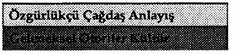